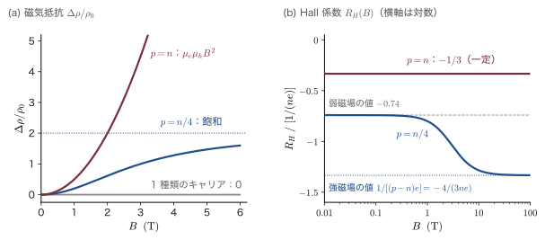
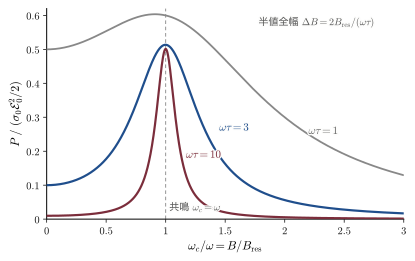
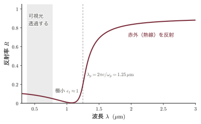
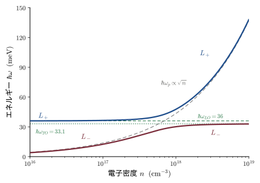
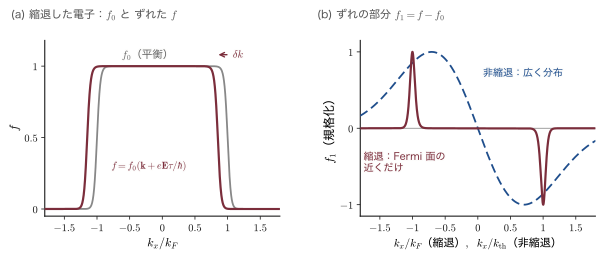
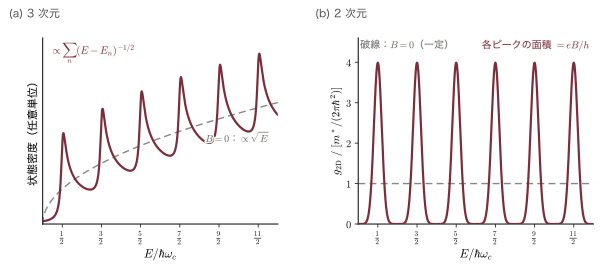
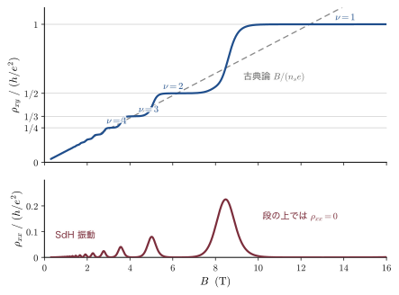

第21章固体中の電子の伝導現象 — 古典論から Landau 準位まで
トランジスタ，ダイオード，太陽電池，LED，スマートフォンの電子コンパスに入っている Hall（ホール）センサー——半導体デバイスとは，突き詰めれば「固体の中の電子の流れを操る装置」である．どのデバイスを理解するにも，まず電子の流れそのものをどう記述するかを知らなければならない．第15章では Drude（ドルーデ）模型で Ohm（オーム）の法則 $\jj=\sigma\EE$ を導き，第17章では半古典的運動方程式・有効質量・正孔・移動度を学んだ．そこで扱ったのは「一定の電場のもとで，1種類のキャリアが，一定の緩和時間で散乱される」という最も簡単な状況であった．第IV部の入口である本章は，そこから4つの方向へ話を広げる．
第一は電場と磁場が同時にあるときである（21.1節）．電子は Lorentz（ローレンツ）力で横へ曲がり，Hall 電圧が生じ，ときには抵抗そのものが磁場で増える（磁気抵抗）．すべてを支配する無次元数 $\omega_c\tau$ は，$1\,\mathrm{T}$ の磁場で，室温の銅では $0.004$，低温の GaAs の2次元電子（半導体の界面に閉じ込められて，界面に沿った面内でしか動けない電子の薄い層．高速トランジスタ HEMT の中で働いている．第24章24.7 で詳しく扱う）では $100$ にもなる．第二は交流のときである（21.2・21.3節）．マイクロ波を当てると，電子が磁場の中を回る振動数でだけ強い吸収が起こる（サイクロトロン共鳴．有効質量を直接測る方法）．電子全体が集団で揺れるプラズマ振動からは，透明電極 ITO が可視光を通し赤外線を反射する理由と，ドープした半導体の中で電荷が遮蔽される距離（Debye（デバイ）長．第24章の p-n 接合では，空乏層の端で電荷がなだらかに変わる幅の目安になる）がわかる．
第三は分布関数で扱うときである（21.4・21.5節）．実際の電子には速いものも遅いものもいる．散乱の時間がエネルギーによって違うと，Drude 模型には現れない効果——Hall 因子，横磁気抵抗，熱起電力の散乱機構による違い，Nernst（ネルンスト）効果——が現れる．これを扱う道具が Boltzmann（ボルツマン）方程式で，第22章の散乱過程と第23章の熱い電子はこの方程式の上に組み立てられる．
第四は量子化されるときである（21.6・21.7節）．強い磁場の中で電子の円運動は量子化され，Landau（ランダウ）準位と呼ばれるとびとびのエネルギーを持つ．その結果，抵抗が磁場の逆数に対して周期的に振動し（Shubnikov–de Haas（シュブニコフ・ド・ハース）振動），2次元電子では Hall 抵抗が $h/e^2=25\,812.807\,\Omega$ の整数分の1に驚くほど正確に量子化される（量子 Hall 効果）．最後に，伝導度を量子力学から求める Kubo（久保）公式の考え方，細い通路のコンダクタンスが $2e^2/h$ を単位に量子化される Landauer（ランダウアー）の公式，拡散と移動度を結ぶ Einstein（アインシュタイン）の関係を導く．これらは第23章と第24章で直ちに使う．
出発点は，高校物理で学ぶ Lorentz 力（磁場の中を動く電荷が受ける力．高校では大きさ $evB$ と，向きを決める Fleming（フレミング）の左手の法則を学ぶ．本章ではそれをベクトルの外積を使って $\FF=-e(\EE+\vv\times\BB)$ と書く．21.1.2 の「数学の道具」を参照）と，速度に比例する摩擦力（空気抵抗と同じ形）の2つだけである．そこから一歩ずつ，式変形を1行も飛ばさずに進む．使う数学は複素数，ベクトルの外積，偏微分と Taylor（テイラー）展開，簡単な積分，2行2列と3行3列の行列式，Gamma 関数，Dirac（ディラック）の $\delta$ 関数で，初めて使うところで「数学の道具」の箱で説明するか，付録A と姉妹編へのリンクを示す．
- 磁場中の Drude 方程式を成分ごとに解いて伝導度テンソル $\sigma_{xx}=\sigma_0/(1+\omega_c^2\tau^2)$，$\sigma_{xy}$ を導き，Hall 角 $\tan\theta_H=\omega_c\tau=\mu B$ と，1種類のキャリアでは磁気抵抗が生じない理由を説明できる
- 電子と正孔の2キャリア模型で磁気抵抗が現れることを示し，補償された半金属で磁気抵抗が飽和しない理由を説明できる
- サイクロトロン共鳴の吸収線形を円偏光成分に分けて導き，楕円体バンドのサイクロトロン質量 $m_c$ の公式から Si・Ge の共鳴磁場を計算できる
- プラズマ振動数，プラズマ反射端，Debye 長と Thomas–Fermi（トーマス・フェルミ）長，LO フォノン–プラズモン結合モードを導き，ドープした半導体や ITO の性質と結びつけられる
- Boltzmann 方程式を「位相空間の人数の保存」から導き，緩和時間近似で $\sigma=ne^2\langle\langle\tau\rangle\rangle/m^*$ と Seebeck（ゼーベック）係数を計算できる
- エネルギーに依存する $\tau$ から Hall 因子 $r_H$ と横磁気抵抗の係数を計算し，Corbino（コルビノ）円板と熱磁気効果の意味を説明できる
- Landau ゲージで Landau 準位 $E=(n+\tfrac12)\hbar\omega_c+\hbar^2k_z^2/2m^*$ を完全に導き，縮退度 $eB/h$，磁気長 $l_B$，状態密度，占有率 $\nu$ を求められる
- Shubnikov–de Haas 振動から2次元電子の面密度を求め，整数量子 Hall 効果 $\rho_{xy}=h/(\nu e^2)$ を局在状態とエッジ状態で説明できる
- Kubo 公式の考え方を理解し，電流の相関関数から Drude の式と Einstein の関係 $D=\mu k_BT/e$ を導ける
- Landauer の公式 $G=(2e^2/h)\sum_n\mathcal{T}_n$ を1次元で導き，Boltzmann 方程式が使える条件（$k_Fl\gg1$）を説明できる
初めて読むときの道順：21.1 → 21.2.1〜21.2.4 → 21.3.1〜21.3.4 → 21.4.1〜21.4.6 → 21.5.1〜21.5.2 → 21.6.1〜21.6.8 → 21.7.1，21.7.4〜21.7.6 と読めば，第22章から先で使う骨組みがそろう．21.2.5〜21.2.6（楕円体の谷と正孔），21.3.5〜21.3.6（結合モードとヘリコン），21.4.7（熱電効果），21.5.3〜21.5.7（磁気抵抗と熱磁気効果），21.6.9〜21.6.10（エッジ状態と分数量子 Hall 効果），21.7.2〜21.7.3（Kubo 公式と量子補正）は，2回目に読めばよい．
必要になったときに戻ればよいもの——第18章18.3（磁場中の軌道）と18.6（de Haas–van Alphen（ド・ハース・ファン・アルフェン）効果），第19章19.6（LST 関係），第20章20.6（Landau 反磁性），量子力学の調和振動子（量子力学 第13章13.3）．
数学——付録A A.8（複素数），A.5（Gamma 関数），A.3（Sommerfeld（ゾンマーフェルト）展開），A.9（Dirac のデルタ関数）．
21.1 静電磁場中の電子伝導の古典論
21.1.1 現象：磁石のそばの電流は横に曲がる
導線に電流を流して磁石を近づけると，導線は力を受けて動く．中学・高校で習う Fleming（フレミング）の左手の法則である．導線が力を受けるのは，中を流れている電子1個1個が Lorentz 力 $-e\,\vv\times\BB$ を受けるからである．では，導線ではなく幅のある平たい板に電流を流し，板に垂直に磁場を掛けたらどうなるだろうか．電子は横へ曲がり，板の片側の縁に溜まる．すると両側の縁のあいだに電圧が生じる．これが1879年に E. H. Hall（ホール）が見つけた Hall 効果（Hall effect）であり，その電圧を Hall 電圧という（図21.1）．
Hall 効果は身のまわりで大活躍している．スマートフォンの電子コンパス，モーターの回転位置を読むセンサー，電線に触れずに電流を測るクランプメーターには，Hall 効果を使った小さな半導体素子（Hall 素子）が入っている．Hall 電圧はキャリア密度に反比例するので，キャリアの少ない半導体ほど大きな電圧が出る（例題21.1）．
第15章では Hall 係数 $R_H=-1/(ne)$ を導き，第17章では電子と正孔が共存する場合に拡張した．本節では任意の電場と磁場に対して電流がどう流れるかを完全に解き，「伝導度テンソル」という3×3の表にまとめる．そこから Hall 角，磁気抵抗の有無，強磁場での振る舞いがすべて読み取れる．
記号の約束：第IV部で使う記号（本章の分）
- 電気素量は $e\gt0$ とし，電子の電荷を $-e$，正孔の電荷を $+e$ と書く（第15〜17章と同じ）．
- エネルギーは $E$ と書く（$E_c$，$E_v$，$E_F$，$E(\kk)$）．第16〜18章の $\epsilon_\kk$ を，本部では $E(\kk)$ と書く．化学ポテンシャル（Fermi 準位）は $E_F$ と書き，記号 $\mu$ は移動度（mobility）にだけ使う．第15・17章の化学ポテンシャル $\mu$ は，本章の $E_F$ のことである．場所によって違う化学ポテンシャルは，添字を付けて $E_{F,L}$，$E_{F,R}$（左右の電極，21.7.4），$E_{F,1}$，$E_{F,2}$（試料の上下の縁，21.6.9）のように書く．
- 電場はベクトルを $\EE$，その大きさと成分を $\mathcal{E}$（スクリプトの E），$\mathcal{E}_x,\mathcal{E}_y$ と書いて，エネルギー $E$ と区別する．磁束密度は $\BB$，その大きさは $B$（単位 T，テスラ）．
- 有効質量は $m^*$（エム・スター．結晶の周期ポテンシャルの効果を取り込んだ見かけの質量．第17章17.3），自由電子の質量は $m$．サイクロトロン角振動数（電子が磁場の中を回る角振動数）は $\omega_c\equiv eB/m^*$（オメガ・シー）．共鳴の位置から決まるサイクロトロン質量 $m_c$（21.2.5）と，移動度を決める伝導度有効質量 $m_{ce}$（第17章の表17.3．Si で $0.26m$）は別の量である．
- $\mu$（ミュー）は移動度：単位の電場あたりのドリフト速度の大きさで，21.1.3 で $\mu=e\tau/m^*$ と求める．添字の付いた $\mu_0$（真空の透磁率，21.3.6）と $\mu_B$（Bohr（ボーア）磁子，21.6.6）は移動度とは別の量である．
- $\tau$（タウ）は運動量緩和時間（電子が進む向きを忘れるまでの平均時間）である．第22章では他の緩和時間と区別して $\tau_m$ と書くが，本章では単に $\tau$ と書く．21.7.5 の少数キャリアの寿命 $\tau_n$（再結合で消えるまでの時間）は $\tau$ とは別の量である．
- 単位は SI．移動度は半導体の慣用の $\mathrm{cm^2/(V\,s)}$ も使うが，計算では $1\,\mathrm{cm^2/(V\,s)}=10^{-4}\,\mathrm{m^2/(V\,s)}$ と換算する．$\mu B$ は，$\mu$ を $\mathrm{m^2/(V\,s)}$，$B$ を T で入れると無次元の数になる（$1\,\mathrm{T}=1\,\mathrm{V\,s/m^2}$ だから）．
本章で2通りに使う文字（どちらの意味かは文脈で決まる）：
- $\rho$（ロー）：抵抗率 $\rho_{xx}$，$\rho_{xy}$，$\rho_0$ と，21.3.4 の電荷密度 $\rho(\rr)$．
- $\kappa$（カッパ）：21.3.3 の消衰係数（複素屈折率の虚部）と，21.4.7・21.5.6 の熱伝導率．
- $f$：分布関数 $f(\rr,\kk,t)$（21.4）と，マイクロ波の周波数 $f$（21.2）．
- $n$：電子の密度と，Landau 準位の番号 $n=0,1,2,\ldots$（21.6）．
- $D$：状態密度 $D(E)$（21.4），電束密度 $D$（21.3.3），拡散係数 $D$（21.7.5）．$S$：Seebeck 係数（21.4.7）と，運動量空間の断面積 $S$（21.2.5 の補足，21.6.7）．21.1.7 の導出の $S$，$D$ はその導出の中だけの略記である．
- $\Gamma$（ガンマ）：Gamma 関数 $\Gamma(s)$（21.4.6），Brillouin（ブリルアン）域の中心の $\Gamma$ 点（21.2.5），Landau 準位の幅 $\Gamma$（21.6.5）．
- $\bm A$：ベクトルポテンシャル（21.6）．面積を $A$ と書くこともある（21.3.2，演習21.6）．
このほか，$\nu$（ニュー）は21.6.7 の占有率で，振動数ではない．温度は $T$ と書き，透過確率（電子が通路を通り抜ける確率）は温度と区別して $\mathcal{T}$（スクリプトの T．第23・24章と同じ記号）と書く．交流の量は物理の慣用どおり $\ee^{-i\omega t}$ を掛けた複素振幅で書く（21.2.2．第25・27章と同じ約束）．
注意：本章の $\mu$ は移動度．化学ポテンシャルは $E_F$
多くの教科書（本書の第15・17章も）は化学ポテンシャルを $\mu$ と書く．第IV部では半導体デバイスの本の慣用に合わせて，$\mu$ を移動度にだけ使い，化学ポテンシャルは $E_F$ と書く．他の本の式を引くときは，$\mu$ がどちらの意味かを必ず確かめること．例えば第15章の Fermi–Dirac 分布 $1/[\ee^{(E-\mu)/k_BT}+1]$ は，本章では $1/[\ee^{(E-E_F)/k_BT}+1]$ と書く．また，$T=0$ の Fermi エネルギーと有限温度の化学ポテンシャルは厳密には別の量だが（差は $(k_BT/E_F)^2$ 程度），本章ではどちらも $E_F$ と書く．
21.1.2 運動方程式を立てる — 2つの力だけで出発する
考え方は単純である．結晶中の電子に働く力は2種類しかない．
- 外から掛けた電場と磁場の力：Lorentz 力 $\FF=-e(\EE+\vv\times\BB)$．
- 散乱による「摩擦」：電子はフォノンや不純物に散乱されて，平均すると時間 $\tau$ ごとに進む向きを忘れる．その効果を，速度に比例する抵抗力 $-m^*\vv/\tau$ で表す．自転車にかかる空気抵抗や，水中を沈む小石にかかる粘性抵抗と同じ形である．
格子のつくる周期ポテンシャルの力は，ここには現れない．その効果は有効質量 $m^*$ の中にすでに織り込まれているからである（第17章17.2 の半古典的運動方程式 $\hbar\dot\kk=\FF$ と，17.3 の有効質量）．
導出：磁場を含む Drude の運動方程式
第15章の Drude の運動方程式（15.6.1）を再掲する．電場だけのときは
$$ m\frac{\dd\vv}{\dd t}+\frac{m\vv}{\tau}=-e\EE $$であった．結晶中の電子なので $m$ を有効質量 $m^*$ に置き換え，右辺の力に Lorentz 力の磁場の部分 $-e\,\vv\times\BB$ を加えると
となる．左辺は「質量×加速度」，右辺の第1項は電場と磁場の力，第2項は摩擦力である．これが本節のすべての出発点である．∎
摩擦項の意味をもう一度確かめておく．外場を切る（$\EE=0$，$\BB=0$）と $m^*\dd\vv/\dd t=-m^*\vv/\tau$，両辺を $m^*$ で割って $\dd\vv/\dd t=-\vv/\tau$．この解は $\vv(t)=\vv(0)\,\ee^{-t/\tau}$ である．速度は時定数 $\tau$ で指数関数的に減衰する．$\tau$ は「方向を忘れるまでの時間」と読める．
数学の道具：外積 $\vv\times\BB$ を成分で書く
2つのベクトル $\bm a=(a_x,a_y,a_z)$，$\bm b=(b_x,b_y,b_z)$ の外積は
$$ \bm a\times\bm b=\left(a_yb_z-a_zb_y,\ \ a_zb_x-a_xb_z,\ \ a_xb_y-a_yb_x\right) $$である（$x\to y\to z\to x$ と順に回す）．磁場を $z$ 方向に取って $\BB=(0,0,B)$ とすると，$b_x=b_y=0$，$b_z=B$ を入れて
$$ \vv\times\BB=\left(v_yB-v_z\cdot0,\ \ v_z\cdot0-v_xB,\ \ v_x\cdot0-v_y\cdot0\right)=\left(v_yB,\ -v_xB,\ 0\right) $$となる．$z$ 成分がゼロなので，磁場の方向の運動には Lorentz 力が効かない．これは後で何度も使う．
定義：緩和時間 $\tau$ と移動度 $\mu$
- 緩和時間（relaxation time）$\tau$：外からの力を切ったとき，電子の平均の速度が $\vv(t)=\vv(0)\,\ee^{-t/\tau}$ と減っていく時定数．散乱によって電子が進む向きを忘れるまでの平均時間と読める．本章の $\tau$ は運動量緩和時間である．
- 移動度（mobility）$\mu$：一定の電場 $\mathcal{E}$ を掛けたときの定常のドリフト速度の大きさ $v_d$ を，電場の大きさで割ったもの：$\mu\equiv v_d/\mathcal{E}$．「$1\,\mathrm{V/m}$ の電場で毎秒何 m 流されるか」を表し，単位は $\mathrm{m^2/(V\,s)}$（半導体では $\mathrm{cm^2/(V\,s)}$ を使うことが多い）．式 \eqref{eq:21-eom} の定常解から $\mu=e\tau/m^*$ となる（次の21.1.3）．
- 磁場がないときの伝導度は，電流密度が $j=nev_d=ne\mu\mathcal{E}$ となることから $\sigma_0=ne\mu=ne^2\tau/m^*$ である．
21.1.3 定常解と伝導度テンソル
直流の電場を掛けてしばらく待つと，速度は一定値に落ち着く（$\dd\vv/\dd t=0$）．このときの速度（ドリフト速度）を求め，電流密度に直す．
導出：伝導度テンソルの成分を1つずつ求める
ステップ1：定常条件を成分に分ける．式 \eqref{eq:21-eom} で $\dd\vv/\dd t=0$ と置くと $0=-e(\EE+\vv\times\BB)-m^*\vv/\tau$．両辺に $\tau/m^*$ を掛けて移項すると
$$ \vv=-\frac{e\tau}{m^*}\left(\EE+\vv\times\BB\right) $$ここで移動度 $\mu\equiv e\tau/m^*$（第17章の式と同じ）と，サイクロトロン角振動数 $\omega_c\equiv eB/m^*$ を使う．$\mu B=\dfrac{e\tau}{m^*}B=\dfrac{eB}{m^*}\tau=\omega_c\tau$ であることに注意する．上で求めた $\vv\times\BB=(v_yB,-v_xB,0)$ を代入して成分ごとに書くと
$$ v_x=-\mu\mathcal{E}_x-\mu Bv_y=-\mu\mathcal{E}_x-\omega_c\tau\,v_y \qquad\text{(i)} $$ $$ v_y=-\mu\mathcal{E}_y+\mu Bv_x=-\mu\mathcal{E}_y+\omega_c\tau\,v_x \qquad\text{(ii)} $$ $$ v_z=-\mu\mathcal{E}_z \qquad\text{(iii)} $$(iii) は磁場がないときとまったく同じである．(i) と (ii) は $v_x$ と $v_y$ の連立1次方程式になっている．
ステップ2：連立方程式を解く．(ii) を (i) の右辺の $v_y$ に代入する：
$$ v_x=-\mu\mathcal{E}_x-\omega_c\tau\left(-\mu\mathcal{E}_y+\omega_c\tau\,v_x\right) =-\mu\mathcal{E}_x+\omega_c\tau\,\mu\mathcal{E}_y-(\omega_c\tau)^2v_x $$右辺の $-(\omega_c\tau)^2v_x$ を左辺に移すと
$$ \left[1+(\omega_c\tau)^2\right]v_x=-\mu\left(\mathcal{E}_x-\omega_c\tau\,\mathcal{E}_y\right) \quad\Longrightarrow\quad v_x=-\frac{\mu\left(\mathcal{E}_x-\omega_c\tau\,\mathcal{E}_y\right)}{1+\omega_c^2\tau^2} $$これを (ii) に戻すと
$$ v_y=-\mu\mathcal{E}_y-\frac{\omega_c\tau\,\mu\left(\mathcal{E}_x-\omega_c\tau\,\mathcal{E}_y\right)}{1+\omega_c^2\tau^2} =-\mu\,\frac{\mathcal{E}_y\left(1+\omega_c^2\tau^2\right)+\omega_c\tau\,\mathcal{E}_x-\omega_c^2\tau^2\mathcal{E}_y}{1+\omega_c^2\tau^2} =-\frac{\mu\left(\mathcal{E}_y+\omega_c\tau\,\mathcal{E}_x\right)}{1+\omega_c^2\tau^2} $$（分子の $\omega_c^2\tau^2\mathcal{E}_y$ が打ち消し合った．）
ステップ3：電流密度に直す．電子の電流密度は $\jj=(-e)n\vv$ である．$ne\mu=ne^2\tau/m^*\equiv\sigma_0$（磁場がないときの伝導度）を使うと
$$ j_x=-ne\,v_x=\frac{\sigma_0}{1+\omega_c^2\tau^2}\,\mathcal{E}_x-\frac{\sigma_0\,\omega_c\tau}{1+\omega_c^2\tau^2}\,\mathcal{E}_y $$ $$ j_y=-ne\,v_y=\frac{\sigma_0\,\omega_c\tau}{1+\omega_c^2\tau^2}\,\mathcal{E}_x+\frac{\sigma_0}{1+\omega_c^2\tau^2}\,\mathcal{E}_y $$ $$ j_z=-ne\,v_z=\sigma_0\,\mathcal{E}_z $$ステップ4：表にまとめる．$j_i=\sum_j\sigma_{ij}\mathcal{E}_j$ と書いたときの係数 $\sigma_{ij}$ を並べたものを伝導度テンソル（conductivity tensor）という．∎
定理21.1 磁場中の伝導度テンソル（1種類のキャリア，$\BB=B\hat z$）
複号は上が電子，下が正孔である．すなわち
$$ \sigma_{xx}=\sigma_{yy}=\frac{\sigma_0}{1+\omega_c^2\tau^2},\qquad \sigma_{xy}=-\sigma_{yx}=\mp\frac{\sigma_0\,\omega_c\tau}{1+\omega_c^2\tau^2},\qquad \sigma_{zz}=\sigma_0 $$大きさで言えば $\abs{\sigma_{xy}}=\sigma_0\omega_c\tau/(1+\omega_c^2\tau^2)$ であり，符号がキャリアの電荷の符号を表す．
正孔の場合は，式 \eqref{eq:21-eom} の $-e$ を $+e$ に，$m^*$ を正孔の有効質量に置き換えて同じ計算をすればよい（第17章で見たとおり，正孔は電荷 $+e$，正の質量の粒子としてふるまう）．ステップ1の $-\mu$ がすべて $+\mu$ になり，$\vv\times\BB$ の項の符号も変わるので，$\sigma_{xx}$ はそのまま，$\sigma_{xy}$ だけが符号を変える．
物理的意味：強い磁場では電流が「流れにくく」見える
式 \eqref{eq:21-sigma-tensor} の $\sigma_{xx}=\sigma_0/(1+\omega_c^2\tau^2)$ は，$\omega_c\tau\gg1$ で $\sigma_0/(\omega_c\tau)^2$ のようにゼロに近づく．$x$ 方向に電場を掛けても $x$ 方向にはほとんど電流が流れない．電子は電場に押されて動き出すが，すぐに磁場で曲げられて，散乱される前に何周も回ってしまうからである．代わりに $\sigma_{yx}$ は $\pm\sigma_0/(\omega_c\tau)=\pm ne/B$ に近づく（複号は上が電子）．強磁場では電流は電場と直角に流れる．
この $\abs{\sigma_{yx}}\to ne/B$ には $\tau$ も $m^*$ も入っていない．21.6節の量子 Hall 効果は，この量の大きさが $e^2/h$ の整数倍に量子化される現象である．
21.1.4 抵抗率テンソル，Hall 電場，Hall 角
実験で測るのはふつう抵抗率のほうである．試料に電流 $\jj$ を流し，生じた電場 $\EE$ を電圧として測る．つまり $\EE=\rho\,\jj$ の係数 $\rho_{ij}$（抵抗率テンソル）を測っている．$\rho$ は $\sigma$ の逆行列である．$xy$ の部分は2×2なので，次の道具を使うと簡単に逆行列が求まる．
数学の道具：$\begin{pmatrix}a&b\\-b&a\end{pmatrix}$ 型の行列は複素数 $a+ib$ と同じ
行列 $M=\begin{pmatrix}a&b\\-b&a\end{pmatrix}$ を考える．2×2行列の逆行列の公式 $\begin{pmatrix}p&q\\r&s\end{pmatrix}^{-1}=\dfrac{1}{ps-qr}\begin{pmatrix}s&-q\\-r&p\end{pmatrix}$ に $p=s=a$，$q=b$，$r=-b$ を入れると $ps-qr=a^2+b^2$ だから
$$ M^{-1}=\frac{1}{a^2+b^2}\begin{pmatrix}a&-b\\ b&a\end{pmatrix} $$一方，複素数 $z=a+ib$ の逆数は，分母と分子に $a-ib$ を掛けて $\dfrac{1}{z}=\dfrac{a-ib}{a^2+b^2}$．実部が $a/(a^2+b^2)$，虚部が $-b/(a^2+b^2)$ であり，これは $M^{-1}$ の (1,1) 成分と (1,2) 成分にそれぞれ一致している．同様に和も積も対応するので，この型の行列は「(1,1) 成分＋$i$×(1,2) 成分」という複素数として計算してよい．
定義：Hall 配置，Hall 係数，Hall 角
$x$ 方向に電流密度 $j_x$ を流し，$z$ 方向に磁場 $B$ を掛け，$y$ 方向には電流を流さない（$j_y=0$）配置を Hall 配置という（図21.1）．このとき生じる横向きの電場 $\mathcal{E}_y$（Hall 電場）を使って
$$ R_H\equiv\frac{\mathcal{E}_y}{j_xB}\quad(\text{Hall 係数}),\qquad \tan\theta_H\equiv\frac{\abs{\mathcal{E}_y}}{\mathcal{E}_x}\quad(\text{Hall 角 }\theta_H) $$と定義する．Hall 角は，試料の中の電場 $\EE$ が電流 $\jj$ の向きから傾いている角度である（図21.1(b)）．
導出：抵抗率テンソルと Hall 係数
ステップ1：複素数にまとめる．電子について，定理21.1 の $xy$ 部分は $a=\sigma_{xx}=\sigma_0/(1+\omega_c^2\tau^2)$，$b=\sigma_{xy}=-\sigma_0\omega_c\tau/(1+\omega_c^2\tau^2)$ の型である．対応する複素数は
$$ Z=\sigma_{xx}+i\sigma_{xy}=\frac{\sigma_0\left(1-i\omega_c\tau\right)}{1+\omega_c^2\tau^2} =\frac{\sigma_0\left(1-i\omega_c\tau\right)}{\left(1-i\omega_c\tau\right)\left(1+i\omega_c\tau\right)} =\frac{\sigma_0}{1+i\omega_c\tau} $$（$1+\omega_c^2\tau^2=(1-i\omega_c\tau)(1+i\omega_c\tau)$ を使って約分した．）
ステップ2：逆数を取る．
$$ \frac{1}{Z}=\frac{1+i\omega_c\tau}{\sigma_0}=\frac{1}{\sigma_0}+i\,\frac{\omega_c\tau}{\sigma_0} $$実部が $\rho_{xx}$，虚部が $\rho_{xy}$ である．$\omega_c\tau/\sigma_0=\dfrac{eB\tau}{m^*}\cdot\dfrac{m^*}{ne^2\tau}=\dfrac{B}{ne}$ なので
ステップ3：Hall 配置．図21.1 のように $x$ 方向に電流を流し，$y$ 方向には流さない（$j_y=0$）．$\EE=\rho\,\jj$ より $\mathcal{E}_x=\rho_{xx}j_x$，$\mathcal{E}_y=\rho_{yx}j_x=-\dfrac{B}{ne}j_x$．Hall 係数の定義 $R_H\equiv\mathcal{E}_y/(j_xB)$ に入れると
$$ R_H=\frac{\rho_{yx}}{B}=-\frac{1}{ne} $$第15章の結果（15.7節）が，任意の強さの磁場で成り立つことが確かめられた．∎
図21.1(b) のように，Hall 配置では電場 $\EE$ が電流 $\jj$（$x$ 方向）から傾いている．その傾きの角が，上で定義した Hall 角（Hall angle）$\theta_H$ である．
導出：Hall 角 $\tan\theta_H=\omega_c\tau=\mu B$
上の結果から $\mathcal{E}_x=j_x/\sigma_0$，$\abs{\mathcal{E}_y}=Bj_x/(ne)$．比を取ると $j_x$ が消えて
$$ \tan\theta_H=\frac{\abs{\mathcal{E}_y}}{\mathcal{E}_x}=\frac{Bj_x/(ne)}{j_x/\sigma_0}=\frac{\sigma_0B}{ne}=\frac{ne\mu B}{ne}=\mu B $$$\mu B=\omega_c\tau$ だから
∎ Hall 角は移動度と磁場の積だけで決まる．試料の形にもキャリア密度にもよらない．
注意：$\rho_{xy}\ne1/\sigma_{xy}$ — テンソルの逆は成分ごとの逆数ではない
抵抗率テンソルは伝導度テンソルの逆行列であって，成分ごとの逆数ではない．1種類のキャリアでは $\rho_{xx}=1/\sigma_0$ だが，$1/\sigma_{xx}=(1+\omega_c^2\tau^2)/\sigma_0$ は磁場とともに大きくなり，両者が一致するのは $B=0$ のときだけである．また，上の数学の道具で $\sigma_{xx}=0$ と置くと $\rho_{xx}+i\rho_{xy}=1/(i\sigma_{xy})=-i/\sigma_{xy}$ なので，$\rho_{xx}=0$，$\rho_{xy}=-1/\sigma_{xy}$（$\rho_{yx}=+1/\sigma_{xy}$）となる．伝導度 $\sigma_{xx}$ がゼロのとき抵抗率 $\rho_{xx}$ もゼロになりうるのはこのためで，21.6.8 の量子 Hall 効果ではこの性質が主役になる．
21.1.5 なぜ1種類のキャリアでは磁気抵抗が現れないのか
磁場を掛けると抵抗が変わる現象を磁気抵抗（magnetoresistance）という．式 \eqref{eq:21-rho-tensor} は，Drude 模型で1種類のキャリアしかないとき，$\rho_{xx}$ は磁場によらない，すなわち磁気抵抗はゼロであると言っている．21.1.3 では $\sigma_{xx}$ が磁場で小さくなったのに，$\rho_{xx}$ は変わらない．矛盾ではないか．
なぜ：Hall 電場が Lorentz 力を「全員について」打ち消すから
Hall 配置の定常状態では，横向きの力がつり合っている：電子1個に働く $y$ 方向の力は
$$ F_y=-e\mathcal{E}_y-e\left(\vv\times\BB\right)_y=-e\mathcal{E}_y+ev_xB=0 $$すなわち $\mathcal{E}_y=v_xB$ である．Drude 模型ではすべての電子が同じドリフト速度 $v_x$ を持つので，このつり合いは1個1個の電子について同時に成り立つ．すると，どの電子にとっても横向きの力は正味ゼロであり，電子は磁場がないときとまったく同じように $x$ 方向にまっすぐ進む．だから $x$ 方向の抵抗は変わらない．
$\sigma_{xx}$ が小さくなったのは，$\mathcal{E}_y=0$（横の電場が無い）という別の条件の話である．側面を短絡して Hall 電場が立たないようにすると，電子は曲がったまま進むので確かに流れにくくなる（21.5節の Corbino 円板）．
逆に言えば，速さの違う電子が混じっていると，Hall 電場は平均的な電子の Lorentz 力しか打ち消せない．速い電子は曲げられすぎ，遅い電子は Hall 電場に押し戻されすぎて，どちらも斜めに進み，$x$ 方向に進む効率が落ちる．これが磁気抵抗の正体である．「速さの違う電子」は，電子と正孔の2種類が混じる場合（21.1.7）と，1種類でもエネルギー分布があって $\tau$ がエネルギーによる場合（21.5節）に現れる．
21.1.6 $\omega_c\tau$ の数値感覚
伝導度テンソルの形を決めるのは $\omega_c\tau=\mu B$ ただ1つである．$\omega_c\tau\ll1$ を弱磁場，$\omega_c\tau\gg1$ を強磁場という．「強い」かどうかは磁場の大きさだけでは決まらず，移動度との積で決まる．代表的な値を表21.1 にまとめる．
| 物質・条件 | $\mu$ ($\mathrm{cm^2/(V\,s)}$) | $\mu$ ($\mathrm{m^2/(V\,s)}$) | $\omega_c\tau$（1 T） | Hall 角 |
|---|---|---|---|---|
| Cu（室温） | $43$ | $4.3\times10^{-3}$ | $0.004$ | $0.25^\circ$ |
| n 型 Si（室温，低ドープ） | $1400$ | $0.14$ | $0.14$ | $8^\circ$ |
| n 型 GaAs（室温，低ドープ） | $8500$ | $0.85$ | $0.85$ | $40^\circ$ |
| n 型 InSb（室温） | $7.7\times10^{4}$ | $7.7$ | $7.7$ | $83^\circ$ |
| GaAs/AlGaAs の2次元電子（極低温） | $10^{6}$〜$10^{7}$ | $10^{2}$〜$10^{3}$ | $10^{2}$〜$10^{3}$ | ほぼ $90^\circ$ |
（Si の移動度について：第17章の表17.10 では電子 $1350$，正孔 $480\,\mathrm{cm^2/(V\,s)}$ とした．文献により電子で $1350$〜$1500\,\mathrm{cm^2/(V\,s)}$ ほどの幅があり，本章の例題では電子 $1400$，正孔 $450\,\mathrm{cm^2/(V\,s)}$ を使う．）
表21.1 からわかるように，Hall 素子に InSb や GaAs が使われるのは，移動度が大きく Hall 角が大きい（感度が高い）からである．一方，金属の銅では室温で $\omega_c\tau$ が $0.004$ しかなく，磁場はほとんど電流を曲げられない．
例題21.1 銅の Hall 係数と $\omega_c\tau$
Cu の伝導電子密度は $n=8.47\times10^{28}\,\mathrm{m^{-3}}$，室温の抵抗率は $\rho=1.70\times10^{-8}\,\Omega\,\mathrm{m}$ である．自由電子模型（$m^*=m$）で (1) Hall 係数 $R_H$，(2) 緩和時間 $\tau$，(3) $B=1\,\mathrm{T}$ での $\omega_c\tau$ と Hall 角，(4) 幅 $w=1\,\mathrm{cm}$，厚さ $t=0.1\,\mathrm{mm}$ の銅箔に $I=1\,\mathrm{A}$ を流し，箔の面に垂直に $B=1\,\mathrm{T}$ を掛けたときの Hall 電圧，を求めよ．
解答．(1) 式 \eqref{eq:21-rho-tensor} の結果 $R_H=-1/(ne)$ に数値を入れる：
$$ R_H=-\frac{1}{(8.47\times10^{28})(1.602\times10^{-19})}=-\frac{1}{1.357\times10^{10}}=-7.37\times10^{-11}\ \mathrm{m^3/C} $$（第15章の表15.5 の実測値は $-5.5\times10^{-11}\,\mathrm{m^3/C}$．Fermi 面が球からずれている分だけ違う．）
(2) $\sigma_0=ne^2\tau/m$ を $\tau$ について解くと $\tau=m/(ne^2\rho)$．分母は
$$ \begin{aligned} ne^2\rho&=(8.47\times10^{28})(1.602\times10^{-19})^2(1.70\times10^{-8})\\ &=(8.47\times10^{28})(2.566\times10^{-38})(1.70\times10^{-8})=3.695\times10^{-17} \end{aligned} $$なので
$$ \tau=\frac{9.109\times10^{-31}}{3.695\times10^{-17}}=2.47\times10^{-14}\ \mathrm{s} $$(3) 自由電子のサイクロトロン角振動数は
$$ \omega_c=\frac{eB}{m}=\frac{(1.602\times10^{-19})(1)}{9.109\times10^{-31}}=1.759\times10^{11}\ \mathrm{s^{-1}} $$よって
$$ \omega_c\tau=(1.759\times10^{11})(2.47\times10^{-14})=4.3\times10^{-3} $$ $$ \theta_H=\arctan(4.3\times10^{-3})=4.3\times10^{-3}\ \mathrm{rad}=0.25^\circ $$(4) Hall 電圧は $V_H=\abs{\mathcal{E}_y}w=\abs{R_H}j_xBw$．電流密度は $j_x=I/(wt)$ なので $V_H=\abs{R_H}IB/t$（幅 $w$ が消える）：
$$ V_H=\frac{(7.37\times10^{-11})(1)(1)}{1\times10^{-4}}=7.4\times10^{-7}\ \mathrm{V}=0.74\ \mu\mathrm{V} $$∎ 1 T もの磁場を掛けても，金属の Hall 電圧は1 μV にも届かない．キャリア密度が $10^{29}\,\mathrm{m^{-3}}$ と大きすぎるからである．キャリア密度が $10^{6}$ 分の1の半導体を使えば Hall 電圧は $10^{6}$ 倍になる．Hall 素子が半導体で作られる理由がここにある．
例題21.2 高移動度 GaAs 2次元電子の $\omega_c\tau$
GaAs/AlGaAs ヘテロ接合の界面にできる2次元電子（面密度 $n_s=3\times10^{11}\,\mathrm{cm^{-2}}$，$m^*=0.067m$）が，極低温で移動度 $\mu=1\times10^{6}\,\mathrm{cm^2/(V\,s)}$ を示した．(1) $B=1\,\mathrm{T}$ での $\omega_c\tau$ と Hall 角，(2) 緩和時間 $\tau$，(3) 平均自由行程 $l=v_F\tau$，(4) $\sigma_{xx}/\sigma_0$ を求めよ．2次元の Fermi 波数は $k_F=\sqrt{2\pi n_s}$ である（スピン2重縮退）．
解答．(1) 単位を直す：$\mu=1\times10^{6}\times10^{-4}=100\ \mathrm{m^2/(V\,s)}$．式 \eqref{eq:21-hall-angle} より
$$ \omega_c\tau=\mu B=100\times1=100,\qquad \theta_H=\arctan100=89.43^\circ $$(2) $\mu=e\tau/m^*$ より
$$ \tau=\frac{\mu m^*}{e}=\frac{100\times(0.067\times9.109\times10^{-31})}{1.602\times10^{-19}}=\frac{100\times6.103\times10^{-32}}{1.602\times10^{-19}}=3.81\times10^{-11}\ \mathrm{s}=38\ \mathrm{ps} $$(3) $n_s=3\times10^{11}\,\mathrm{cm^{-2}}=3\times10^{15}\,\mathrm{m^{-2}}$ だから
$$ k_F=\sqrt{2\pi\times3\times10^{15}}=\sqrt{1.885\times10^{16}}=1.373\times10^{8}\ \mathrm{m^{-1}} $$Fermi 速度は
$$ v_F=\frac{\hbar k_F}{m^*}=\frac{(1.0546\times10^{-34})(1.373\times10^{8})}{6.103\times10^{-32}}=2.37\times10^{5}\ \mathrm{m/s} $$ $$ l=v_F\tau=(2.37\times10^{5})(3.81\times10^{-11})=9.0\times10^{-6}\ \mathrm{m}=9\ \mu\mathrm{m} $$(4) 定理21.1 より
$$ \frac{\sigma_{xx}}{\sigma_0}=\frac{1}{1+\omega_c^2\tau^2}=\frac{1}{1+10^4}=1.0\times10^{-4} $$∎ 電子は散乱されるまでに $\omega_c\tau/(2\pi)\approx16$ 周も回る．平均自由行程 $9\,\mu\mathrm{m}$ は髪の毛の太さの10分の1ほどで，原子間隔の1万倍以上である．このような「きれいな」2次元電子でこそ，21.6節の量子 Hall 効果がはっきり見える．高移動度トランジスタ（HEMT）もこの2次元電子を使っている．
21.1.7 2種類のキャリアと磁気抵抗の出現
半導体では電子と正孔が共存することがある（真性領域，半金属，光で励起したとき）．第17章では弱磁場の Hall 係数を求めた．その結果を再掲する（17.9.1）：
$$ R_H=\frac{1}{e}\,\frac{p\,\mu_h^{2}-n\,\mu_e^{2}}{\left(n\mu_e+p\mu_h\right)^{2}}\qquad(\omega_c\tau\ll1) $$ここでは磁場の強さを制限せずに解き，磁気抵抗が現れることを示す．考え方は「電子と正孔は同じ電場の中を並行して流れる2本の通り道であり，伝導度は足し算になる」ということだけである．
導出：2キャリア模型の磁気抵抗
ステップ1：各キャリアを複素数で表す．電子の伝導度を $\sigma_e=ne\mu_e$，正孔を $\sigma_h=pe\mu_h$ と書き，$\beta_e\equiv\mu_eB$，$\beta_h\equiv\mu_hB$ と置く．定理21.1 と上の数学の道具より，電子は $Z_e=\sigma_e/(1+i\beta_e)$（21.1.4 のステップ1と同じ）．正孔は $\sigma_{xy}$ の符号が逆なので $Z_h=\sigma_h/(1-i\beta_h)$ である（実際，$\dfrac{\sigma_h}{1-i\beta_h}=\dfrac{\sigma_h(1+i\beta_h)}{1+\beta_h^2}$ の虚部は $+\sigma_h\beta_h/(1+\beta_h^2)$ である）．
ステップ2：足して通分する．同じ電場で並行に流れるので伝導度テンソルは足し算になり，複素数も足し算になる：
$$ Z=\frac{\sigma_e}{1+i\beta_e}+\frac{\sigma_h}{1-i\beta_h} =\frac{\sigma_e\left(1-i\beta_h\right)+\sigma_h\left(1+i\beta_e\right)}{\left(1+i\beta_e\right)\left(1-i\beta_h\right)} =\frac{S+iD}{\left(1+i\beta_e\right)\left(1-i\beta_h\right)} $$ここで分子を実部と虚部に分けて $S\equiv\sigma_e+\sigma_h$，$D\equiv\sigma_h\beta_e-\sigma_e\beta_h$ と置いた．
ステップ3：逆数を取る．
$$ \frac{1}{Z}=\frac{\left(1+i\beta_e\right)\left(1-i\beta_h\right)}{S+iD} =\frac{\left(1+i\beta_e\right)\left(1-i\beta_h\right)\left(S-iD\right)}{S^2+D^2} $$分子の前半を展開すると
$$ (1+i\beta_e)(1-i\beta_h)=1-i\beta_h+i\beta_e+\beta_e\beta_h=(1+\beta_e\beta_h)+i(\beta_e-\beta_h) $$これに $(S-iD)$ を掛けた実部は $(1+\beta_e\beta_h)S+(\beta_e-\beta_h)D$ である（$i\times(-i)=1$ に注意）．したがって
$$ \rho_{xx}=\mathrm{Re}\,\frac{1}{Z}=\frac{(1+\beta_e\beta_h)S+(\beta_e-\beta_h)D}{S^2+D^2} $$ステップ4：分子を整理する．$S$ と $D$ を戻して展開する：
$$ (1+\beta_e\beta_h)(\sigma_e+\sigma_h)+(\beta_e-\beta_h)(\sigma_h\beta_e-\sigma_e\beta_h) $$ $$ =S+\sigma_e\beta_e\beta_h+\sigma_h\beta_e\beta_h+\sigma_h\beta_e^2-\sigma_e\beta_e\beta_h-\sigma_h\beta_e\beta_h+\sigma_e\beta_h^2 =S+\sigma_h\beta_e^2+\sigma_e\beta_h^2 $$ステップ5：磁気抵抗の比を作る．$B=0$ では $\beta_e=\beta_h=D=0$ なので $\rho_0=S/S^2=1/S$．よって
$$ \frac{\Delta\rho}{\rho_0}\equiv\frac{\rho_{xx}(B)-\rho_0}{\rho_0}=S\rho_{xx}-1 =\frac{S^2+S\left(\sigma_h\beta_e^2+\sigma_e\beta_h^2\right)-S^2-D^2}{S^2+D^2} =\frac{S\left(\sigma_h\beta_e^2+\sigma_e\beta_h^2\right)-D^2}{S^2+D^2} $$分子を展開する：
$$ (\sigma_e+\sigma_h)(\sigma_h\beta_e^2+\sigma_e\beta_h^2)-(\sigma_h\beta_e-\sigma_e\beta_h)^2 $$ $$ =\sigma_e\sigma_h\beta_e^2+\sigma_e^2\beta_h^2+\sigma_h^2\beta_e^2+\sigma_e\sigma_h\beta_h^2-\sigma_h^2\beta_e^2+2\sigma_e\sigma_h\beta_e\beta_h-\sigma_e^2\beta_h^2 =\sigma_e\sigma_h\left(\beta_e+\beta_h\right)^2 $$$\beta=\mu B$ を戻すと
∎ 分子は正なので，2種類のキャリアがあれば必ず抵抗が増える（正の磁気抵抗）．どちらか一方が無ければ（$\sigma_e=0$ か $\sigma_h=0$）分子がゼロになり，21.1.5 の結論に戻る．
物理的意味：飽和する磁気抵抗と，飽和しない磁気抵抗
(1) 弱磁場．分母の $B^2$ の項を無視すると
$$ \frac{\Delta\rho}{\rho_0}\simeq\frac{\sigma_e\sigma_h(\mu_e+\mu_h)^2B^2}{(\sigma_e+\sigma_h)^2}\propto B^2 $$(2) 強磁場で $n\ne p$．分子も分母も $B^2$ に比例するので，比は一定値 $\sigma_e\sigma_h(\mu_e+\mu_h)^2/(\sigma_h\mu_e-\sigma_e\mu_h)^2$ に飽和する．
(3) 電子と正孔が同数（$n=p$，補償）．このとき
$$ \sigma_h\mu_e-\sigma_e\mu_h=pe\mu_h\mu_e-ne\mu_e\mu_h=(p-n)e\mu_e\mu_h=0 $$なので分母の $B^2$ の項が消え，
$$ \frac{\Delta\rho}{\rho_0}=\frac{(ne\mu_e)(ne\mu_h)(\mu_e+\mu_h)^2B^2}{n^2e^2(\mu_e+\mu_h)^2}=\mu_e\mu_hB^2 $$と，どこまでも $B^2$ で増え続ける．なぜだろうか．電子は $-x$ 向きに，正孔は $+x$ 向きに進むが，電荷の符号も逆なので，Lorentz 力はどちらも同じ側の縁（図21.1 では下の縁）へ向く．一方，Hall 電場は電子と正孔を逆向きに押す．したがって1つの Hall 電場で，電子と正孔の両方の横向きの力を同時に打ち消すことはできない．しかも $n=p$ では，同じ縁に電子と正孔がほぼ同じだけ寄ってきて電荷が打ち消し合うので，Hall 電場そのものも大きくならない．実際，Hall 係数 $R_H=(\mu_h-\mu_e)/[(\mu_h+\mu_e)ne]$ は磁場によらない一定値で（ゼロではない．演習21.1），Hall 電場は $B$ に比例してしか増えず，$B^2$ で増える縦の電場に比べて小さいままである（Hall 角は $\abs{\tan\theta_H}=\abs{\mu_h-\mu_e}B/(1+\mu_e\mu_hB^2)\to0$）．こうして電子も正孔も横へ曲げられたまま斜めに進み，$x$ 方向に進む効率が磁場とともに下がり続ける．電子と正孔がほぼ同数の半金属（Bi，グラファイトなど）で大きな磁気抵抗が観測されるのはこのためである．
図21.2 に3つの場合を比べる．Hall 係数の磁場依存性（演習21.1）も合わせて示した．

注意：$n=p$ でも Hall 係数はゼロにならない
「電子と正孔が同数なら Hall 電圧は打ち消し合ってゼロになる」と考えるのは誤りである．Hall 係数を決めるのは数だけでなく，数と移動度の2乗の積である．弱磁場では $R_H=\frac1e(p\mu_h^2-n\mu_e^2)/(n\mu_e+p\mu_h)^2$ で，$R_H=0$ になるのは $p\mu_h^2=n\mu_e^2$ のときであって，$n=p$ のときではない．$n=p$ なら $R_H=(\mu_h-\mu_e)/[(\mu_h+\mu_e)ne]$ で，移動度の大きいほうのキャリアの符号が出る（例題21.3 の InSb では，ほぼ電子だけの値になる）．また，強磁場の極限の式 $R_H\to1/[(p-n)e]$（演習21.1）は $n\ne p$ のときだけのもので，$n=p$ では $R_H$ はどんな磁場でも上の一定値のままである．
例題21.3 真性 InSb の磁気抵抗
室温の真性 InSb では $n=p=n_i$（およそ $2\times10^{16}\,\mathrm{cm^{-3}}$），電子の移動度 $\mu_e=7.7\times10^{4}\,\mathrm{cm^2/(V\,s)}$，正孔の移動度 $\mu_h=850\,\mathrm{cm^2/(V\,s)}$ である．(1) $B=0.1\,\mathrm{T}$ と $1\,\mathrm{T}$ での $\Delta\rho/\rho_0$，(2) 弱磁場の Hall 係数を $1/(n_ie)$ を単位として求めよ．
解答．単位を直す：$\mu_e=7.7\ \mathrm{m^2/(V\,s)}$，$\mu_h=0.085\ \mathrm{m^2/(V\,s)}$．
(1) $n=p$ なので，上の (3) により磁場の強さによらず $\Delta\rho/\rho_0=\mu_e\mu_hB^2$ が厳密に成り立つ：
$$ \begin{aligned} B=0.1\,\mathrm{T}&:\quad \frac{\Delta\rho}{\rho_0}=7.7\times0.085\times(0.1)^2=6.5\times10^{-3}\ \ (0.65\,\%)\\ B=1\,\mathrm{T}&:\quad \frac{\Delta\rho}{\rho_0}=7.7\times0.085\times1^2=0.65\ \ (65\,\%) \end{aligned} $$(2) 第17章の式で $n=p=n_i$ と置くと $R_H=\dfrac{1}{n_ie}\cdot\dfrac{\mu_h^2-\mu_e^2}{(\mu_e+\mu_h)^2}=\dfrac{1}{n_ie}\cdot\dfrac{\mu_h-\mu_e}{\mu_h+\mu_e}$．数値は
$$ \frac{\mu_h-\mu_e}{\mu_h+\mu_e}=\frac{0.085-7.7}{0.085+7.7}=\frac{-7.615}{7.785}=-0.978 $$∎ 正孔と電子が同数いても，Hall 係数はほぼ電子だけの値 $-1/(n_ie)$ になる．電子の移動度が90倍も大きく，磁場で曲げられるのはほとんど電子だからである．一方，磁気抵抗は $\mu_e\mu_h$ の積で決まるので，移動度の小さい正孔も効いている．
21.2 サイクロトロン共鳴
21.2.1 現象：特定の磁場でだけマイクロ波が吸収される
ブランコは，揺れの周期に合わせて押したときだけ大きく揺れる．共鳴である．磁場の中の電子も「固有の周期」を持っている．第17章の例題17.6 で見たように，磁場 $B$ の中の電子は角振動数
$$ \omega_c=\frac{eB}{m^*} $$で円運動する．この角振動数は円の半径にも電子の速さにもよらない（振り子の等時性と同じ性質である）．だから，同じ角振動数で振動する電場を掛けると，すべての電子が足並みをそろえて加速され，電場のエネルギーを強く吸収する．これがサイクロトロン共鳴（cyclotron resonance）である．
実験の配置は簡単である．電磁石の2つの極のあいだに空洞共振器（マイクロ波を閉じ込めて，その電場を強めるための金属の箱）を置き，その中に試料を入れる．マイクロ波は導波管（マイクロ波を通す金属の管）で送り込み，空洞を通った（あるいは空洞で反射された）マイクロ波の強さを検出器で測る．試料が吸収すると検出されるマイクロ波が弱くなるので，吸収の大きさがわかる．周波数を一定（例えば $24\,\mathrm{GHz}$）に保ったまま電磁石の磁場をゆっくり変えて，マイクロ波の吸収を記録する．吸収が鋭いピークを示す磁場 $B_{\rm res}$ を読めば，$\omega=eB_{\rm res}/m^*$ から有効質量が
$$ m^*=\frac{eB_{\rm res}}{\omega} $$と直接求まる．有効質量をバンド計算にも統計にも頼らずに測る方法である．1953〜1955年に Dresselhaus（ドレッセルハウス），Kip（キップ），Kittel（キッテル）は Ge と Si でこの実験を行い，伝導帯の谷が回転楕円体であること，価電子帯に重い正孔と軽い正孔があることを明らかにした．
21.2.2 交流電場と静磁場 — 円偏光に分けて解く
$z$ 方向に静磁場 $\BB=B\hat z$ を掛け，$xy$ 面内に角振動数 $\omega$ の交流電場を掛ける．物理の慣用に従って，振動する量を複素数で
$$ \EE(t)=\mathrm{Re}\left[\EE\,\ee^{-i\omega t}\right],\qquad \vv(t)=\mathrm{Re}\left[\vv\,\ee^{-i\omega t}\right] $$と書く（$\EE$，$\vv$ は複素数の振幅）．マイクロ波の磁場の部分は無視してよい．電磁波の磁場の大きさは $\mathcal{E}/c$ なので，それによる Lorentz 力 $ev\mathcal{E}/c$ は電場の力 $e\mathcal{E}$ の $v/c\sim10^{-3}$ 倍しかないからである．
以下では，電場を円偏光（circular polarization．電場の矢印が大きさを変えずに円を描いて回る波）の2つの成分に分けて解く．回る向きが電子の回る向きと同じ成分だけが共鳴することが，計算の結果としてわかる（下の物理的意味の箱）．
導出：円偏光成分の速度と伝導度
ステップ1：運動方程式に代入する．$\vv(t)\propto\ee^{-i\omega t}$ なら $\dd\vv/\dd t=-i\omega\vv$ である．式 \eqref{eq:21-eom} に入れて成分で書くと（$\vv\times\BB=(v_yB,-v_xB,0)$）
$$ m^*\left(\frac{1}{\tau}-i\omega\right)v_x=-e\mathcal{E}_x-eBv_y, \qquad m^*\left(\frac{1}{\tau}-i\omega\right)v_y=-e\mathcal{E}_y+eBv_x $$ステップ2：2つの式を1つにまとめる．2番目の式に $\pm i$ を掛けて1番目の式に足す（複号同順）．左辺は $m^*(1/\tau-i\omega)(v_x\pm iv_y)$，右辺は
$$ -e\left(\mathcal{E}_x\pm i\mathcal{E}_y\right)-eB\left(v_y\mp iv_x\right) $$となる．ここで $v_y\mp iv_x$ を $v_x\pm iv_y$ で書き直す．複号を1つずつ確かめると，上の符号では $-i(v_x+iv_y)=-iv_x-i^2v_y=v_y-iv_x$，下の符号では $+i(v_x-iv_y)=iv_x-i^2v_y=v_y+iv_x$ である（$i^2=-1$）．まとめて書くと $v_y\mp iv_x=\mp i\left(v_x\pm iv_y\right)$ となる．そこで
$$ v_\pm\equiv v_x\pm iv_y,\qquad \mathcal{E}_\pm\equiv\mathcal{E}_x\pm i\mathcal{E}_y $$と置くと，2つの方程式が
$$ m^*\left(\frac{1}{\tau}-i\omega\right)v_\pm=-e\mathcal{E}_\pm\pm ieB\,v_\pm $$という互いに独立な2本の式に分かれる．
ステップ3：解く．右辺の $\pm ieBv_\pm$ を左辺に移し，$eB=m^*\omega_c$ を使うと
$$ m^*\left(\frac{1}{\tau}-i\omega\mp i\omega_c\right)v_\pm=-e\mathcal{E}_\pm \quad\Longrightarrow\quad v_\pm=-\frac{e\tau}{m^*}\,\frac{\mathcal{E}_\pm}{1-i\left(\omega\pm\omega_c\right)\tau} $$（左辺のかっこに $\tau$ を掛けて $\tau$ で割った．）電流は $j_\pm=-nev_\pm$ なので
∎ $B=0$（$\omega_c=0$）では，第15章の交流伝導度 $\sigma(\omega)=\sigma_0/(1-i\omega\tau)$ に戻る．磁場の効果は，振動数 $\omega$ を $\omega\pm\omega_c$ にずらすことだけである．
物理的意味：$\mathcal{E}_-$ は電子と同じ向きに回る電場
$\mathcal{E}_+=0$ となる電場，すなわち $\mathcal{E}_y=i\mathcal{E}_x$（$\mathcal{E}_x=\mathcal{E}_0$ は実数）を考える．実際の電場は
$$ \mathcal{E}_x(t)=\mathcal{E}_0\cos\omega t,\qquad \mathcal{E}_y(t)=\mathrm{Re}\left[i\mathcal{E}_0(\cos\omega t-i\sin\omega t)\right]=\mathcal{E}_0\sin\omega t $$で，$+z$ 側から見て反時計回り（$x$ から $y$ へ）に回る円偏光である．このとき $\mathcal{E}_-=\mathcal{E}_x-i\mathcal{E}_y=2\mathcal{E}_0$ だけが残る．一方，電子自身は $m^*\dot{\vv}=-e\vv\times\BB$ より $\dot v_x=-\omega_cv_y$，$\dot v_y=\omega_cv_x$ に従い，その解 $v_x=v\cos\omega_ct$，$v_y=v\sin\omega_ct$ も反時計回りである．式 \eqref{eq:21-sigma-pm} の分母 $1-i(\omega-\omega_c)\tau$ は $\omega=\omega_c$ でいちばん小さくなる．つまり電子と同じ向きに回る電場が，同じ角振動数で回るときに共鳴する．ブランコを押す手が，ブランコと一緒に動くときにだけ仕事が効率よく伝わるのと同じである．
正孔は電荷が $+e$ なので逆向き（時計回り）に回り，$\mathcal{E}_+$ の成分と共鳴する．円偏光のマイクロ波を使えば，吸収しているのが電子か正孔かを区別できる．
21.2.3 吸収パワーと共鳴線の形
実験でよく使うのは直線偏光である．直線偏光は，反時計回りと時計回りの円偏光を同じ強さで重ね合わせたものと見なせる．そのうち電子と共鳴するのは片方だけである．吸収されるパワーを計算しよう．
数学の道具：振動する2つの量の積の時間平均
$A(t)=\mathrm{Re}[a\,\ee^{-i\omega t}]$，$C(t)=\mathrm{Re}[c\,\ee^{-i\omega t}]$ とする．$\mathrm{Re}\,z=(z+z^*)/2$ を使うと
$$ A(t)C(t)=\frac{1}{4}\left(a\ee^{-i\omega t}+a^*\ee^{i\omega t}\right)\left(c\ee^{-i\omega t}+c^*\ee^{i\omega t}\right) =\frac14\left(ac\,\ee^{-2i\omega t}+a^*c^*\ee^{2i\omega t}+ac^*+a^*c\right) $$1周期で平均すると $\ee^{\mp2i\omega t}$ の項は消えるので，$\langle AC\rangle=\frac14(ac^*+a^*c)=\frac12\mathrm{Re}(ac^*)$ である．
導出：直線偏光の吸収パワー
ステップ1：$x$ 方向の直線偏光 $\mathcal{E}_x=\mathcal{E}_0$（実数），$\mathcal{E}_y=0$ を考える．このとき $\mathcal{E}_+=\mathcal{E}_-=\mathcal{E}_0$ である．
ステップ2：$j_x$ を円偏光成分から組み立てる．$j_\pm=j_x\pm ij_y$ を足せば $j_+ + j_-=2j_x$ なので
$$ j_x=\frac{j_++j_-}{2}=\frac{\sigma_++\sigma_-}{2}\,\mathcal{E}_0 $$ステップ3：単位体積あたり単位時間に吸収されるエネルギーは，電流が電場からされる仕事率 $\langle\jj(t)\cdot\EE(t)\rangle$ である．上の数学の道具で $a=j_x$，$c=\mathcal{E}_0$ と置くと
$$ P=\frac12\mathrm{Re}\left(j_x\mathcal{E}_0^*\right)=\frac{\mathcal{E}_0^2}{4}\,\mathrm{Re}\left(\sigma_++\sigma_-\right) $$ステップ4：実部を計算する．$u\equiv(\omega\pm\omega_c)\tau$ とすると $\dfrac{1}{1-iu}=\dfrac{1+iu}{1+u^2}$ だから，$\mathrm{Re}\,\sigma_\pm=\dfrac{\sigma_0}{1+(\omega\pm\omega_c)^2\tau^2}$．したがって
$$ P=\frac{\sigma_0\mathcal{E}_0^2}{4}\left[\frac{1}{1+(\omega-\omega_c)^2\tau^2}+\frac{1}{1+(\omega+\omega_c)^2\tau^2}\right] $$ステップ5：通分する．分子は
$$ \begin{aligned} \left[1+(\omega+\omega_c)^2\tau^2\right]+\left[1+(\omega-\omega_c)^2\tau^2\right] &=2+\left[(\omega+\omega_c)^2+(\omega-\omega_c)^2\right]\tau^2\\ &=2+2(\omega^2+\omega_c^2)\tau^2 \end{aligned} $$（交差項 $\pm2\omega\omega_c$ が打ち消す）．よって
∎ $B=0$ と置くと
$$ P=\frac{\sigma_0\mathcal{E}_0^2}{2}\cdot\frac{1+\omega^2\tau^2}{(1+\omega^2\tau^2)^2}=\frac{\sigma_0\mathcal{E}_0^2}{2}\cdot\frac{1}{1+\omega^2\tau^2} $$となり，第15章の Drude 吸収に一致する．

物理的意味：線の位置は質量を，線の幅は散乱時間を教える
$\omega\tau\gg1$ のとき，共鳴の近く（$\omega_c\approx\omega$）では式 \eqref{eq:21-cr-power} の分母の第2因子は $1+4\omega^2\tau^2\approx4\omega^2\tau^2$，分子は $1+2\omega^2\tau^2\approx2\omega^2\tau^2$ なので
$$ P\simeq\frac{\sigma_0\mathcal{E}_0^2}{4}\cdot\frac{1}{1+\left(\omega_c-\omega\right)^2\tau^2} $$という Lorentz 型（ローレンツ型）の線になる．値が最大値の半分になるのは $(\omega_c-\omega)\tau=\pm1$，すなわち $\omega_c=\omega\pm1/\tau$ のときである．$\omega_c\propto B$ なので，磁場で測った半値全幅は
$$ \Delta B=B_{\rm res}\cdot\frac{2/\tau}{\omega}=\frac{2B_{\rm res}}{\omega\tau} $$となる．線の中心 $B_{\rm res}$ から $m^*$ が，線の幅 $\Delta B$ から $\tau$ が決まる．$\tau$ がわかれば移動度 $\mu=e\tau/m^*$ もわかる．減衰振動子の共鳴曲線（Q 値が線幅の逆数）と同じ構造で，興味のある読者は 減衰振動と強制振動のシミュレーター で共鳴曲線の幅と減衰の関係を確かめるとよい．
例題21.4 共鳴線の幅から散乱時間と移動度を求める
ある高純度 Si 試料を $4\,\mathrm{K}$ に冷やし，$f=24\,\mathrm{GHz}$ のマイクロ波で電子のサイクロトロン共鳴を測った．サイクロトロン質量（共鳴の位置 $\omega=eB_{\rm res}/m_c$ から決まる有効質量．21.2.5 で詳しく扱う）が $m_c=0.19m$ の線が $B_{\rm res}$ に現れ，その半値全幅は $\Delta B=0.050\,\mathrm{T}$ であった．(1) $B_{\rm res}$，(2) $\omega\tau$，(3) $\tau$，(4) 移動度を求めよ．
解答．(1) マイクロ波の角振動数は
$$ \omega=2\pi f=2\pi\times24\times10^{9}=1.508\times10^{11}\ \mathrm{s^{-1}} $$共鳴条件 $\omega=eB_{\rm res}/m_c$ より
$$ B_{\rm res}=\frac{m_c\,\omega}{e}=\frac{(0.19\times9.109\times10^{-31})(1.508\times10^{11})}{1.602\times10^{-19}}=\frac{2.610\times10^{-20}}{1.602\times10^{-19}}=0.163\ \mathrm{T} $$(2) $\Delta B=2B_{\rm res}/(\omega\tau)$ より $\omega\tau=2B_{\rm res}/\Delta B=2\times0.163/0.050=6.5$．
(3) $\omega\tau=6.5$ より
$$ \tau=\frac{6.5}{\omega}=\frac{6.5}{1.508\times10^{11}}=4.3\times10^{-11}\ \mathrm{s}=43\ \mathrm{ps} $$(4) この線の質量 $m_c$ を使うと
$$ \mu=\frac{e\tau}{m_c}=\frac{(1.602\times10^{-19})(4.3\times10^{-11})}{1.731\times10^{-31}}=40\ \mathrm{m^2/(V\,s)}=4\times10^{5}\ \mathrm{cm^2/(V\,s)} $$これは磁場に垂直な面内（$[100]$ 谷の横方向）の運動に対する移動度である．試料の伝導度を決める移動度は，第17章の表17.3 の伝導度有効質量 $m_{ce}=0.26m$ を使って $\mu=e\tau/m_{ce}=29\ \mathrm{m^2/(V\,s)}$，すなわち $2.9\times10^{5}\ \mathrm{cm^2/(V\,s)}$ となる（すべての谷で $\tau$ が同じとした）．
∎ どちらで見ても，室温の Si の移動度 $1400\,\mathrm{cm^2/(V\,s)}$ の200〜300倍である．低温でフォノン散乱が凍結したからこそ $\omega\tau\gt1$ が達成でき，共鳴が見えた．室温の $\tau\approx0.2\,\mathrm{ps}$（第17章の例題17.13）では $\omega\tau=0.03$ となり，図21.3 の $\omega\tau=1$ の曲線よりもさらに平らで，共鳴はまったく見えない．
21.2.4 共鳴が見えるための条件
図21.3 から，共鳴がはっきり見えるには $\omega\tau\gtrsim3$，共鳴点では $\omega_c\tau=\omega\tau$ なので
$$ \omega_c\tau\gg1 $$が必要である．物理的には「散乱されるまでに何周も回れること」である．$24\,\mathrm{GHz}$ なら $\tau\gg1/\omega=6.6\,\mathrm{ps}$ が要る．そのためには次のような工夫が必要になる．
- 低温（液体ヘリウムの $4\,\mathrm{K}$）にしてフォノン散乱を抑える．
- 高純度の結晶を使い，不純物散乱を抑える．低温ではキャリアがドナーやアクセプターに凍結してしまうので，光を当てるなどしてキャリアを作って測る．
- 周波数を上げる．同じ $\tau$ でも $\omega\tau$ が大きくなるが，強い磁石と遠赤外の光源が要る．GaAs（$m^*=0.067m$）では $1\,\mathrm{T}$ で $f_c=eB/(2\pi m^*)=418\,\mathrm{GHz}$ で，テラヘルツ領域の分光になる．移動度の大きい InSb なら室温でも $\mu B\gt1$ にできる．
金属でも原理は同じだが，マイクロ波が表皮効果で表面からごく薄い層にしか入らないので，Azbel–Kaner（アズベル・カーナー）配置という特別な工夫が使われる（第18章18.8.1）．
21.2.5 楕円体の谷のサイクロトロン質量
Si の伝導帯の底は $\Gamma$ 点ではなく $\langle100\rangle$ 方向の6か所にあり，それぞれが回転楕円体の等エネルギー面を持つ（第17章17.3.3 と図17.2）．軸方向の質量 $m_l=0.92m$ は重く，それに垂直な方向の質量 $m_t=0.19m$ は軽い．このような異方的な谷では，サイクロトロン共鳴で測られる質量（サイクロトロン質量 $m_c$．共鳴の条件を $\omega=eB_{\rm res}/m_c$ と書いたときの質量）は磁場の向きによって変わる（図21.4）．それを公式にしよう．
導出：主軸質量 $m_1,m_2,m_3$ の谷のサイクロトロン質量
ステップ1：主軸座標で運動方程式を書く．谷の主軸を座標軸に取ると，エネルギーは
$$ E(\kk)=\frac{\hbar^2}{2}\left(\frac{k_1^2}{m_1}+\frac{k_2^2}{m_2}+\frac{k_3^2}{m_3}\right) $$である．群速度は $v_i=\hbar^{-1}\partial E/\partial k_i=\hbar k_i/m_i$，すなわち $\hbar k_i=m_iv_i$．半古典的運動方程式 $\hbar\dot\kk=-e\vv\times\BB$（散乱は無視する）の $i$ 成分は
$$ m_i\frac{\dd v_i}{\dd t}=-e\left(\vv\times\BB\right)_i\qquad(i=1,2,3) $$となる．質量が成分ごとに違うことだけが等方的な場合との違いである．
ステップ2：円運動の解を仮定する．磁場の向きを主軸に対する方向余弦で $\BB=B(b_1,b_2,b_3)$（$b_i=\cos\theta_i$，$b_1^2+b_2^2+b_3^2=1$）と書き，$\vv\propto\ee^{-i\omega t}$ と置く．$\dd v_i/\dd t=-i\omega v_i$，外積の成分 $(\vv\times\bm b)_1=v_2b_3-v_3b_2$，$(\vv\times\bm b)_2=v_3b_1-v_1b_3$，$(\vv\times\bm b)_3=v_1b_2-v_2b_1$ を使い，すべてを左辺に集めると（$c\equiv eB$）
$$ \begin{pmatrix} -i\omega m_1 & cb_3 & -cb_2\\ -cb_3 & -i\omega m_2 & cb_1\\ cb_2 & -cb_1 & -i\omega m_3 \end{pmatrix} \begin{pmatrix}v_1\\ v_2\\ v_3\end{pmatrix}=0 $$ステップ3：行列式をゼロと置く．$\vv\ne0$ の解があるためには行列式がゼロでなければならない．$a_i\equiv-i\omega m_i$ と書いて第1行で展開すると
$$ \det=a_1\left(a_2a_3+c^2b_1^2\right)-cb_3\left(-cb_3a_3-c^2b_1b_2\right)-cb_2\left(c^2b_1b_3-ca_2b_2\right) $$ $$ =a_1a_2a_3+c^2\left(a_1b_1^2+a_2b_2^2+a_3b_3^2\right)+c^3b_1b_2b_3-c^3b_1b_2b_3 =a_1a_2a_3+c^2\left(a_1b_1^2+a_2b_2^2+a_3b_3^2\right) $$ステップ4：$\omega$ を求める．$a_1a_2a_3=(-i\omega)^3m_1m_2m_3=i\omega^3m_1m_2m_3$（$(-i)^3=i$），$c^2\sum a_ib_i^2=-i\omega c^2\sum m_ib_i^2$ なので，$\det=0$ は
$$ i\omega\left[\omega^2m_1m_2m_3-c^2\left(m_1b_1^2+m_2b_2^2+m_3b_3^2\right)\right]=0 $$$\omega\ne0$ の解は $\omega^2=\dfrac{(eB)^2\left(m_1b_1^2+m_2b_2^2+m_3b_3^2\right)}{m_1m_2m_3}$．これを $\omega=eB/m_c$ の形に書けば，サイクロトロン質量 $m_c$ が読み取れる．∎
定理21.2 楕円体の谷のサイクロトロン質量
$\theta_i$ は磁場と第 $i$ 主軸のなす角．回転楕円体（$m_1=m_2=m_t$，$m_3=m_l$）で，磁場と長軸のなす角を $\theta$ とすると，$\cos^2\theta_1+\cos^2\theta_2=\sin^2\theta$ を使って
$$ \frac{1}{m_c^2}=\frac{m_t\sin^2\theta+m_l\cos^2\theta}{m_t^2m_l}=\frac{\cos^2\theta}{m_t^2}+\frac{\sin^2\theta}{m_tm_l} $$補足：第18章の $m_c=(\hbar^2/2\pi)\,\partial S/\partial E$ との一致
第18章（18.3.3）では，一般のバンドのサイクロトロン質量を，磁場に垂直な断面の面積 $S(E)$ で $m_c=(\hbar^2/2\pi)\,\partial S/\partial E$ と表した（この式は単位系によらない）．磁場が長軸に平行（$\theta=0$）なら断面は半径 $k_\perp=\sqrt{2m_tE}/\hbar$ の円で，$S=\pi k_\perp^2=2\pi m_tE/\hbar^2$．よって $\partial S/\partial E=2\pi m_t/\hbar^2$，$m_c=m_t$ となり，定理21.2 の $\theta=0$ の値と一致する．磁場が長軸に垂直（$\theta=90^\circ$）なら断面は半軸 $\sqrt{2m_lE}/\hbar$ と $\sqrt{2m_tE}/\hbar$ の楕円で，$S=\pi\cdot2E\sqrt{m_lm_t}/\hbar^2$，$m_c=\sqrt{m_lm_t}$ となる．これも定理21.2 の $\theta=90^\circ$ の値と一致する．
例題21.5 Si の電子のサイクロトロン質量と24 GHz の共鳴磁場
Si の伝導帯の谷（$m_l=0.92m$，$m_t=0.19m$）について，(1) $\BB\parallel[100]$，(2) $\BB\parallel[111]$，(3) $\BB$ を $(001)$ 面内で $[100]$ から $30^\circ$ 傾けた場合のそれぞれで，サイクロトロン質量が何種類現れるかを調べ，その値と $f=24\,\mathrm{GHz}$ での共鳴磁場を求めよ．
解答．まず共鳴磁場の換算係数を作る．$B_{\rm res}=m_c\omega/e$ に $\omega=1.508\times10^{11}\,\mathrm{s^{-1}}$，$m=9.109\times10^{-31}\,\mathrm{kg}$ を入れると
$$ B_{\rm res}=\frac{m_c}{m}\times\frac{(9.109\times10^{-31})(1.508\times10^{11})}{1.602\times10^{-19}}=\frac{m_c}{m}\times0.857\ \mathrm{T} $$谷の長軸の向きは $[100]$，$[010]$，$[001]$ の3通り（それぞれ $\pm$ の2個ずつ）である．磁場の単位ベクトルを $\bm b$ とすると，長軸と磁場のなす角は $\cos\theta=\bm b\cdot(\text{長軸の単位ベクトル})$ で求まる．定理21.2 の回転楕円体の式 $1/m_c^2=\cos^2\theta/m_t^2+\sin^2\theta/(m_tm_l)$ を使う．計算に使う数：$m_t^2=0.0361$，$m_tm_l=0.1748$（単位 $m^2$）．
(1) $\bm b=(1,0,0)$．$[100]$ 谷は $\cos^2\theta=1$ で $m_c=m_t=0.19m$．$[010]$・$[001]$ 谷は $\cos^2\theta=0$ で $m_c=\sqrt{m_tm_l}=\sqrt{0.1748}\,m=0.418m$．2種類で，共鳴磁場は
$$ 0.19\times0.857=0.163\ \mathrm{T}\ \ (\text{2 個の谷}),\qquad 0.418\times0.857=0.358\ \mathrm{T}\ \ (\text{4 個の谷}) $$(2) $\bm b=(1,1,1)/\sqrt3$．どの谷でも $\cos\theta=1/\sqrt3$，$\cos^2\theta=1/3$，$\sin^2\theta=2/3$．
$$ \frac{1}{m_c^2}=\frac{1/3}{0.0361}+\frac{2/3}{0.1748}=9.234+3.814=13.05,\qquad m_c=0.277m $$6個の谷がすべて同じ質量になり，1種類：$B_{\rm res}=0.277\times0.857=0.237\,\mathrm{T}$．
(3) $\bm b=(\cos30^\circ,\sin30^\circ,0)=(0.866,\,0.5,\,0)$．
- $[100]$ 谷：$\cos^2\theta=0.75$，$\sin^2\theta=0.25$． $$ \frac{1}{m_c^2}=\frac{0.75}{0.0361}+\frac{0.25}{0.1748}=20.78+1.43=22.21 $$ $m_c=0.212m$，$B_{\rm res}=0.182\,\mathrm{T}$．
- $[010]$ 谷：$\cos^2\theta=0.25$，$\sin^2\theta=0.75$． $$ \frac{1}{m_c^2}=\frac{0.25}{0.0361}+\frac{0.75}{0.1748}=6.93+4.29=11.22 $$ $m_c=0.299m$，$B_{\rm res}=0.256\,\mathrm{T}$．
- $[001]$ 谷：$\cos^2\theta=0$．$m_c=0.418m$，$B_{\rm res}=0.358\,\mathrm{T}$．
一般の向きでは3種類に分かれる．
∎ 共鳴線の本数と位置が磁場の向きでこのように変わること自体が，伝導帯の底が $\langle100\rangle$ 方向の回転楕円体であることの直接の証拠になる．逆に，いろいろな向きで測った $m_c$ を定理21.2 に当てはめれば $m_l$ と $m_t$ が別々に決まる．Dresselhaus らが行ったのはまさにこの解析である．
21.2.6 正孔のサイクロトロン共鳴 — 重い正孔と軽い正孔
価電子帯の頂上は $\Gamma$ 点にあり，Si・Ge・GaAs では重い正孔と軽い正孔の2本のバンドが縮退している（同じエネルギーで重なっている．第17章17.4.3）．サイクロトロン共鳴では，この2種類の正孔がそれぞれ別の線として現れる．重い正孔のバンドは球からゆがんだ（warped）等エネルギー面を持つので，その $m_c$ は磁場の向きによって少し変わるが，おおよその値は第17章の表17.6 のとおりである（Si：$m_{hh}\approx0.49m$，$m_{lh}\approx0.16m$．Ge：$m_{hh}\approx0.33m$，$m_{lh}\approx0.043m$）．正孔は電子と逆向きに回るので，円偏光を使えば電子の線と区別できる．
例題21.6 Si のサイクロトロン共鳴スペクトルを予想する
$f=24\,\mathrm{GHz}$，$\BB\parallel[100]$ で，光を当ててキャリアを作った低温の Si の吸収を $B=0$ から $0.5\,\mathrm{T}$ まで掃引した．電子（$m_l=0.92m$，$m_t=0.19m$．例題21.5 (1)）と正孔（$m_{hh}=0.49m$，$m_{lh}=0.16m$）の吸収線は，低磁場側から順にどの磁場に並ぶか．
解答．例題21.5 の換算 $B_{\rm res}=(m_c/m)\times0.857\,\mathrm{T}$ を使う．
$$ \text{軽い正孔：}0.16\times0.857=0.137\ \mathrm{T},\qquad \text{電子（[100] 谷）：}0.163\ \mathrm{T}, $$ $$ \text{電子（[010]・[001] 谷）：}0.358\ \mathrm{T},\qquad \text{重い正孔：}0.49\times0.857=0.420\ \mathrm{T} $$∎ 吸収線は $0.137$，$0.163$，$0.358$，$0.420\,\mathrm{T}$ の順に4本並ぶ．1回の磁場掃引で，伝導帯の2つの主軸質量と価電子帯の2種類の質量が一度に読める．有効質量がテンソルであり，価電子帯が2本あるという第17章の話は，このような実験で確かめられたものである．
21.3 電子の集団運動
21.3.1 現象：金属は光を反射し，ITO は可視光を通して赤外を反射する
金属の表面はなぜ光るのか．タッチパネルの透明電極 ITO（スズを加えた酸化インジウム）は，電気をよく通すのになぜ可視光を通し，赤外線（熱線）を反射するのか．高濃度にドープした Si や GaAs は，なぜある波長より長い赤外線を急に反射し始めるのか．
答えはすべて同じである．伝導電子が1個1個ばらばらにではなく，全体として集団で揺れるからである．その固有の角振動数をプラズマ振動数（plasma frequency）$\omega_p$ という．光の角振動数 $\omega$ が $\omega_p$ より低いと，電子の集団が光の電場に追従して光を押し返し（反射），$\omega_p$ より高いと追従できずに光が素通りする．第15章（15.6.3）では金属についてこれを導いた．本節では半導体に合わせて有効質量 $m^*$ と背景の誘電率 $\epsilon_\infty$ を入れ，さらに電荷の遮蔽と，格子振動との結合を扱う．
21.3.2 プラズマ振動 — 電子の板をずらしてみる
電子の集団が揺れる様子を，いちばん簡単な模型で考える．動かない正イオンの背景の中で，電子全体をひとまとまりの板として少しだけずらしてみる（図21.5）．
導出：プラズマ振動数 $\omega_p^2=ne^2/(\epsilon_0\epsilon_\infty m^*)$
ステップ1：表面電荷．電子密度を $n$ とする．電子の板を $x$ だけずらすと，左の表面の厚さ $x$ の層から電子がいなくなる．面積 $A$ あたり $nAx$ 個の電子が抜けるので，そこに残る正電荷は $+enAx$，単位面積あたり $+nex$．右の表面には同じだけの負電荷 $-nex$ が現れる．
ステップ2：内部の電場．これは面電荷密度 $\pm nex$ の平行平板コンデンサーである．真空なら内部の電場は（面電荷密度）$/\epsilon_0$ だが，半導体の中では価電子（束縛された電子）の分極が電場を $1/\epsilon_\infty$ に弱める．$\epsilon_\infty$ は，プラズマ振動のような速い振動に追従できる束縛電子だけによる比誘電率（高周波比誘電率）である．よって
$$ \mathcal{E}=\frac{nex}{\epsilon_0\epsilon_\infty}\qquad(\text{右向き，すなわち }+x\text{ 向き}) $$ステップ3：運動方程式．電子1個に働く力は $-e\mathcal{E}$（左向き）なので
$$ m^*\frac{\dd^2x}{\dd t^2}=-e\mathcal{E}=-\frac{ne^2}{\epsilon_0\epsilon_\infty}\,x \quad\Longrightarrow\quad \frac{\dd^2x}{\dd t^2}=-\omega_p^2\,x $$これは単振動の方程式で，角振動数は
∎ 金属（$\epsilon_\infty\approx1$，$m^*\approx m$）では第15章の $\omega_p=\sqrt{ne^2/(\epsilon_0m)}$ に戻る．半導体では $n$ が小さく，$\epsilon_\infty$ が大きく，$m^*$ が小さい．前の2つは $\omega_p$ を下げ，最後の1つは上げる．
物理的意味：集団の振動数は1個の電子の性質ではない
式 \eqref{eq:21-plasma} の $\omega_p$ は電子の密度 $n$ で決まる．多数の電子が互いの Coulomb（クーロン）力で結びついているからこそ生じる振動であり，これを集団運動（collective motion）という．その量子がプラズモン（plasmon）で，薄膜を通した速い電子が $\hbar\omega_p$ の整数倍のエネルギーを失うこと（電子エネルギー損失分光）で観測される．プラズマ振動は縦波なので光（横波）とは直接結合しないが，誘電関数を通じて光の反射を支配する．
21.3.3 誘電関数とプラズマ反射端
導出：自由キャリアの誘電関数 $\epsilon(\omega)=\epsilon_\infty\left(1-\omega_p^2/\omega^2\right)$
ステップ1：電子1個の応答．角振動数 $\omega$ の電場 $\mathcal{E}\ee^{-i\omega t}$ を掛ける．摩擦を含む運動方程式 $m^*\ddot x=-e\mathcal{E}\ee^{-i\omega t}-m^*\dot x/\tau$ に $x\propto\ee^{-i\omega t}$ を入れると，$\dot x=-i\omega x$，$\ddot x=-\omega^2x$ なので
$$ m^*\left(-\omega^2-\frac{i\omega}{\tau}\right)x=-e\mathcal{E} \quad\Longrightarrow\quad x=\frac{e\mathcal{E}}{m^*\left(\omega^2+i\omega/\tau\right)} $$ステップ2：分極．自由キャリアによる分極（単位体積あたりの双極子モーメント）は $P_{\rm free}=n(-e)x=-\dfrac{ne^2}{m^*(\omega^2+i\omega/\tau)}\mathcal{E}$．
ステップ3：誘電関数．束縛電子の分極は $\epsilon_\infty$ に含めて，電束密度は $D=\epsilon_0\epsilon_\infty\mathcal{E}+P_{\rm free}\equiv\epsilon_0\epsilon(\omega)\mathcal{E}$ と書ける．両辺を $\epsilon_0\mathcal{E}$ で割り，式 \eqref{eq:21-plasma} を使うと
∎ $\omega\lt\omega_p$ で $\epsilon\lt0$，$\omega\gt\omega_p$ で $\epsilon\gt0$ になる．$\omega=\omega_p$ で $\epsilon=0$ となることは，「外から電場を掛けなくても電子が揺れられる」という21.3.2 のプラズマ振動の条件そのものである（縦波の条件 $\epsilon=0$ は第19章の $\epsilon(\omega_{LO})=0$ と同じ）．
光の反射を考えるには，屈折率を複素数に広げた複素屈折率 $\tilde n=n+i\kappa$ を使う．実部 $n$ は高校物理で学ぶ屈折率（物質の中で光が遅くなる割合）で，虚部 $\kappa$（カッパ）は消衰係数（extinction coefficient）と呼ばれ，物質の中で光が弱まっていく速さを表す（第25章25.1 で詳しく扱う）．磁性のない物質では $\tilde n^2=\epsilon$，すなわち $\tilde n=\sqrt{\epsilon}$ である．光が垂直に入射するときの反射率は $R=\abs{(\tilde n-1)/(\tilde n+1)}^2$ と書ける（垂直入射の Fresnel（フレネル）の式）．
- $\omega\lt\omega_p$（散乱を無視）：$\epsilon\lt0$ なので $\tilde n=\sqrt{\epsilon}=i\kappa$（$n=0$，$\kappa=\sqrt{\abs{\epsilon}}$ は正の実数）と純虚数になる．このとき $R=\dfrac{\abs{i\kappa-1}^2}{\abs{i\kappa+1}^2}=\dfrac{\kappa^2+1}{\kappa^2+1}=1$．全反射である．金属光沢の正体である．
- $\omega\gt\omega_p$：$\epsilon\gt0$ で光は中に入って進む．特に $\epsilon=1$ になる振動数では $\tilde n=1$ で反射がゼロになる．$\epsilon_\infty(1-\omega_p^2/\omega^2)=1$ を解くと $\omega_{\min}=\omega_p\sqrt{\epsilon_\infty/(\epsilon_\infty-1)}$．十分高い振動数では $R\to\left[(\sqrt{\epsilon_\infty}-1)/(\sqrt{\epsilon_\infty}+1)\right]^2$ に戻る．
このように反射率が $\omega_p$ のあたりで1から急に下がる部分をプラズマ反射端（plasma edge）という．図21.6 は，透明電極 ITO を想定してこれを計算した例である．反射端の位置から $n/m^*$ が求まるので，Hall 効果で $n$ を別に測れば，有効質量を光学的に決められる．

例題21.7 n 型 GaAs のプラズマ振動数とプラズマ波長
電子密度 $n=1\times10^{18}\,\mathrm{cm^{-3}}$ の n 型 GaAs（$m^*=0.067m$，$\epsilon_\infty=10.9$）について，(1) $\omega_p$，(2) $\hbar\omega_p$，(3) プラズマ波長 $\lambda_p=2\pi c/\omega_p$，(4) 反射率の極小の波長，を求めよ．同じ式で ITO（$n=1\times10^{21}\,\mathrm{cm^{-3}}$，$m^*\approx0.35m$，$\epsilon_\infty\approx4$）の $\lambda_p$ も求めよ．
解答．(1) 単位を直す：$n=1\times10^{18}\times10^{6}=1\times10^{24}\ \mathrm{m^{-3}}$．
$$ \begin{aligned} \omega_p^2&=\frac{ne^2}{\epsilon_0\epsilon_\infty m^*} =\frac{(1\times10^{24})(1.602\times10^{-19})^2}{(8.854\times10^{-12})(10.9)(0.067\times9.109\times10^{-31})}\\ &=\frac{2.566\times10^{-14}}{5.890\times10^{-42}}=4.357\times10^{27}\ \mathrm{s^{-2}} \end{aligned} $$ $$ \omega_p=6.60\times10^{13}\ \mathrm{s^{-1}} $$(2) エネルギーに直すと
$$ \hbar\omega_p=(1.0546\times10^{-34})(6.60\times10^{13})=6.96\times10^{-21}\ \mathrm{J}=43.4\ \mathrm{meV} $$(3) 遠赤外の波長になる：
$$ \lambda_p=\frac{2\pi c}{\omega_p}=\frac{2\pi\times2.998\times10^{8}}{6.60\times10^{13}}=2.85\times10^{-5}\ \mathrm{m}=28.5\ \mu\mathrm{m} $$(4) 反射率の極小は $\epsilon=1$ となる振動数にある（21.3.3）：
$$ \omega_{\min}=\omega_p\sqrt{\frac{\epsilon_\infty}{\epsilon_\infty-1}}=\omega_p\sqrt{\frac{10.9}{9.9}}=1.049\,\omega_p \quad\Longrightarrow\quad \lambda_{\min}=\frac{28.5}{1.049}=27.2\ \mu\mathrm{m} $$（これは格子の寄与を無視した値である．$10^{18}\,\mathrm{cm^{-3}}$ では $\hbar\omega_p=43\,\mathrm{meV}$ が LO フォノンの $36\,\mathrm{meV}$ に近いので，実際の反射スペクトルは21.3.5 で扱う格子振動との結合のために変わる．）
ITO．$n=10^{27}\,\mathrm{m^{-3}}$ を同じ式に入れると
$$ \begin{aligned} \omega_p^2&=\frac{(10^{27})(2.566\times10^{-38})}{(8.854\times10^{-12})(4)(0.35\times9.109\times10^{-31})}=\frac{2.566\times10^{-11}}{1.129\times10^{-41}}=2.27\times10^{30}\ \mathrm{s^{-2}}\\ \omega_p&=1.51\times10^{15}\ \mathrm{s^{-1}},\qquad \hbar\omega_p=0.99\ \mathrm{eV},\qquad \lambda_p=1.25\ \mu\mathrm{m} \end{aligned} $$∎ ITO の $\lambda_p\approx1.25\,\mu\mathrm{m}$ は可視光（$0.38$〜$0.78\,\mu\mathrm{m}$）より長いので，可視光は通り，熱線の赤外は反射される．一方 $10^{18}\,\mathrm{cm^{-3}}$ の GaAs の $\hbar\omega_p=43\,\mathrm{meV}$ は GaAs の LO フォノンのエネルギー $36\,\mathrm{meV}$ とほぼ同じである．このときプラズマ振動と格子振動が強く混ざる．それが次の小節の話題である．
21.3.4 遮蔽 — 電荷はどこまで「見える」か
半導体の中に正の電荷（例えばイオン化したドナー）を1個置くと，まわりの電子が引き寄せられて集まり，遠くから見ると電荷が打ち消されて見えなくなる．これを遮蔽（screening）という．遮蔽された電荷のつくるポテンシャルは，ある距離 $L$ より遠くで指数関数的に消える．この $L$ は，イオン化不純物によるキャリアの散乱（第22章），ドナーの束縛状態が消える Mott（モット）転移（第28章），p-n 接合の空乏層の端で電荷がなだらかに変わる幅（空乏層の厚さそのものは $L$ の数倍から10倍ほどになる．第24章24.2）を決める，半導体物理で最も重要な長さの1つである．
遮蔽の長さは，電子の数え方によって違う形になる．電子がまばらで，どの状態も占有される確率が1よりずっと小さいときは，Pauli（パウリ）の排他原理を気にせずに Boltzmann 分布 $\ee^{-E/k_BT}$ で数えてよい．これを非縮退（nondegenerate）という．ドープの少ない半導体の電子がこれに当たる．反対に，電子が密に詰まり，Fermi 準位が帯の中にあって低いエネルギーの状態がほぼすべて埋まっているときは，排他原理が効くので Fermi–Dirac 分布で数えなければならない．これを（Fermi）縮退（degenerate）という．金属や高濃度にドープした半導体がこれに当たる（「縮退」のもう1つの意味については21.6.4 の注意を見よ）．
導出：Debye–Hückel の遮蔽長（非縮退）
ステップ1：Poisson（ポアソン）方程式．電位 $\phi(\rr)$ は電荷密度 $\rho(\rr)$（ここでの $\rho$ は電荷密度で，21.1 の抵抗率とは別の量）から Poisson 方程式 $\nabla^2\phi=-\rho/(\epsilon_s\epsilon_0)$ で決まる（大学基礎物理学 第36章36.7）．静的な電場なので比誘電率は静的な値 $\epsilon_s$ を使う．原点に点電荷 $Q$ を置き，それによって電子密度が $n_0$ から $n(\rr)$ に変わったとすると
$$ \rho(\rr)=Q\,\delta(\rr)-e\left[n(\rr)-n_0\right] $$である（一様な部分 $-en_0$ はイオン化したドナーの正電荷 $+en_0$ と打ち消し合っている）．
ステップ2：電子密度の変化．電位 $\phi$ の場所で電子のポテンシャルエネルギーは $-e\phi$ である．非縮退（Boltzmann 統計）なら密度は $\ee^{-(\text{ポテンシャルエネルギー})/k_BT}$ に比例するので
$$ n(\rr)=n_0\,\ee^{e\phi/k_BT}\simeq n_0\left(1+\frac{e\phi}{k_BT}\right) \qquad(e\phi\ll k_BT) $$（$\ee^{y}\simeq1+y$ と1次まで展開した．）よって $n-n_0=n_0e\phi/k_BT$．
ステップ3：代入する．
$$ \nabla^2\phi=-\frac{Q\,\delta(\rr)}{\epsilon_s\epsilon_0}+\frac{e^2n_0}{\epsilon_s\epsilon_0k_BT}\,\phi \quad\Longleftrightarrow\quad \nabla^2\phi-\frac{\phi}{L_D^2}=-\frac{Q\,\delta(\rr)}{\epsilon_s\epsilon_0}, \qquad L_D^2\equiv\frac{\epsilon_s\epsilon_0k_BT}{e^2n_0} $$ステップ4：解を確かめる．$\phi(r)=\dfrac{Q}{4\pi\epsilon_s\epsilon_0}\,\dfrac{\ee^{-r/L_D}}{r}$ が解であることを示す．球対称な関数の Laplacian は $\nabla^2\phi=\dfrac{1}{r}\dfrac{\dd^2}{\dd r^2}(r\phi)$ である（確かめておく．$r=\sqrt{x^2+y^2+z^2}$ より $\partial r/\partial x=x/r$ なので，合成関数の微分（大学数学 第6章6.4）で $\partial\phi/\partial x=\phi'(r)\,x/r$，もう一度微分すると $\partial^2\phi/\partial x^2=\phi''x^2/r^2+\phi'\left(1/r-x^2/r^3\right)$ となる．$y$，$z$ についても同じ式を作って足し，$x^2+y^2+z^2=r^2$ を使うと $\nabla^2\phi=\phi''+2\phi'/r$．一方 $\frac1r(r\phi)''=\frac1r(r\phi''+2\phi')=\phi''+2\phi'/r$ で，両者は等しい）．$r\phi=\dfrac{Q}{4\pi\epsilon_s\epsilon_0}\ee^{-r/L_D}$ を2回微分すると $\dfrac{1}{L_D^2}$ 倍になるので，$r\gt0$ では $\nabla^2\phi=\phi/L_D^2$ が成り立つ．$r\to0$ では $\ee^{-r/L_D}\to1$ で $\phi$ は裸の Coulomb ポテンシャル $Q/(4\pi\epsilon_s\epsilon_0r)$ に近づき，これが右辺の $\delta$ 関数を作る（$\nabla^2(1/r)=-4\pi\delta(\rr)$，付録A A.9.3）．∎
定理21.3 遮蔽された Coulomb ポテンシャルと遮蔽長
縮退した電子気体（金属，高濃度ドープ）では，ステップ2の Boltzmann 因子の代わりに「Fermi 準位が局所的に $e\phi$ だけ上がった」と考えて $n(\rr)\simeq n_0+(\partial n/\partial E_F)e\phi$ と置く．自由電子なら $n\propto E_F^{3/2}$ だから $\partial n/\partial E_F=3n/(2E_F)$ で，これが Thomas–Fermi（トーマス・フェルミ）長を与える．非縮退でも $n\propto\ee^{E_F/k_BT}$ なので $\partial n/\partial E_F=n/k_BT$ となり，2つの場合は $\partial n/\partial E_F$ という1つの量でまとめて書ける．同じことは線形応答理論でも示される（線形応答理論 第13章13.9.3．そこは Gauss（ガウス）単位で $4\pi e^2\to e^2/(\epsilon_s\epsilon_0)$ と読み替える．Thomas–Fermi の誘電関数は 第10章10.2.3）．
例題21.8 Si の Debye 長と Cu の Thomas–Fermi 長
(1) $N_D=10^{16}\,\mathrm{cm^{-3}}$ の n 型 Si（$\epsilon_s=11.7$，$300\,\mathrm{K}$，ドナーはすべてイオン化）の Debye 長を求め，ドナーの平均間隔 $N_D^{-1/3}$ と比べよ．(2) $N_D=10^{18}\,\mathrm{cm^{-3}}$ ではどうなるか．(3) Cu（$n=8.47\times10^{28}\,\mathrm{m^{-3}}$，$E_F=7.0\,\mathrm{eV}$，$\epsilon_s=1$）の Thomas–Fermi 長を求めよ．
解答．(1) $n=10^{22}\,\mathrm{m^{-3}}$，$k_BT=(1.381\times10^{-23})(300)\,\mathrm{J}$ $=4.142\times10^{-21}\,\mathrm{J}$．
$$ \begin{aligned} L_D&=\sqrt{\frac{\epsilon_s\epsilon_0k_BT}{e^2n}} =\sqrt{\frac{(11.7)(8.854\times10^{-12})(4.142\times10^{-21})}{(1.602\times10^{-19})^2(10^{22})}}\\ &=\sqrt{\frac{4.291\times10^{-31}}{2.566\times10^{-16}}} =\sqrt{1.672\times10^{-15}}=4.1\times10^{-8}\ \mathrm{m}=41\ \mathrm{nm} \end{aligned} $$ドナーの平均間隔は $(10^{22})^{-1/3}=4.6\times10^{-8}\,\mathrm{m}=46\,\mathrm{nm}$ で，ほぼ同じ長さである．
(2) $L_D\propto n^{-1/2}$ なので，$n$ が100倍になると $L_D$ は10分の1の $4.1\,\mathrm{nm}$．Si のドナーの Bohr 半径 $a_d\approx3\,\mathrm{nm}$（第17章の等方的な見積もり．第28章の Mott 判定では，異方的な有効質量と中心セル補正を考えた実効的な値 $a_H\approx1.7\,\mathrm{nm}$ を使う．例題28.20）と同程度になる．遮蔽されたポテンシャルはもはや電子を束縛しきれず，この濃度の付近でドナーの束縛状態が消えて金属的になる（Mott 転移，第28章）．厳密には，Mott 転移は低温の話で，絶縁体の側には遮蔽する自由なキャリアがいないので，比べるべきは室温の Debye 長ではなく，ドナーの電子がすべて伝導帯に出たとしたときの縮退した電子の Thomas–Fermi 長である．$T=0$，状態密度有効質量 $m_{de}=1.08m$ で計算すると $E_F\approx3.4\,\mathrm{meV}$，$L_{TF}\approx1.2\,\mathrm{nm}$ で，やはり $a_d$ と同程度になるので，桁の目安としての結論は変わらない（実測の転移濃度は Si:P で $3.7\times10^{18}\,\mathrm{cm^{-3}}$．第28章28.6）．
(3) 式 \eqref{eq:21-screening} の縮退の場合で $\epsilon_s=1$ とすると
$$ \begin{aligned} L_{TF}&=\sqrt{\frac{2\epsilon_0E_F}{3e^2n}}=\sqrt{\frac{2(8.854\times10^{-12})(7.0\times1.602\times10^{-19})}{3(2.566\times10^{-38})(8.47\times10^{28})}}\\ &=\sqrt{\frac{1.986\times10^{-29}}{6.520\times10^{-9}}}=5.5\times10^{-11}\ \mathrm{m}=0.55\ \text{Å} \end{aligned} $$∎ 金属では電荷は原子間隔より短い距離で遮蔽され，半導体では数十 nm まで「見える」．半導体の中で電場が深くまで入り込めること——だからこそ外部の電圧でキャリアの分布を変えられること——が，トランジスタやダイオードが動作できる理由である．
21.3.5 LO フォノンとプラズモンの結合モード
GaAs のような極性半導体では，縦光学（LO）フォノンも巨視的な電場を伴う縦波である（第19章19.6.1）．プラズマ振動も電場を伴う縦波である．振動数が近いと，2つは電場を通じて混ざり合い，どちらでもない2つの新しい振動になる．n 型 GaAs の Raman（ラマン）散乱では，電子密度を変えるとこの2本の線が動くのが観測され，非接触でキャリア密度を測る方法として使われている．
導出：結合モードの振動数 $\omega_\pm$
ステップ1：誘電関数を足し合わせる．格子振動の寄与は第19章で導いた誘電関数（19.6.2．そこでの $\epsilon(0)$，$\epsilon(\infty)$ を本章では $\epsilon_s$，$\epsilon_\infty$ と書く）を再掲すると $\epsilon_\infty+(\epsilon_s-\epsilon_\infty)\omega_{TO}^2/(\omega_{TO}^2-\omega^2)$（$\omega_{TO}$ は横光学（TO）フォノンの角振動数）．これに式 \eqref{eq:21-eps-plasma} の自由キャリアの寄与 $-\epsilon_\infty\omega_p^2/\omega^2$ を足す（散乱は無視する）：
$$ \epsilon(\omega)=\epsilon_\infty+\frac{\left(\epsilon_s-\epsilon_\infty\right)\omega_{TO}^2}{\omega_{TO}^2-\omega^2}-\frac{\epsilon_\infty\omega_p^2}{\omega^2} $$ステップ2：LST 関係で書き直す．LST 関係 $\epsilon_s/\epsilon_\infty=\omega_{LO}^2/\omega_{TO}^2$（第19章の定理19.1）より $(\epsilon_s-\epsilon_\infty)\omega_{TO}^2=\epsilon_\infty(\omega_{LO}^2-\omega_{TO}^2)$．$\epsilon_\infty$ でくくると
$$ \frac{\epsilon(\omega)}{\epsilon_\infty}=1+\frac{\omega_{LO}^2-\omega_{TO}^2}{\omega_{TO}^2-\omega^2}-\frac{\omega_p^2}{\omega^2} =\frac{\omega_{LO}^2-\omega^2}{\omega_{TO}^2-\omega^2}-\frac{\omega_p^2}{\omega^2} $$（最初の2項を通分した：$\dfrac{\omega_{TO}^2-\omega^2+\omega_{LO}^2-\omega_{TO}^2}{\omega_{TO}^2-\omega^2}$．）
ステップ3：縦波の条件 $\epsilon=0$．$\dfrac{\omega_{LO}^2-\omega^2}{\omega_{TO}^2-\omega^2}=\dfrac{\omega_p^2}{\omega^2}$ の両辺に $\omega^2(\omega_{TO}^2-\omega^2)$ を掛けて
$$ \omega^2\left(\omega_{LO}^2-\omega^2\right)=\omega_p^2\left(\omega_{TO}^2-\omega^2\right) \quad\Longrightarrow\quad \omega^4-\left(\omega_{LO}^2+\omega_p^2\right)\omega^2+\omega_p^2\omega_{TO}^2=0 $$ステップ4：$\omega^2$ の2次方程式を解く．解の公式より
∎ 解と係数の関係から $\omega_+^2+\omega_-^2=\omega_{LO}^2+\omega_p^2$，$\omega_+^2\omega_-^2=\omega_p^2\omega_{TO}^2$ が成り立つ．
2つの解のうち大きいほう $\omega_+$ と小さいほう $\omega_-$ の枝を，Raman 分光ではそれぞれ $L_+$，$L_-$ と呼ぶ．電子密度による変化を図21.7 に示す．
物理的意味：2つの極限
(1) 電子が少ない（$\omega_p\ll\omega_{TO}$）．根号の中を $\omega_p^2$ の1次まで展開すると
$$ \sqrt{\omega_{LO}^4+2\omega_{LO}^2\omega_p^2-4\omega_p^2\omega_{TO}^2}\simeq\omega_{LO}^2+\omega_p^2-\frac{2\omega_p^2\omega_{TO}^2}{\omega_{LO}^2} $$よって $\omega_+\to\omega_{LO}$（ほぼ純粋な LO フォノン），$\omega_-^2\simeq\omega_p^2\omega_{TO}^2/\omega_{LO}^2=\omega_p^2\epsilon_\infty/\epsilon_s$（ほぼ純粋なプラズモン．ただし格子の分極も追従するので背景の誘電率が $\epsilon_s$ になる）．
(2) 電子が多い（$\omega_p\gg\omega_{LO}$）．$\omega_+\to\omega_p$（プラズモン的），$\omega_-^2=\omega_p^2\omega_{TO}^2/\omega_+^2\to\omega_{TO}^2$．LO フォノンが TO フォノンの振動数まで下がる．LO フォノンの振動数が TO より高いのは，それが作る巨視的な電場が余分な復元力になるからであった（第19章）．電子が多いとその電場が遮蔽されて消え，TO と同じ振動数に戻るのである．

例題21.9 $n=10^{18}\,\mathrm{cm^{-3}}$ の GaAs の結合モード
例題21.7 の GaAs（$\hbar\omega_p=43.4\,\mathrm{meV}$）について，$L_\pm$ のエネルギーを求めよ．$\hbar\omega_{LO}=36\,\mathrm{meV}$，$\epsilon_s=12.9$，$\epsilon_\infty=10.9$ とする．
解答．LST 関係より
$$ \hbar\omega_{TO}=\hbar\omega_{LO}\sqrt{\frac{\epsilon_\infty}{\epsilon_s}}=36\sqrt{\frac{10.9}{12.9}}=36\times0.9192=33.1\ \mathrm{meV} $$エネルギーを meV 単位で書き，2乗を作る：
$$ (\hbar\omega_{LO})^2=1296,\qquad (\hbar\omega_p)^2=43.4^2=1884,\qquad (\hbar\omega_{TO})^2=33.09^2=1095 $$式 \eqref{eq:21-coupled} の各部分を計算する：
$$ \begin{aligned} (\hbar\omega_{LO})^2+(\hbar\omega_p)^2&=3180\\ \text{根号の中}&=3180^2-4\times1884\times1095=1.0112\times10^{7}-8.252\times10^{6}=1.860\times10^{6}\\ \text{その平方根}&=1364 \end{aligned} $$よって
$$ \begin{aligned} (\hbar\omega_+)^2&=\frac{3180+1364}{2}=2272\ \Rightarrow\ \hbar\omega_+=47.7\ \mathrm{meV}\\ (\hbar\omega_-)^2&=\frac{3180-1364}{2}=908\ \Rightarrow\ \hbar\omega_-=30.1\ \mathrm{meV} \end{aligned} $$検算：
$$ \begin{aligned} (\hbar\omega_+)^2(\hbar\omega_-)^2&=2272\times908=2.063\times10^{6}\\ (\hbar\omega_p)^2(\hbar\omega_{TO})^2&=1884\times1095=2.063\times10^{6} \end{aligned} $$で，一致する．
∎ 結合のないときの $36$ と $43.4\,\mathrm{meV}$ が，$30.1$ と $47.7\,\mathrm{meV}$ に押し広げられた．2つの準位が混ざると互いに反発する——量子力学の2準位系と同じ構図である．Raman 分光で $L_\pm$ の位置を測れば，電極を付けずに電子密度がわかる．
21.3.6 補足：磁場中のプラズマ — ヘリコン波
補足：金属の中を数 Hz で伝わる電磁波
強い磁場（$\omega_c\tau\gg1$）の中の金属では，非常に低い振動数（$\omega\ll\omega_c$）の円偏光の電磁波が減衰せずに伝わる．これをヘリコン（helicon）という．式 \eqref{eq:21-sigma-pm} で $\omega\ll\omega_c$，$\omega_c\tau\gg1$ とすると，分母は $1-i(\omega\pm\omega_c)\tau\simeq\mp i\omega_c\tau$ なので $\sigma_\pm\simeq\pm i\sigma_0/(\omega_c\tau)=\pm i\,ne/B$ である（$\sigma_0/(\omega_c\tau)=ne/B$）．変位電流を無視した Maxwell（マクスウェル）方程式から，$z$ 方向に進む横波 $\ee^{i(kz-\omega t)}$ について $k^2\mathcal{E}_\pm=i\omega\mu_0j_\pm=i\omega\mu_0\sigma_\pm\mathcal{E}_\pm$ が出る（$\mu_0$ は真空の透磁率．移動度 $\mu$ とは別の量）．$\sigma_-=-ine/B$ を入れると $k^2=\omega\mu_0ne/B\gt0$ となり，波が伝わる．すなわち
$$ \omega=\frac{k^2B}{\mu_0ne} $$Na（$n=2.65\times10^{28}\,\mathrm{m^{-3}}$），$B=1\,\mathrm{T}$，波長 $1\,\mathrm{cm}$（$k=628\,\mathrm{m^{-1}}$）なら
$$ \omega=\frac{(628)^2(1)}{(1.257\times10^{-6})(2.65\times10^{28})(1.602\times10^{-19})}=74\ \mathrm{s^{-1}} $$で，振動数にして約 $12\,\mathrm{Hz}$ である．可視光を反射する金属の中を $10\,\mathrm{Hz}$ ほどの電磁波が伝わる，強磁場ならではの集団運動である．
21.4 Boltzmann 方程式
21.4.1 なぜ「分布関数」が必要なのか
ここまでの Drude 模型では，すべての電子が同じドリフト速度で動くと考えた．しかし実際には，室温の Si の電子は熱運動で秒速 $10^5\,\mathrm{m}$ ほどの速さであらゆる向きに飛び回っており，電場による流れ（ドリフト速度）はその100分の1程度の小さな偏りにすぎない（第17章の例題17.13）．速い電子と遅い電子では散乱のされ方（$\tau$）も違う．21.1.5 で見たように，この「速さの違い」こそが磁気抵抗を生み，Hall 係数をずらし，熱起電力の大きさを決める．
そこで，どの場所に，どの波数（速度）の電子が，どれだけいるかを記録した表を考える．学校の全校生徒を「教室ごと・向かっている方向ごと」に数えた人数表のようなものである．これを式で書いたものが分布関数である．
定義：分布関数 $f(\rr,\kk,t)$
時刻 $t$ に，位置 $\rr$ の近くで，波数 $\kk$ の状態（スピンの向き1つあたり）が電子に占められている確率を分布関数（distribution function）$f(\rr,\kk,t)$ という（$0\le f\le1$）．体積 $\dd^3r$ の中で，波数が $\dd^3k$ の範囲にある電子の数は
$$ \dd N=2\,f(\rr,\kk,t)\,\frac{\dd^3r\,\dd^3k}{(2\pi)^3} $$である（因子2はスピン，$\dd^3k/(2\pi)^3$ は単位体積あたりの状態の数．付録A A.2）．熱平衡では $f$ は Fermi–Dirac 分布
$$ f_0(E)=\frac{1}{\ee^{(E-E_F)/k_BT}+1} $$に等しい（第15章15.3．本章では化学ポテンシャルを $E_F$ と書く）．
電場や温度差があるとき，$f$ は $f_0$ から少しずれる．そのずれを決める方程式が Boltzmann 方程式である．
21.4.2 Boltzmann 方程式を導く — 位相空間の「人の流れ」
位置 $\rr$ と波数 $\kk$ をまとめた6次元の空間を位相空間（phase space）という．電子は位相空間の中を，半古典的運動方程式に従って移動する：
$$ \dot\rr=\vv(\kk)=\frac{1}{\hbar}\nabla_\kk E(\kk),\qquad \hbar\dot\kk=\FF=-e\left(\EE+\vv\times\BB\right) $$導出：Boltzmann 方程式
ステップ1：衝突がないとき．時刻 $t$ に位相空間の点 $(\rr,\kk)$ にいた電子は，短い時間 $\dd t$ の後には点 $(\rr+\vv\,\dd t,\ \kk+\FF\dd t/\hbar)$ に移っている．電子は消えも増えもしないので，移った先の占有確率は，元の点の占有確率に等しい：
$$ f\!\left(\rr+\vv\,\dd t,\ \kk+\frac{\FF}{\hbar}\dd t,\ t+\dd t\right)=f(\rr,\kk,t) $$（これが成り立つには，電子の集団が位相空間を移動するあいだに，その占める体積が膨らんだり縮んだりしないことが要る．それを下の「なぜ」で確かめる．）
ステップ2：衝突を加える．実際には，フォノンや不純物との衝突で電子は位相空間の別の点へ瞬間的に飛ばされる．その分の変化を $\left(\partial f/\partial t\right)_{\rm coll}\dd t$ と書いて右辺に加える：
$$ f\!\left(\rr+\vv\,\dd t,\ \kk+\frac{\FF}{\hbar}\dd t,\ t+\dd t\right)=f(\rr,\kk,t)+\left(\frac{\partial f}{\partial t}\right)_{\rm coll}\dd t $$ステップ3：左辺を Taylor 展開する．7つの変数（$x,y,z,k_x,k_y,k_z,t$）がそれぞれ少しずつ変わるので，$\dd t$ の1次まで展開すると
$$ f+\frac{\partial f}{\partial t}\dd t+\left(v_x\frac{\partial f}{\partial x}+v_y\frac{\partial f}{\partial y}+v_z\frac{\partial f}{\partial z}\right)\dd t +\frac{1}{\hbar}\left(F_x\frac{\partial f}{\partial k_x}+F_y\frac{\partial f}{\partial k_y}+F_z\frac{\partial f}{\partial k_z}\right)\dd t $$かっこの中はそれぞれ $\vv\cdot\nabla_\rr f$ と $\FF\cdot\nabla_\kk f$ である．右辺と比べて $f$ を消し，両辺を $\dd t$ で割ると，次の定理を得る．∎
定理21.4 Boltzmann 方程式
左辺の第2項は電子が場所を移ることによる変化（流れ込みと流れ出し），第3項は外力で波数が変わることによる変化，右辺は衝突による変化である．
なぜ：位相空間の体積は流れても変わらない（Liouville の定理）
水の流れで言えば，流れの「湧き出し」がゼロなら，水のかたまりは形を変えても体積は変えない．位相空間の流れの速度は $(\dot\rr,\dot\kk)=(\vv,\FF/\hbar)$ だから，湧き出しは
$$ \nabla_\rr\cdot\vv+\nabla_\kk\cdot\frac{\FF}{\hbar} $$である．第1項：$\vv(\kk)$ は $\kk$ だけの関数なので $\rr$ で微分するとゼロ．第2項：$\nabla_\kk\cdot\EE=0$（$\EE$ は $\kk$ によらない）．磁場の項は，$\BB$ が $\kk$ によらない定数であることに注意して成分で計算すると
$$ \begin{aligned} \nabla_\kk\cdot(\vv\times\BB) &=\frac{\partial}{\partial k_x}\left(v_yB_z-v_zB_y\right)+\frac{\partial}{\partial k_y}\left(v_zB_x-v_xB_z\right)+\frac{\partial}{\partial k_z}\left(v_xB_y-v_yB_x\right)\\ &=B_x\left(\frac{\partial v_z}{\partial k_y}-\frac{\partial v_y}{\partial k_z}\right)+B_y\left(\frac{\partial v_x}{\partial k_z}-\frac{\partial v_z}{\partial k_x}\right)+B_z\left(\frac{\partial v_y}{\partial k_x}-\frac{\partial v_x}{\partial k_y}\right) =\BB\cdot(\nabla_\kk\times\vv) \end{aligned} $$となる（ベクトル解析の公式 $\nabla\cdot(\bm a\times\bm b)=\bm b\cdot(\nabla\times\bm a)-\bm a\cdot(\nabla\times\bm b)$ で $\bm b$ を定数とした場合）．$\vv=\hbar^{-1}\nabla_\kk E$ は勾配なので回転がゼロ（$\nabla\times\nabla E=0$．大学数学 第19章19.5 の定理19.2）だから，これもゼロである．したがって湧き出しはゼロで，位相空間の体積は保存される（Liouville（リウヴィル）の定理）．Lorentz 力は速度に依存する奇妙な力だが，それでもこの性質は壊れない．
21.4.3 衝突項と緩和時間近似
衝突項の正体は「よそから飛び込んでくる電子の数」から「よそへ飛び出していく電子の数」を引いたものである．状態 $\kk$ から $\kk'$ への単位時間あたりの遷移確率を $W(\kk\to\kk')$ とすると
$$ \left(\frac{\partial f}{\partial t}\right)_{\rm coll}=\sum_{\kk'}\Big\{W(\kk'\to\kk)\,f(\kk')\left[1-f(\kk)\right]-W(\kk\to\kk')\,f(\kk)\left[1-f(\kk')\right]\Big\} $$である．因子 $1-f$ は「行き先が空いていなければ飛び込めない」という Pauli の排他原理を表している．$W$ は Fermi の黄金律で計算され，それが第22章の主題である．
本章では，衝突項を最も簡単な形
で近似する．これを緩和時間近似（relaxation time approximation）という．意味を確かめておく．一様な系で外場を急に切ると，式 \eqref{eq:21-boltzmann} の左辺は $\partial f/\partial t$ だけになり，$\partial(f-f_0)/\partial t=-(f-f_0)/\tau$．その解は $f-f_0\propto\ee^{-t/\tau}$ である．平衡からのずれが時定数 $\tau$ で消えていく．Drude 模型の摩擦項の，分布関数版である．弾性散乱で散乱の向きがでたらめに近い場合には，$\tau$ は第22章で定義する運動量緩和時間 $\tau_m$ に一致する．
21.4.4 線形化 — 弱い電場では分布が少しずれるだけ
導出：一様な電場の中の分布関数
ステップ1：一様（$\nabla_\rr f=0$），定常（$\partial f/\partial t=0$），磁場なし（$\FF=-e\EE$）とすると，式 \eqref{eq:21-boltzmann} と \eqref{eq:21-rta} は
$$ -\frac{e}{\hbar}\EE\cdot\nabla_\kk f=-\frac{f-f_0}{\tau} $$ステップ2：$f=f_0+f_1$（$f_1$ は小さなずれ）と置く．左辺の $f$ に代入すると $\EE\cdot\nabla_\kk f_0+\EE\cdot\nabla_\kk f_1$ となるが，$f_1$ はそれ自体が $\EE$ に比例する小さな量なので，$\EE\cdot\nabla_\kk f_1$ は $\EE$ の2次になり，弱い電場では落としてよい（線形化）．
ステップ3：$f_0$ はエネルギー $E(\kk)$ を通じてだけ $\kk$ に依存するので，連鎖律より $\nabla_\kk f_0=\dfrac{\partial f_0}{\partial E}\nabla_\kk E=\dfrac{\partial f_0}{\partial E}\,\hbar\vv$．よって
$$ -\frac{e}{\hbar}\EE\cdot\hbar\vv\,\frac{\partial f_0}{\partial E}=-\frac{f_1}{\tau} \quad\Longrightarrow\quad f_1=e\tau\,\frac{\partial f_0}{\partial E}\,\vv\cdot\EE $$$\partial f_0/\partial E$ は負なので，符号がわかりやすいように正の量 $-\partial f_0/\partial E$ を使って書き直すと
∎ $\vv\cdot\EE\lt0$，すなわち電場と逆向きに走る電子で $f_1\gt0$ である．電子（負電荷）は電場と逆向きに押されるのだから，その向きに走る電子が増えるのは当然である．
物理的意味：分布全体が $\delta\kk=-e\EE\tau/\hbar$ だけずれる
$\tau$ が一定なら，式 \eqref{eq:21-f1} は「ずらした $f_0$」の Taylor 展開になっている．ずらす量を $\bm a$ として1次まで展開した
$$ f_0(\kk+\bm a)\simeq f_0(\kk)+\bm a\cdot\nabla_\kk f_0=f_0(\kk)+\bm a\cdot\hbar\vv\,\frac{\partial f_0}{\partial E} $$と比べると，$\bm a=e\EE\tau/\hbar$ のとき $f_0+f_1$ に一致する．つまり
$$ f(\kk)\simeq f_0\!\left(\kk+\frac{e\EE\tau}{\hbar}\right) $$で，分布全体が $\kk$ 空間で $\delta\kk=-e\EE\tau/\hbar$ だけ平行移動したことになる．第15章の「Fermi 球のずれ」（15.6.2）の一般化である．$f_1$ がゼロでないのは，$-\partial f_0/\partial E$ がゼロでないところ，すなわち縮退した電子では Fermi 面のすぐ近くだけである．Fermi 球の奥深くの電子は，ずれても隣も埋まっているので何も変わらない．一方，非縮退の電子では分布全体がなだらかなので，$f_1$ も広いエネルギー範囲に広がる（図21.8）．

21.4.5 電流と伝導度 — $\langle\langle\tau\rangle\rangle$ の登場
導出：$\sigma=ne^2\langle\langle\tau\rangle\rangle/m^*$
ステップ1：電流．電流密度は「電荷 × 速度」を全電子について足したもので，$\jj=-e\int\dfrac{2\,\dd^3k}{(2\pi)^3}\vv f$．$f_0$ の部分は，$\kk$ と $-\kk$ の電子が同数いて速度が打ち消し合うのでゼロ．残る $f_1$ に式 \eqref{eq:21-f1} を入れると
$$ \jj=e^2\int\frac{2\,\dd^3k}{(2\pi)^3}\,\tau\left(-\frac{\partial f_0}{\partial E}\right)\vv\left(\vv\cdot\EE\right) $$ステップ2：向きについて平均する．等方的なバンドでは，同じエネルギーの球面上で $v_xv_y$ の平均はゼロ，$v_x^2$ の平均は $v^2/3$ である（$v_x^2+v_y^2+v_z^2=v^2$ で3方向が対等）．よって $j_x=\left[e^2\int\frac{2\dd^3k}{(2\pi)^3}\tau(-\partial f_0/\partial E)\frac{v^2}{3}\right]\mathcal{E}_x$．$\kk$ の積分をエネルギーの積分に直す．単位体積あたりの状態密度（スピンを含む）を $D(E)$ とすると $\int\frac{2\,\dd^3k}{(2\pi)^3}(\cdots)=\int D(E)(\cdots)\dd E$ なので
$$ \sigma=\frac{e^2}{3}\int_0^\infty D(E)\,v^2\,\tau(E)\left(-\frac{\partial f_0}{\partial E}\right)\dd E $$ステップ3：放物線バンド．$E=\frac12m^*v^2$（エネルギーは帯端から測る）より $v^2=2E/m^*$．
$$ \sigma=\frac{2e^2}{3m^*}\int_0^\infty D(E)\,E\,\tau(E)\left(-\frac{\partial f_0}{\partial E}\right)\dd E $$ステップ4：部分積分の補題．$D(E)\propto E^{1/2}$ だから $D(E)E\propto E^{3/2}$，その微分は $\frac{\dd}{\dd E}(DE)=\frac32D$．部分積分すると
$$ \int_0^\infty D E\left(-\frac{\partial f_0}{\partial E}\right)\dd E =\Big[-DEf_0\Big]_0^\infty+\int_0^\infty\frac{\dd(DE)}{\dd E}f_0\,\dd E =0+\frac32\int_0^\infty Df_0\,\dd E=\frac32\,n $$（$E=0$ では $DE=0$，$E\to\infty$ では $f_0\to0$ なので境界項は消える．$\int Df_0\dd E$ は電子密度 $n$ そのものである．）
ステップ5：平均を定義する．重み $D E(-\partial f_0/\partial E)$ による $\tau$ の平均を
$$ \langle\langle\tau\rangle\rangle\equiv\frac{\displaystyle\int_0^\infty D E\,\tau\left(-\frac{\partial f_0}{\partial E}\right)\dd E}{\displaystyle\int_0^\infty D E\left(-\frac{\partial f_0}{\partial E}\right)\dd E} $$と定義すると，ステップ3の積分は $\frac32n\langle\langle\tau\rangle\rangle$ となり，$\sigma=\dfrac{2e^2}{3m^*}\cdot\dfrac32n\langle\langle\tau\rangle\rangle$．∎
定理21.5 Boltzmann 方程式による伝導度（等方的な放物線バンド）
$\tau$ が一定なら $\langle\langle\tau\rangle\rangle=\tau$ で Drude の式に一致する．$\tau$ がエネルギーによるときは，Drude の $\tau$ を「重み $DE(-\partial f_0/\partial E)$ で平均した $\tau$」に置き換えればよい．
21.4.6 非縮退と縮退での平均の計算
非縮退（Maxwell–Boltzmann 統計）．ドープした半導体の多くでは $E_F$ が伝導帯の底より数 $k_BT$ 以上下にあり，$f_0\simeq\ee^{-(E-E_F)/k_BT}$ と近似できる（第17章17.5.2）．このとき $-\partial f_0/\partial E=f_0/k_BT$ なので，重みは $D E f_0/k_BT\propto E^{3/2}\ee^{-E/k_BT}$ になり
$$ \langle\langle\tau\rangle\rangle=\frac{\int_0^\infty E^{3/2}\tau(E)\,\ee^{-E/k_BT}\dd E}{\int_0^\infty E^{3/2}\,\ee^{-E/k_BT}\dd E} =\frac{\langle E\tau\rangle}{\langle E\rangle} $$と書ける．ここで $\langle X\rangle\equiv\int XDf_0\dd E/\int Df_0\dd E$ は Maxwell 分布での普通の平均である（分子と分母をそれぞれ $\int E^{1/2}\ee^{-E/k_BT}\dd E$ で割れば，$E^{3/2}=E\cdot E^{1/2}$ だからこの形になる）．エネルギーの大きい電子ほど重く数えた平均である．
数学の道具：Gamma 関数
$\Gamma(s)\equiv\int_0^\infty x^{s-1}\ee^{-x}\dd x$ を Gamma 関数という（付録A A.5，大学数学 第32章32.2）．部分積分で $\Gamma(s+1)=s\Gamma(s)$ が示せ，$\Gamma(1)=1$，$\Gamma(1/2)=\sqrt\pi$ から
$$ \begin{aligned} &\Gamma(2)=1,\quad \Gamma(3)=2,\quad \Gamma(4)=6,\\ &\Gamma\!\left(\tfrac32\right)=\tfrac12\sqrt\pi,\quad \Gamma\!\left(\tfrac52\right)=\tfrac32\cdot\tfrac12\sqrt\pi=\tfrac34\sqrt\pi,\quad \Gamma\!\left(\tfrac72\right)=\tfrac{15}{8}\sqrt\pi \end{aligned} $$などが得られる．第17章で使った $\int_0^\infty\sqrt x\,\ee^{-x}\dd x=\sqrt\pi/2$ は $\Gamma(3/2)$ のことである．
導出：$\tau=\tau_0(E/k_BT)^r$ のときの $\langle\langle\tau\rangle\rangle$
散乱時間がエネルギーのべき乗 $\tau(E)=\tau_0(E/k_BT)^r$ で書けることが多い（第22章で示すように，音響フォノン散乱（22.1）では $r=-\frac12$，イオン化不純物散乱（22.2）では $r=+\frac32$）．$x=E/k_BT$ と置換すると $E^{3/2}\dd E=(k_BT)^{5/2}x^{3/2}\dd x$ で，$(k_BT)^{5/2}$ は分子と分母で打ち消すから
∎ $x^{3/2+r}=x^{(r+5/2)-1}$ なので分子は $\Gamma(r+5/2)$，分母は $\Gamma(5/2)$ である．
例題21.10 散乱機構と $\langle\langle\tau\rangle\rangle$
非縮退の電子について，(1) 音響フォノン散乱 $r=-\frac12$，(2) $\tau$ 一定 $r=0$，(3) イオン化不純物散乱 $r=+\frac32$ のそれぞれで $\langle\langle\tau\rangle\rangle/\tau_0$ を求めよ．ただし $\tau_0$ は $E=k_BT$ の電子の散乱時間である．
解答．式 \eqref{eq:21-tau-gamma} と $\Gamma(5/2)=\frac34\sqrt\pi=1.3293$ を使う．
(1) $r=-\frac12$：$\Gamma(2)=1$ なので $\dfrac{\langle\langle\tau\rangle\rangle}{\tau_0}=\dfrac{1}{\frac34\sqrt\pi}=\dfrac{4}{3\sqrt\pi}=0.752$．
(2) $r=0$：$\Gamma(5/2)/\Gamma(5/2)=1$．
(3) $r=+\frac32$：$\Gamma(4)=6$ なので $\dfrac{\langle\langle\tau\rangle\rangle}{\tau_0}=\dfrac{6}{\frac34\sqrt\pi}=\dfrac{8}{\sqrt\pi}=4.51$．
∎ 音響フォノン散乱では速い電子ほど散乱されやすい（$\tau\propto E^{-1/2}$）ので，平均は $\tau_0$ より小さい．イオン化不純物散乱では速い電子ほど Coulomb 力の影響を受けにくく（$\tau\propto E^{3/2}$），しかも平均は速い電子を重く数えるので，$\tau_0$ の4.5倍にもなる．温度を上げると電子が速くなるので，フォノン散乱の移動度は下がり，不純物散乱の移動度は上がる．第17章の $\mu_L\propto T^{-3/2}$ と $\mu_I\propto T^{3/2}$ の温度依存性の一部は，ここから来る．
縮退（金属，高濃度ドープ）．$-\partial f_0/\partial E$ は $E_F$ のまわり幅 $k_BT$ 程度の鋭い山で（第15章15.3.2 の「Fermi 面の刃」），面積は $1$ である．$k_BT\ll E_F$ では $\delta(E-E_F)$ とみなせるので
$$ \langle\langle\tau\rangle\rangle=\frac{D(E_F)E_F\,\tau(E_F)}{D(E_F)E_F}=\tau(E_F) $$となる．縮退した電子の伝導度を決めるのは Fermi 面上の電子の散乱時間だけである．補正が必要なら Sommerfeld 展開（第15章の定理15.1，付録A A.3）
$$ \int H(E)\left(-\frac{\partial f_0}{\partial E}\right)\dd E=H(E_F)+\frac{\pi^2}{6}(k_BT)^2H''(E_F)+\cdots $$を使う．
21.4.7 熱電効果 — Seebeck 係数を Boltzmann 方程式から導く
2種類の金属をつないで接点を温めると電圧が出る（熱電対）．逆に電流を流すと接点が冷える（Peltier（ペルチェ）素子．小型冷蔵庫やレーザーダイオードの温度制御に使われる）．第17章（17.9.2）では，温度差 $\Delta T$ から生じる電圧の比例係数 $S$（Seebeck 係数）を，非縮退の n 型半導体について次の形で示した：
$$ S\simeq-\frac{k_B}{e}\left(\frac{E_c-E_F}{k_BT}+A\right),\qquad A=2\ \ (\text{音響フォノン散乱}) $$ここでは，この式を Boltzmann 方程式から導き，$A$ の正体を明らかにする．
導出：温度勾配があるときの分布関数と Seebeck 係数
ステップ1：$f_0$ の場所による変化．温度 $T$ と Fermi 準位 $E_F$ が場所 $x$ によって変わるとき，$f_0=1/(\ee^{\eta}+1)$，$\eta=(E-E_F)/k_BT$ を $x$ で微分する．$\dfrac{\partial f_0}{\partial\eta}=k_BT\dfrac{\partial f_0}{\partial E}$ と
$$ \frac{\partial\eta}{\partial x}=-\frac{1}{k_BT}\frac{\partial E_F}{\partial x}-\frac{E-E_F}{k_BT^2}\frac{\partial T}{\partial x} $$を掛け合わせて
$$ \frac{\partial f_0}{\partial x}=\left(-\frac{\partial f_0}{\partial E}\right)\left[\frac{\partial E_F}{\partial x}+\left(E-E_F\right)\frac{1}{T}\frac{\partial T}{\partial x}\right] $$ステップ2：Boltzmann 方程式．定常で，$x$ 方向に電場 $\mathcal{E}_x$ と温度勾配がある．21.4.4 と同じ線形化で，左辺の $\vv\cdot\nabla_\rr f$ と $(\FF/\hbar)\cdot\nabla_\kk f$ の $f$ を $f_0$ で置き換える．
$$ \frac{\FF}{\hbar}\cdot\nabla_\kk f_0=-e\mathcal{E}_xv_x\,\frac{\partial f_0}{\partial E}=e\mathcal{E}_xv_x\left(-\frac{\partial f_0}{\partial E}\right) $$だから
$$ v_x\left(-\frac{\partial f_0}{\partial E}\right)\left[e\mathcal{E}_x+\frac{\partial E_F}{\partial x}+\left(E-E_F\right)\frac{1}{T}\frac{\partial T}{\partial x}\right]=-\frac{f_1}{\tau} $$電圧計が測るのは電位だけでなく Fermi 準位の勾配も含めた電気化学的な電場 $\mathcal{E}^*_x\equiv\mathcal{E}_x+\frac1e\partial E_F/\partial x$ である．これを使うと
$$ f_1=-\tau\left(-\frac{\partial f_0}{\partial E}\right)v_x\left[e\mathcal{E}^*_x+\left(E-E_F\right)\frac{1}{T}\frac{\partial T}{\partial x}\right] $$（$\partial T/\partial x=0$ なら式 \eqref{eq:21-f1} に戻る．）
ステップ3：電流をゼロにする．21.4.5 と同じ計算で
$$ j_x=\frac{e}{3}\int_0^\infty Dv^2\tau\left(-\frac{\partial f_0}{\partial E}\right)\left[e\mathcal{E}^*_x+\left(E-E_F\right)\frac{1}{T}\frac{\partial T}{\partial x}\right]\dd E $$Seebeck 係数は，回路を開いて電流が流れない（$j_x=0$）ときに温度勾配が生む電場の比 $S\equiv\mathcal{E}^*_x/(\partial T/\partial x)$ である．$j_x=0$ を $\mathcal{E}^*_x$ について解き，放物線バンド（$v^2\propto E$）の重み $DE(-\partial f_0/\partial E)$ による平均 $\langle\langle\ \rangle\rangle$ で書くと
∎ Seebeck 係数は，電流を運ぶ電子1個あたりが運ぶ「$E-E_F$」（熱）の平均を $eT$ で割ったものである．
導出：非縮退と縮退での $S$
(1) 非縮退．エネルギーを帯端から測り（$E_c=0$），$E-E_F=E+(E_c-E_F)$ と分ける．定数 $(E_c-E_F)$ は平均の外に出て $\langle\langle\tau\rangle\rangle$ と約分される：
$$ \frac{\langle\langle\tau(E-E_F)\rangle\rangle}{\langle\langle\tau\rangle\rangle}=\left(E_c-E_F\right)+\frac{\langle\langle\tau E\rangle\rangle}{\langle\langle\tau\rangle\rangle} $$$\tau=\tau_0x^r$（$x=E/k_BT$）なら，式 \eqref{eq:21-tau-gamma} と同じ置換で $\dfrac{\langle\langle\tau E\rangle\rangle}{\langle\langle\tau\rangle\rangle}=k_BT\dfrac{\Gamma(r+\frac72)}{\Gamma(r+\frac52)}=k_BT\left(r+\frac52\right)$（$\Gamma(s+1)=s\Gamma(s)$ を使った）．よって
音響フォノン散乱（$r=-\frac12$）では $r+\frac52=2$ となり，第17章の $A=2$ が再現された．$A$ の正体は「電流を運ぶ電子の平均の運動エネルギー（$k_BT$ 単位）」であり，散乱機構で変わる．
(2) 縮退．$g(E)\equiv D(E)E\tau(E)$（これは「エネルギー $E$ の電子だけによる伝導度」$\sigma(E)$ に比例する）と書くと，分子は $\int g(E)(E-E_F)(-\partial f_0/\partial E)\dd E$．Sommerfeld 展開で $H(E)=g(E)(E-E_F)$ と置くと $H(E_F)=0$，$H''(E_F)=2g'(E_F)$ なので，分子 $\simeq\frac{\pi^2}{3}(k_BT)^2g'(E_F)$，分母 $\simeq g(E_F)$．よって
∎ 1つ目の形を Mott の公式という．2つ目は放物線バンドで $\tau\propto E^r$ のとき（$\sigma(E)\propto E^{1/2}\cdot E\cdot E^r$，$E_F$ は帯端から測る）．$r=-\frac12$ なら第17章で述べた金属の目安 $S\sim-\pi^2k_B^2T/(3eE_F)$ になる．
例題21.11 Seebeck 係数の大きさ — 非縮退と縮退
(1) $N_D=10^{16}\,\mathrm{cm^{-3}}$ の n 型 Si（$300\,\mathrm{K}$）では $(E_c-E_F)/k_BT=\ln(N_c/n)=7.94$ である（$N_c$ は伝導帯の有効状態密度．非縮退の電子密度を $n=N_c\ee^{-(E_c-E_F)/k_BT}$ と書いたときの係数で，Si の $300\,\mathrm{K}$ で $2.8\times10^{19}\,\mathrm{cm^{-3}}$．第17章17.5）．音響フォノン散乱（$r=-\frac12$）とイオン化不純物散乱（$r=+\frac32$）のそれぞれで $S$ を求めよ．(2) Fermi 準位が伝導帯の底から $0.10\,\mathrm{eV}$ 上にある縮退した n 型半導体（$300\,\mathrm{K}$，$r=-\frac12$）の $S$ を求めよ．$k_B/e=86.17\,\mu\mathrm{V/K}$，$k_BT=25.85\,\mathrm{meV}$．
解答．(1) 式 \eqref{eq:21-seebeck-nd} より
$$ \begin{aligned} r=-\tfrac12&:\quad S=-86.17\times(7.94+2)=-857\ \mu\mathrm{V/K}\\ r=+\tfrac32&:\quad S=-86.17\times(7.94+4)=-1029\ \mu\mathrm{V/K} \end{aligned} $$（音響フォノン散乱の値は第17章17.9.2 の値と同じものである．第17章では $-856\,\mu\mathrm{V/K}$ と書いたが，$86.17\times9.94=856.5$ の丸め方が違うだけである．）
(2) 式 \eqref{eq:21-mott} で $E_F=0.10\,\mathrm{eV}$（帯端から），$\frac32+r=1$：
$$ S=-\frac{\pi^2}{3}\times86.17\times\frac{0.02585}{0.10}\times1=-3.290\times86.17\times0.2585=-73\ \mu\mathrm{V/K} $$（$E_F/k_BT=3.9$ はそれほど大きくないので，Sommerfeld 展開の1次で打ち切った誤差が残る．式 \eqref{eq:21-seebeck-boltz} の積分を数値で直接計算すると $-70\,\mu\mathrm{V/K}$ で，差は4% ほどである．）
∎ 非縮退の半導体の $S$ は $1\,\mathrm{mV/K}$ 近くにもなり，散乱機構で20% も変わる．縮退すると $k_BT/E_F$ の因子で1桁小さくなり，金属（$E_F\sim\mathrm{数\,eV}$）では数 $\mu\mathrm{V/K}$ になる．熱電変換の性能指数 $ZT=S^2\sigma T/\kappa$（$\kappa$ は熱伝導率．21.3.3 の消衰係数 $\kappa$ とは別の量）を大きくするには $S$ と $\sigma$ の両方が要るので，最適点は「少し縮退した」$10^{19}$〜$10^{20}\,\mathrm{cm^{-3}}$ 程度にある．単一の放物線バンドと音響フォノン散乱の模型で $S$，$\sigma$，$ZT$ のキャリア濃度依存性を動かして見られる 熱電変換のシミュレーター も参照されたい．
21.5 電流磁気効果
電流と磁場が組み合わさって現れる現象（Hall 効果，磁気抵抗など）をまとめて電流磁気効果（galvanomagnetic effects），温度勾配と磁場の組み合わせを熱磁気効果（thermomagnetic effects）という．半導体の Hall 測定で得られる「Hall 移動度」は，伝導度から求めた移動度より2割から最大で2倍近くも大きく出ることがある．1種類のキャリアしかない n 型半導体でも，わずかながら磁気抵抗が観測される．Drude 模型ではどちらも説明できない．本節では Boltzmann 方程式に磁場を入れて，その理由を明らかにする．
21.5.1 磁場を入れた Boltzmann 方程式
導出：磁場中の分布関数と伝導度テンソル
ステップ1：方程式．一様・定常で，$\BB=B\hat z$，$\EE$ は $xy$ 面内とする．式 \eqref{eq:21-boltzmann} と \eqref{eq:21-rta} より
$$ -\frac{e}{\hbar}\left(\EE+\vv\times\BB\right)\cdot\nabla_\kk\left(f_0+f_1\right)=-\frac{f_1}{\tau} $$ステップ2：$f_0$ に磁場は効かない．$\nabla_\kk f_0=\hbar\vv\,\partial f_0/\partial E$ なので，磁場の項は $(\vv\times\BB)\cdot\vv\,\hbar\,\partial f_0/\partial E$ となるが，$\vv\times\BB$ は $\vv$ に垂直だから $(\vv\times\BB)\cdot\vv=0$．Lorentz 力は仕事をしないので，エネルギーだけで決まる平衡分布を変えられないのである．電場の項は21.4.4 と同じく $e\EE\cdot\vv(-\partial f_0/\partial E)$．$\EE\cdot\nabla_\kk f_1$ は2次の小さな量なので落とす．磁場の項 $(\vv\times\BB)\cdot\nabla_\kk f_1$ は，磁場が強くてもよいように残しておく．
ステップ3：解の形を仮定する．磁場がないときの解（式 \eqref{eq:21-f1}）にならって
$$ f_1=\left(-\frac{\partial f_0}{\partial E}\right)\vv\cdot\bm\Lambda(E) $$と置く．$\bm\Lambda$（ラムダ）はエネルギーだけに依存するベクトルで，これから決める（21.6 のベクトルポテンシャル $\bm A$ とは関係ない）．$\nabla_\kk f_1$ のうち $\vv$ に平行な部分（$-\partial f_0/\partial E$ や $\bm\Lambda(E)$ を微分して出る項）は $(\vv\times\BB)$ との内積でゼロになる．残るのは $\vv$ を微分した部分で，放物線バンドでは $\vv=\hbar\kk/m^*$ だから $\nabla_\kk(\vv\cdot\bm\Lambda)\to(\hbar/m^*)\bm\Lambda$．よって
$$ (\vv\times\BB)\cdot\nabla_\kk f_1=\left(-\frac{\partial f_0}{\partial E}\right)\frac{\hbar}{m^*}\left(\vv\times\BB\right)\cdot\bm\Lambda=\left(-\frac{\partial f_0}{\partial E}\right)\frac{\hbar}{m^*}\,\vv\cdot\left(\BB\times\bm\Lambda\right) $$（スカラー三重積の巡回 $(\bm a\times\bm b)\cdot\bm c=\bm a\cdot(\bm b\times\bm c)$ を使った．）
ステップ4：$\bm\Lambda$ を決める．ステップ1に代入して共通因子 $(-\partial f_0/\partial E)$ で割ると
$$ e\,\vv\cdot\EE-\frac{e}{m^*}\,\vv\cdot\left(\BB\times\bm\Lambda\right)=-\frac{\vv\cdot\bm\Lambda}{\tau} $$これがあらゆる向きの $\vv$ について成り立つので，$\vv$ を除いたベクトルどうしが等しい：$\bm\Lambda=-e\tau\EE+\omega_c\tau\,\hat z\times\bm\Lambda$（$\omega_c=eB/m^*$）．$\hat z\times\bm\Lambda=(-\Lambda_y,\Lambda_x,0)$ を使って成分に分けると
$$ \Lambda_x+\omega_c\tau \Lambda_y=-e\tau\mathcal{E}_x,\qquad \Lambda_y-\omega_c\tau \Lambda_x=-e\tau\mathcal{E}_y $$これは21.1.3 の (i)(ii) とまったく同じ形の連立方程式なので，同じ手順で
$$ \Lambda_x=-e\tau\,\frac{\mathcal{E}_x-\omega_c\tau\,\mathcal{E}_y}{1+\omega_c^2\tau^2},\qquad \Lambda_y=-e\tau\,\frac{\mathcal{E}_y+\omega_c\tau\,\mathcal{E}_x}{1+\omega_c^2\tau^2} $$ステップ5：電流．21.4.5 と同じく $\jj=-e\int D(-\partial f_0/\partial E)\frac{v^2}{3}\bm\Lambda\,\dd E$．$v^2=2E/m^*$ と部分積分の補題で $\frac{2}{3m^*}\int DE(-\partial f_0/\partial E)(\cdots)\dd E=\frac{n}{m^*}\langle\langle\cdots\rangle\rangle$ となる．∎
定理21.6 エネルギーに依存する $\tau$ を持つ電子の伝導度テンソル
（電子の場合．正孔では $\sigma_{xy}$ の符号が逆．）$\tau$ が一定なら平均記号が外れて，定理21.1 の Drude の結果に戻る．Drude の伝導度テンソルを，エネルギーごとに計算してから重み付きで平均したものになっている．
21.5.2 Hall 因子 — Hall 移動度とドリフト移動度は違う
導出：弱磁場の Hall 係数 $R_H=-r_H/(ne)$
ステップ1：$B$ の1次まで展開する．$\omega_c\tau\ll1$ では分母の $1+\omega_c^2\tau^2$ を $1$ としてよい：
$$ \sigma_{xx}\simeq\frac{ne^2}{m^*}\langle\langle\tau\rangle\rangle,\qquad \sigma_{yx}\simeq+\frac{ne^2}{m^*}\,\omega_c\langle\langle\tau^2\rangle\rangle $$（$\omega_c$ は $E$ によらないので平均の外に出る．）
ステップ2：Hall 配置．$j_y=\sigma_{yx}\mathcal{E}_x+\sigma_{yy}\mathcal{E}_y=0$ より $\mathcal{E}_y=-(\sigma_{yx}/\sigma_{yy})\mathcal{E}_x$．$B$ の1次まででは $j_x\simeq\sigma_{xx}\mathcal{E}_x$．
ステップ3：
$$ R_H=\frac{\mathcal{E}_y}{j_xB}=-\frac{\sigma_{yx}}{\sigma_{xx}\sigma_{yy}B} =-\frac{\frac{ne^2}{m^*}\cdot\frac{eB}{m^*}\langle\langle\tau^2\rangle\rangle}{\left(\frac{ne^2}{m^*}\right)^2\langle\langle\tau\rangle\rangle^2B} =-\frac{1}{ne}\,\frac{\langle\langle\tau^2\rangle\rangle}{\langle\langle\tau\rangle\rangle^2} $$∎
定理21.7 Hall 因子
$r_H$ を Hall 因子（Hall factor），$\mu_H$ を Hall 移動度という（$\mu=e\langle\langle\tau\rangle\rangle/m^*$ はドリフト移動度）．第17章の17.9.1 で予告した $r_H=\langle\tau^2\rangle/\langle\tau\rangle^2$ の「平均」は，正確にはこの $\langle\langle\ \rangle\rangle$ である．
$r_H\ge1$ は，分散がゼロ以上であることと同じである：$\langle\langle\tau^2\rangle\rangle-\langle\langle\tau\rangle\rangle^2=\langle\langle(\tau-\langle\langle\tau\rangle\rangle)^2\rangle\rangle\ge0$．等号は $\tau$ がエネルギーによらないときだけ成り立つ．$\tau$ がばらつくほど Hall 係数は大きく出る．Hall 角の大きい（$\tau$ の長い）電子ほど強く曲がるので，平均として $\tau^2$ が効くからである．
導出：$\tau=\tau_0x^r$ のときの Hall 因子
式 \eqref{eq:21-tau-gamma} と同じ計算で $\langle\langle\tau^2\rangle\rangle=\tau_0^2\,\Gamma(2r+\frac52)/\Gamma(\frac52)$ だから
$$ r_H=\frac{\Gamma\!\left(2r+\frac52\right)/\Gamma\!\left(\frac52\right)}{\left[\Gamma\!\left(r+\frac52\right)/\Gamma\!\left(\frac52\right)\right]^2} =\frac{\Gamma\!\left(2r+\frac52\right)\Gamma\!\left(\frac52\right)}{\Gamma\!\left(r+\frac52\right)^2} $$音響フォノン散乱（$r=-\frac12$）：$\Gamma(\frac32)=\frac{\sqrt\pi}{2}$，$\Gamma(\frac52)=\frac{3\sqrt\pi}{4}$，$\Gamma(2)=1$ より
$$ r_H=\frac{\frac{\sqrt\pi}{2}\cdot\frac{3\sqrt\pi}{4}}{1^2}=\frac{3\pi}{8}=1.18 $$イオン化不純物散乱（$r=+\frac32$）：$\Gamma(\frac{11}{2})=\frac92\cdot\frac72\cdot\frac52\cdot\frac32\cdot\frac12\sqrt\pi=\frac{945}{32}\sqrt\pi$，$\Gamma(4)=6$ より
$$ r_H=\frac{\frac{945\sqrt\pi}{32}\cdot\frac{3\sqrt\pi}{4}}{6^2}=\frac{2835\pi}{128\times36}=\frac{2835\pi}{4608}=\frac{315\pi}{512}=1.93 $$∎ 第17章（17.9.1）で引用した値が，こうして導かれる．
例題21.12 Hall 測定の解析に Hall 因子を入れる
室温の n 型 Si 試料（格子散乱が主で，伝導帯を等方的な1つの谷とみなす簡単な模型で $r_H=3\pi/8$ とする）で，抵抗率 $\rho=0.45\,\Omega\,\mathrm{cm}$，Hall 係数 $R_H=-7.4\times10^{2}\,\mathrm{cm^3/C}$ が得られた．(1) $r_H=1$ と仮定した場合と，(2) $r_H=3\pi/8$ を考慮した場合のそれぞれで，電子密度とドリフト移動度を求めよ．
解答．Hall 移動度は（$\mathrm{cm^3/C}$ を $\Omega\,\mathrm{cm}$ で割ると $\mathrm{cm^2/(V\,s)}$ になる）
$$ \mu_H=\frac{\abs{R_H}}{\rho}=\frac{7.4\times10^{2}}{0.45}=1.64\times10^{3}\ \mathrm{cm^2/(V\,s)} $$(1) $r_H=1$ とすると，電子密度と移動度は
$$ \begin{aligned} n&=\frac{1}{e\abs{R_H}}=\frac{1}{(1.602\times10^{-19})(7.4\times10^{2})}=8.4\times10^{15}\ \mathrm{cm^{-3}}\\ \mu&=\mu_H=1.64\times10^{3}\ \mathrm{cm^2/(V\,s)} \end{aligned} $$(2) $r_H=1.18$ とすると，電子密度とドリフト移動度は
$$ \begin{aligned} n&=\frac{r_H}{e\abs{R_H}}=1.18\times8.4\times10^{15}=9.9\times10^{15}\ \mathrm{cm^{-3}}\\ \mu&=\frac{\mu_H}{r_H}=\frac{1640}{1.18}=1.39\times10^{3}\ \mathrm{cm^2/(V\,s)} \end{aligned} $$∎ Hall 因子を無視すると，電子密度を15% 少なく，移動度を18% 大きく見積もってしまう．(2) の値は $N_D=10^{16}\,\mathrm{cm^{-3}}$ と表の移動度 $1400\,\mathrm{cm^2/(V\,s)}$ によく合う．半導体の評価で「Hall 移動度」と「ドリフト移動度」を区別するのはこのためである．
なお，ここでは伝導帯を等方的な1つの谷とみなした．実際の Si の伝導帯は6つの回転楕円体の谷からなり，Hall 因子には質量の異方性による因子 $3K(K+2)/(2K+1)^2$（$K=m_l/m_t=4.84$ で $0.87$）も掛かるので，格子散乱が主な室温の n 型 Si でも $r_H$ は $1.0$〜$1.1$ 程度になる（第17章17.9.1 の注意）．
注意：Hall 測定が直接与えるのは Hall 移動度 $\mu_H$ と $n/r_H$
Hall 測定の $\abs{R_H}\sigma$ はドリフト移動度 $\mu$ ではなく $\mu_H=r_H\mu$ を与え，$1/(e\abs{R_H})$ はキャリア密度 $n$ ではなく $n/r_H$ を与える．$r_H$ は散乱機構によって $1$ から $2$ 近くまで変わるので，報告する移動度がどちらなのかを必ず明示すること．強磁場（$\omega_c\tau\gg1$）では $r_H\to1$ となり（21.5.7），Hall 係数は散乱によらずキャリア密度を与える．また，谷が回転楕円体の半導体では，上の例題のように質量の異方性による因子も $r_H$ に掛かる．
21.5.3 横磁気抵抗と縦磁気抵抗
導出：弱磁場の横磁気抵抗
ステップ1：$B^2$ まで展開する．$\dfrac{1}{1+y}\simeq1-y$（$y\ll1$）を使うと
$$ \sigma_{xx}\simeq\frac{ne^2}{m^*}\left(\langle\langle\tau\rangle\rangle-\omega_c^2\langle\langle\tau^3\rangle\rangle\right),\qquad \sigma_{xy}\simeq-\frac{ne^2}{m^*}\,\omega_c\langle\langle\tau^2\rangle\rangle $$（$\sigma_{xy}$ は $B$ の1次で十分．2乗して $B^2$ になるから．）
ステップ2：抵抗率．21.1.4 の数学の道具より $\rho_{xx}=\sigma_{xx}/(\sigma_{xx}^2+\sigma_{xy}^2)$．共通因子 $ne^2/m^*$ をくくり出し，$\langle\langle\tau^k\rangle\rangle$ を $t_k$ と略記すると
$$ \rho_{xx}=\frac{m^*}{ne^2}\cdot\frac{t_1-\omega_c^2t_3}{\left(t_1-\omega_c^2t_3\right)^2+\omega_c^2t_2^2} \simeq\frac{m^*}{ne^2}\cdot\frac{t_1-\omega_c^2t_3}{t_1^2-2\omega_c^2t_1t_3+\omega_c^2t_2^2} $$（分母の $\omega_c^4$ の項は落とした．）分子と分母を $t_1$，$t_1^2$ でくくり，$\rho_0=m^*/(ne^2t_1)$ を使うと
$$ \rho_{xx}\simeq\rho_0\,\frac{1-\omega_c^2t_3/t_1}{1-\omega_c^2\left(2t_3/t_1-t_2^2/t_1^2\right)} \simeq\rho_0\left(1-\omega_c^2\frac{t_3}{t_1}\right)\left(1+2\omega_c^2\frac{t_3}{t_1}-\omega_c^2\frac{t_2^2}{t_1^2}\right) $$$\omega_c^2$ の1次まで掛け算すると $\rho_{xx}\simeq\rho_0\left[1+\omega_c^2\left(t_3/t_1-t_2^2/t_1^2\right)\right]$．よって
$$ \frac{\Delta\rho}{\rho_0}=\omega_c^2\,\frac{t_1t_3-t_2^2}{t_1^2} =\left(\frac{\omega_ct_2}{t_1}\right)^2\left(\frac{t_1t_3}{t_2^2}-1\right) $$$\omega_ct_2/t_1=\dfrac{eB}{m^*}\cdot\dfrac{\langle\langle\tau^2\rangle\rangle}{\langle\langle\tau\rangle\rangle}=r_H\,\mu B=\mu_HB$ である．∎
定理21.8 横磁気抵抗（弱磁場，1種類のキャリア）
$\tau$ が一定なら $\xi=0$ で，21.1.5 の「磁気抵抗ゼロ」に戻る．$\tau=\tau_0x^r$ なら $\xi=\Gamma(3r+\frac52)\Gamma(r+\frac52)/\Gamma(2r+\frac52)^2-1$ で，音響フォノン散乱では $4/\pi-1=0.273$，イオン化不純物散乱では $0.577$ である．
この2つの値の計算を1行ずつ示しておく．音響フォノン散乱（$r=-\frac12$）では $3r+\frac52=1$，$r+\frac52=2$，$2r+\frac52=\frac32$ なので
$$ \xi=\frac{\Gamma(1)\,\Gamma(2)}{\Gamma\!\left(\frac32\right)^2}-1=\frac{1\times1}{\left(\sqrt\pi/2\right)^2}-1=\frac{4}{\pi}-1=0.273 $$イオン化不純物散乱（$r=\frac32$）では $3r+\frac52=7$，$r+\frac52=4$，$2r+\frac52=\frac{11}{2}$ である．$\Gamma(7)=6!=720$，$\Gamma(4)=6$，$\Gamma(\frac{11}{2})=\frac{945}{32}\sqrt\pi$（21.5.2）を使って
$$ \xi=\frac{\Gamma(7)\,\Gamma(4)}{\Gamma\!\left(\frac{11}{2}\right)^2}-1=\frac{720\times6}{\left(\frac{945}{32}\right)^2\pi}-1=\frac{4320}{2739.8}-1=0.577 $$$\xi\ge0$ も Cauchy–Schwarz（コーシー・シュワルツ）の不等式 $\langle\langle\tau^{1/2}\tau^{3/2}\rangle\rangle^2\le\langle\langle\tau\rangle\rangle\langle\langle\tau^3\rangle\rangle$ から出る．物理的には21.1.5 の「なぜ」のとおりで，Hall 電場が平均的な電子の Lorentz 力しか打ち消せないため，速い電子も遅い電子も少しずつ斜めに進み，$x$ 方向の流れが損をする．ドリフト移動度 $\mu$ で書けば $\Delta\rho/\rho_0=r_H^2\xi(\mu B)^2$ で，音響フォノン散乱では $r_H^2\xi=(3\pi/8)^2(4/\pi-1)=0.38$．室温の n 型 Si（$\mu=0.14\,\mathrm{m^2/(V\,s)}$）に $1\,\mathrm{T}$ を掛けても $0.38\times0.14^2=0.74\%$ にすぎない．
縦磁気抵抗．電流と磁場が平行な場合（$\EE\parallel\BB\parallel\hat z$）は，ステップ4の式 $\bm\Lambda=-e\tau\EE+\omega_c\tau\,\hat z\times\bm\Lambda$ で $\bm\Lambda\parallel\hat z$ と置けば $\hat z\times\bm\Lambda=0$ となり，$\bm\Lambda=-e\tau\EE$ は磁場のないときと同じである．等方的なバンドでは縦磁気抵抗はゼロである．磁場に平行な運動には Lorentz 力が働かないからである．ところが Si や Ge のように回転楕円体の谷が複数ある半導体では，縦磁気抵抗が現れる．楕円体の谷では速度と力の向きが一致しないので，電場と磁場が平行でも，磁場に対して傾いた谷の電子は磁場に垂直な速度の成分を持ち，Lorentz 力で曲げられる．谷が1つだけなら，その谷に合った横向きの電場が立って曲がりを打ち消せるので，21.1.5 と同じ理由で磁気抵抗は（縦も横も）ゼロである．しかし向きの違う複数の谷の電流が足し合わされると，1つの巨視的な電場ですべての谷の横向きの力を同時に打ち消すことはできない．21.1.7 の2キャリアと同じ仕組みで，縦方向にも磁気抵抗が残るのである．その大きさの磁場方向依存性は谷の向きと質量の異方性を反映するので，サイクロトロン共鳴と並ぶバンド構造の測定手段として使われた．
21.5.4 Corbino 円板 — 試料の形が生む磁気抵抗
21.1.5 で，Drude 模型の電子に磁気抵抗がないのは Hall 電場が Lorentz 力を打ち消すからだと述べた．では，Hall 電場が立てない形の試料を作ったらどうなるか．それが Corbino（コルビノ）円板である（図21.9）．
導出：Corbino 円板の抵抗 $R(B)=R(0)\left[1+(\mu B)^2\right]$
ステップ1：電場は半径方向だけ．中心電極と外周電極はそれぞれ等電位である．円周に沿って一周すると元の点に戻るので，円周方向の電場 $\mathcal{E}_\phi$ を一周積分するとゼロ．回転対称性から $\mathcal{E}_\phi$ は円周上で一定なので，$\mathcal{E}_\phi=0$．電場は半径方向の $\mathcal{E}_r$ だけである．
ステップ2：半径方向の電流．局所的には $x$ を半径方向，$y$ を円周方向と見なせるので，定理21.1 で $\mathcal{E}_y=0$ と置いて $j_r=\sigma_{xx}\mathcal{E}_r=\dfrac{\sigma_0}{1+(\mu B)^2}\mathcal{E}_r$．円周方向の電流 $j_\phi=\sigma_{yx}\mathcal{E}_r$ も流れるが，それは円板の中をぐるぐる回るだけで電極には入らない．
ステップ3：抵抗．厚さ $t$ の円板で，半径 $r$ の円筒面を通る全電流 $I=2\pi rt\,j_r$ はどの $r$ でも同じなので $\mathcal{E}_r=\dfrac{I\left[1+(\mu B)^2\right]}{2\pi rt\sigma_0}$．内側の電極（半径 $r_1$）から外側（$r_2$）まで積分して
$$ V=\int_{r_1}^{r_2}\mathcal{E}_r\,\dd r=\frac{I\left[1+(\mu B)^2\right]}{2\pi t\sigma_0}\ln\frac{r_2}{r_1} \quad\Longrightarrow\quad R(B)=\frac{\ln(r_2/r_1)}{2\pi t\sigma_0}\left[1+(\mu B)^2\right] $$∎ 1種類のキャリアで $\tau$ が一定でも，試料の形だけで磁気抵抗が生じる．これを幾何学的磁気抵抗（geometrical magnetoresistance）という．Corbino 円板は $1/\sigma_{xx}$ をそのまま測る配置でもある．
例題21.13 InSb の Corbino 円板
室温の n 型 InSb（電子だけとみなし，$\mu=7.7\,\mathrm{m^2/(V\,s)}$）で作った Corbino 円板の抵抗は，$B=0.1\,\mathrm{T}$ と $0.5\,\mathrm{T}$ で何倍になるか．同じ形の n 型 GaAs（$\mu=0.85\,\mathrm{m^2/(V\,s)}$）と Si（$0.14\,\mathrm{m^2/(V\,s)}$）では $B=1\,\mathrm{T}$ で何倍か．
解答．式 \eqref{eq:21-corbino} より $R(B)/R(0)=1+(\mu B)^2$．
$$ \text{InSb}:\ \ 0.1\,\mathrm{T}\ \to\ 1+(0.77)^2=1.59,\qquad 0.5\,\mathrm{T}\ \to\ 1+(3.85)^2=15.8 $$ $$ \text{GaAs}:\ 1+(0.85)^2=1.72,\qquad \text{Si}:\ 1+(0.14)^2=1.02\qquad(B=1\,\mathrm{T}) $$∎ 移動度の大きい InSb では，$0.5\,\mathrm{T}$ で抵抗が16倍にもなる．InSb の磁気抵抗素子は，細長い素子の中に電流と垂直な金属の細線（短絡電極）を何本も並べて Hall 電場を短絡し，Corbino 円板に近い状況をつくって大きな磁気抵抗を得ている．回転センサーや位置センサーに使われる．
21.5.5 2種類のキャリアの磁気抵抗 — 同じ仕組みの別の顔
21.1.7 の2キャリア模型の磁気抵抗（式 \eqref{eq:21-mr-2carrier}）も同じ仕組みで生じる．「Hall 角の違う2つのグループ」が電子と正孔であるか，1種類の中の速い電子と遅い電子であるかの違いにすぎない．定理21.6 は「エネルギーごとの Drude のテンソルを重みを付けて足す」形，式 \eqref{eq:21-mr-2carrier} は「2つのグループの Drude のテンソルを足す」形で，同じ考え方の2つの使い方である．
大きさを比べると，2キャリアの効果のほうがずっと大きくなりうる．1種類のキャリアの磁気抵抗は $\xi(\mu_HB)^2$ で $\xi\lt1$ のうえ，強磁場では有限の値に飽和する（21.5.7 の結果を使うと $\Delta\rho/\rho_0\to\langle\langle\tau\rangle\rangle\langle\langle1/\tau\rangle\rangle-1$ で，音響フォノン散乱では13%，イオン化不純物散乱では240%）．これに対し，電子と正孔が同数の補償された系では $\mu_e\mu_hB^2$ でどこまでも増え続ける（21.1.7 の (3)）．磁気抵抗と Hall 係数の磁場依存性を同時に調べると，キャリアが1種類か2種類かを見分けられる（演習21.1）．
21.5.6 熱磁気効果 — Nernst，Ettingshausen，Righi–Leduc
磁場の中で温度勾配と電流が絡み合うと，さらに3つの横向きの効果が現れる（$\BB=B\hat z$，「横」は $y$ 方向）．表21.2 にまとめる．
| 名称 | 原因 | 結果 | 定義 |
|---|---|---|---|
| Nernst（ネルンスト）効果 | $x$ 方向の温度勾配（電流なし） | $y$ 方向の電場 | $\mathcal{E}_y=Q_N\,B\,\partial T/\partial x$ |
| Ettingshausen（エッティングスハウゼン）効果 | $x$ 方向の電流 | $y$ 方向の温度勾配 | $\partial T/\partial y=P_E\,B\,j_x$ |
| Righi–Leduc（リーギ・ルデュック）効果 | $x$ 方向の熱流 | $y$ 方向の温度勾配 | $\partial T/\partial y=S_{RL}\,B\,\partial T/\partial x$ |
Nernst 効果の符号．温度勾配があると，高温側の速い電子が低温側へ拡散し，それを熱起電力の電場が押し戻して電流をゼロにする．つまり「速い電子の流れ」と「遅い電子を含む逆向きの流れ」が打ち消し合っている．磁場はこの2つの流れを逆向きに曲げる．$\tau$ がエネルギーによらなければ曲がり方は同じで横向きの流れも打ち消し合い，Nernst 効果はゼロになる．$\tau$ がエネルギーによると打ち消しが不完全になる．定理21.6 の方法で温度勾配のある場合を解くと（演習21.4），非縮退・弱磁場で
$$ Q_N=-r\,\frac{k_B}{e}\,\mu_H $$となる．符号は散乱の指数 $r$ で決まり，音響フォノン散乱（$r\lt0$）とイオン化不純物散乱（$r\gt0$）で逆になる．しかも電子と正孔で同じ符号になる（Hall 係数や Seebeck 係数と違って，キャリアの電荷の符号を教えない）．このため Nernst 係数は散乱機構を調べる手段として使われる．
Ettingshausen 効果は Nernst 効果の「裏返し」である．電流を流すと，Hall 電場にちょうど打ち消されない速い電子と遅い電子が逆側の縁に寄り，片側が温まり反対側が冷える．Nernst 係数との間には，Onsager（オンサーガー）の相反定理（不可逆過程で「原因 A が結果 B を生む係数」と「原因 B が結果 A を生む係数」が互いに結びついているという定理）から Bridgman（ブリッジマン）の関係 $P_E\kappa=Q_NT$（$\kappa$ は熱伝導率．21.3.3 の消衰係数とは別の量）が成り立つ．Righi–Leduc 効果は「熱の Hall 効果」である．熱を運ぶキャリアが Lorentz 力で横に曲がるので，符号は Hall 係数と同じくキャリアの電荷の符号で決まる．
21.5.7 強磁場の極限 $\omega_c\tau\gg1$ — 量子 Hall 効果への伏線
定理21.6 で $\omega_c\tau\gg1$ とすると，$\dfrac{\omega_c\tau^2}{1+\omega_c^2\tau^2}\to\dfrac{1}{\omega_c}$，$\dfrac{\tau}{1+\omega_c^2\tau^2}\to\dfrac{1}{\omega_c^2\tau}$ なので
$$ \sigma_{xy}\to-\frac{ne^2}{m^*}\cdot\frac{1}{\omega_c}=-\frac{ne}{B},\qquad \sigma_{xx}\to\frac{ne^2}{m^*\omega_c^2}\left\langle\left\langle\frac1\tau\right\rangle\right\rangle\propto\frac{1}{B^2} $$となる．$\sigma_{xy}$ からは $\tau$ も $m^*$ も消える．$\abs{\sigma_{xx}}\ll\abs{\sigma_{xy}}$ なので $\rho_{yx}=\sigma_{xy}/(\sigma_{xx}^2+\sigma_{xy}^2)$ は $1/\sigma_{xy}=-B/(ne)$ に近づき，すなわち $R_H=\rho_{yx}/B\to-1/(ne)$ である．強磁場では Hall 因子は $1$ になり，Hall 係数は散乱の詳細によらずキャリア密度だけを与える．Hall 測定で正確な $n$ が欲しいときに強磁場を使うのはこのためである．
この $\abs{\sigma_{xy}}=ne/B$ は，21.6節の量子論で劇的な意味を持つ．2次元電子の面密度 $n_s$ が，ちょうど $\nu$ 枚の Landau 準位を満たす値 $n_s=\nu eB/h$ のとき
$$ \abs{\sigma_{xy}}=\frac{n_se}{B}=\nu\,\frac{e^2}{h} $$となる．古典論の答えに量子化された密度を入れただけで，伝導度が自然定数 $e^2/h$ の整数倍になってしまう．これが量子 Hall 効果の入口である．
21.6 Landau 準位
21.6.1 現象：抵抗が $1/B$ に対して振動し，Hall 抵抗が平らな段になる
GaAs/AlGaAs の2次元電子を液体ヘリウム温度まで冷やし，数 T の磁場の中で抵抗を測ると，古典論ではまったく説明できない2つのことが起こる．第一に，縦の抵抗率 $\rho_{xx}$ が磁場とともに激しく振動し，その振動は $1/B$ に対して等間隔に並ぶ（Shubnikov–de Haas（シュブニコフ・ド・ハース）振動）．21.1節によれば $\rho_{xx}$ は磁場によらないはずであった．第二に，Hall 抵抗率 $\rho_{xy}$ は古典論の直線 $B/(n_se)$ ではなく，平らな段（プラトー）を作る．段の高さは
$$ \rho_{xy}=\frac{h}{\nu e^2}=\frac{25\,812.807\ \Omega}{\nu}\qquad(\nu=1,2,3,\ldots) $$で，試料の形にも材料にも不純物にもよらず，$10^{-9}$ を超える精度で一致する．しかも段の上では $\rho_{xx}=0$ になる．これが1980年に von Klitzing（フォン・クリッツィング）らが Si の MOSFET で発見した量子 Hall 効果（quantum Hall effect）である．
原因は，磁場の中の円運動（サイクロトロン運動）が量子化されることにある．原子の中の電子の軌道運動がとびとびのエネルギーを持つのと同じように，磁場の中を回る電子のエネルギーも $\hbar\omega_c$ 間隔のとびとびの値しか取れない．これを Landau 準位という（下の定義）．第18章（18.6.1）と第20章（20.6.3）では Landau 準位の結果だけを使って de Haas–van Alphen 効果と Landau 反磁性を論じた．本節では，Landau 準位を Schrödinger（シュレーディンガー）方程式から完全に導き，それが2次元電子でどのような現象を生むかを見る．
定義：Landau 準位
一様な磁場 $B$ の中の電子の，磁場に垂直な面内の運動（サイクロトロン運動）のエネルギーは，とびとびの値 $\left(n+\frac12\right)\hbar\omega_c$（$n=0,1,2,\ldots$，$\omega_c=eB/m^*$）しか取れない．この量子化された準位を Landau 準位（Landau level）といい，整数 $n$ を Landau 準位の番号と呼ぶ．磁場に平行な方向の運動は自由なまま残るので，3次元の電子のエネルギーは $E=\left(n+\frac12\right)\hbar\omega_c+\hbar^2k_z^2/2m^*$ になる（21.6.3 で導く）．1つの Landau 準位には，単位面積あたり $eB/h$ 個（スピンの向き1つあたり）の状態が同じエネルギーで重なっている（21.6.4）．
21.6.2 磁場中のハミルトニアンとベクトルポテンシャル
Lorentz 力 $q\vv\times\BB$ は速度に依存するので，位置エネルギー $V(\rr)$ の勾配としては書けない．量子力学に磁場を入れるには，ベクトルポテンシャル $\bm A$（磁束密度を $\BB=\nabla\times\bm A$ で与えるベクトル場）を使い，運動量 $\pp$ を $\pp-q\bm A$ に置き換える（最小結合．量子力学 第52章52.1）．このとき速度は $\vv=(\pp-q\bm A)/m^*$ で，ハミルトニアンは $(\pp-q\bm A)^2/2m^*$ である．電子は $q=-e$ なので
となる（有効質量近似．周期ポテンシャルの効果は $m^*$ に含まれている）．同じ $\BB$ を与える $\bm A$ はいくつもあり（ゲージの自由度），どれを選んでも物理は変わらない．一様な磁場 $\BB=B\hat z$ に対して，ここでは
$$ \bm A=(0,\ Bx,\ 0)\qquad(\text{Landau ゲージ}) $$を選ぶ．確かめておく：$\nabla\times\bm A$ の $z$ 成分は $\partial A_y/\partial x-\partial A_x/\partial y=B-0=B$，$x$ 成分は $\partial A_z/\partial y-\partial A_y/\partial z=0$，$y$ 成分は $\partial A_x/\partial z-\partial A_z/\partial x=0$．確かに $\BB=(0,0,B)$ である．
21.6.3 調和振動子への帰着 — Landau 準位の完全導出
導出：Landau 準位 $E=(n+\frac12)\hbar\omega_c+\hbar^2k_z^2/2m^*$
ステップ1：ハミルトニアンを書き下す．$\bm A=(0,Bx,0)$ を式 \eqref{eq:21-landau-H} に入れると
$$ \Ham=\frac{1}{2m^*}\left[\hat p_x^2+\left(\hat p_y+eBx\right)^2+\hat p_z^2\right],\qquad \hat p_j=-i\hbar\frac{\partial}{\partial j} $$（$A_y=Bx$ は $x$ だけの関数で，$\hat p_y$ は $y$ の微分なので，$\hat p_y$ と $x$ は交換し，2乗の展開で順序を気にする必要はない．）
ステップ2：$y$ と $z$ について平面波．$\Ham$ には $y$ も $z$ も現れない．したがって $y$ 方向と $z$ 方向の運動量は保存され，波動関数を
$$ \psi(x,y,z)=\ee^{ik_yy+ik_zz}\,\varphi(x) $$と置ける．$\hat p_y\psi=\hbar k_y\psi$，$\hat p_z\psi=\hbar k_z\psi$ だから，$\Ham\psi=E\psi$ は $x$ だけの方程式になる：
$$ -\frac{\hbar^2}{2m^*}\frac{\dd^2\varphi}{\dd x^2}+\frac{\left(\hbar k_y+eBx\right)^2}{2m^*}\varphi+\frac{\hbar^2k_z^2}{2m^*}\varphi=E\varphi $$ステップ3：平方完成．第2項のかっこから $eB$ をくくり出すと
$$ \left(\hbar k_y+eBx\right)^2=e^2B^2\left(x+\frac{\hbar k_y}{eB}\right)^2=e^2B^2\left(x-X\right)^2,\qquad X\equiv-\frac{\hbar k_y}{eB} $$さらに $\dfrac{e^2B^2}{2m^*}=\dfrac12m^*\left(\dfrac{eB}{m^*}\right)^2=\dfrac12m^*\omega_c^2$ なので
$$ -\frac{\hbar^2}{2m^*}\frac{\dd^2\varphi}{\dd x^2}+\frac12m^*\omega_c^2\left(x-X\right)^2\varphi=\left(E-\frac{\hbar^2k_z^2}{2m^*}\right)\varphi $$ステップ4：調和振動子．これは中心が $x=X$ にある1次元調和振動子（質量 $m^*$，角振動数 $\omega_c$）の Schrödinger 方程式そのものである．その固有値は $(n+\frac12)\hbar\omega_c$（$n=0,1,2,\ldots$），固有関数は Hermite（エルミート）多項式 $H_n$ を使って
$$ \varphi_n(x)\propto H_n\!\left(\frac{x-X}{l_B}\right)\exp\!\left[-\frac{(x-X)^2}{2l_B^2}\right],\qquad l_B\equiv\sqrt{\frac{\hbar}{m^*\omega_c}}=\sqrt{\frac{\hbar}{eB}} $$である（量子力学 第13章13.3）．右辺の括弧が $(n+\frac12)\hbar\omega_c$ に等しいので，$E=(n+\frac12)\hbar\omega_c+\hbar^2k_z^2/2m^*$ を得る．∎
定理21.9 Landau 準位
磁場に垂直な面内の運動エネルギーは $\hbar\omega_c$ 間隔に量子化され，磁場方向の運動は自由なまま残る．エネルギーは $k_y$（したがって中心 $X=-l_B^2k_y$）によらないので，各準位は大きく縮退している．
物理的意味：量子化されたサイクロトロン軌道
古典的な電子は半径 $r_c=v/\omega_c$ の円を描く．運動エネルギー $\frac12m^*v^2=\frac12m^*\omega_c^2r_c^2$ を $(n+\frac12)\hbar\omega_c$ と等しいと置くと
$$ r_c^2=\frac{(2n+1)\hbar}{m^*\omega_c}=(2n+1)\,l_B^2 $$となる．許される円軌道の半径は $l_B$ の $\sqrt{2n+1}$ 倍で，その円が囲む磁束 $\pi r_c^2B$ は $(n+\frac12)h/e$ になる．磁束が磁束量子 $h/e$ を単位に量子化されていると言ってもよい（超伝導で現れる磁束量子 $h/2e$ とは2倍違う．超伝導では電荷 $2e$ の Cooper（クーパー）対が主役だからである）．これは第18章の Onsager の量子化条件（18.6.2．SI では $S_n=(n+\gamma)2\pi eB/\hbar$，$\gamma=\frac12$）と同じ内容である．$l_B$ を磁気長（magnetic length）という．$l_B=\sqrt{\hbar/(eB)}$ には質量が入っておらず，物質によらない普遍的な長さである．
中心座標 $X=-l_B^2k_y$ は古典的な円軌道の中心（案内中心）に当たる．どこを中心に回ってもエネルギーは同じだから縮退する．なお，同じ結果は昇降演算子による代数的な方法でも得られる（量子力学 第63章63.2.5．そこでは電気素量を $e_0$ と書いている）．振動子そのものの性質は 調和振動子のシミュレーター で波動関数と準位を見比べるとよい．
21.6.4 縮退度と磁気長
導出：1つの Landau 準位に入れる状態の数
ステップ1：試料を $L_x\times L_y$ の長方形とし，$y$ 方向に周期境界条件を課すと $k_y=2\pi j/L_y$（$j$ は整数）である．隣り合う $k_y$ の間隔は $2\pi/L_y$．
ステップ2：中心 $X=-l_B^2k_y$ が試料の中（$0\lt X\lt L_x$）になければならないので，$k_y$ の取りうる範囲の幅は $L_x/l_B^2$．その中にある $k_y$ の数は
$$ N_L=\frac{L_x/l_B^2}{2\pi/L_y}=\frac{L_xL_y}{2\pi l_B^2}=L_xL_y\,\frac{eB}{2\pi\hbar}=L_xL_y\,\frac{eB}{h} $$ステップ3：単位面積あたりにすると（スピン1つあたり）
∎ 磁束量子 $\Phi_0=h/e$ 1本あたり1つの状態がある，と覚えるとよい．1状態が占める面積は $2\pi l_B^2$ である．
数値で感覚をつかむ．
$$ \frac{eB}{h}=\frac{1.602\times10^{-19}}{6.626\times10^{-34}}\times B=2.418\times10^{14}\ \mathrm{m^{-2}}\times B[\mathrm T]=2.42\times10^{10}\ \mathrm{cm^{-2}}\times B[\mathrm T] $$$10\,\mathrm{T}$ なら $2.4\times10^{11}\,\mathrm{cm^{-2}}$ で，典型的な2次元電子の面密度（$10^{11}$〜$10^{12}\,\mathrm{cm^{-2}}$）と同じ桁である．つまり強磁場の2次元電子では，ほんの数枚の Landau 準位だけが電子で埋まっている．これが量子効果が劇的に現れる理由である．
注意：「縮退」という言葉の2つの意味
物理では「縮退」を2つの別の意味で使う．(1) 準位の縮退：同じエネルギーを持つ状態がいくつもあること．その数を縮退度という．本節の Landau 準位の縮退度 $eB/h$（単位面積あたり），21.2.6 の重い正孔と軽い正孔のバンドの縮退，スピンの2重縮退がこれである．(2) Fermi 縮退：電子が密に詰まって Fermi 準位が帯の中にあり，Pauli の排他原理が効いている状態（21.3.4）．「縮退した半導体」「非縮退の電子」はこちらの意味である．どちらの意味かは文脈で決まるが，「縮退度」と言えば必ず (1) である．
21.6.5 状態密度 — 3次元の発散と2次元の離散準位
導出：Landau 準位の状態密度
(1) 3次元．各 Landau 準位 $n$ では，$k_z$ 方向に1次元の自由運動 $E=E_n+\hbar^2k_z^2/2m^*$（$E_n=(n+\frac12)\hbar\omega_c$）が残る．長さあたりの $k_z$ の状態数は $\dd k_z/(2\pi)$．同じ $E$ に $\pm k_z$ の2つがあり，$\dd E/\dd k_z=\hbar^2k_z/m^*$ なので，1次元の状態密度（単位長さあたり）は
$$ g_{1}(E)=2\cdot\frac{1}{2\pi}\cdot\frac{m^*}{\hbar^2k_z} =\frac{m^*}{\pi\hbar^2}\cdot\frac{\hbar}{\sqrt{2m^*(E-E_n)}} =\frac{\sqrt{2m^*}}{2\pi\hbar}\,\frac{1}{\sqrt{E-E_n}}\qquad(E\gt E_n) $$（$k_z=\sqrt{2m^*(E-E_n)}/\hbar$ を代入し，$m^*/\sqrt{2m^*}=\sqrt{2m^*}/2$ を使った．）これに単位面積あたりの縮退度 $eB/h$ を掛け，すべての $n$ について足すと，単位体積あたり（スピン1つあたり）の状態密度は
（$\theta$ は階段関数．）各 Landau 準位の底で $(E-E_n)^{-1/2}$ と発散する．1次元の van Hove（ファン・ホーヴェ）特異点（第14章14.5.2）が $\hbar\omega_c$ ごとに並んだ形である．
$B\to0$ の確認．準位が密になると和は積分 $\sum_n\to\int\dd E_n/(\hbar\omega_c)$ に置き換わり，$\int_0^E\dd E'/\sqrt{E-E'}=2\sqrt E$ だから
$$ g_{3\mathrm D}\to\frac{eB}{h}\cdot\frac{\sqrt{2m^*}}{2\pi\hbar}\cdot\frac{2\sqrt E}{\hbar\omega_c} =\frac{m^*}{2\pi\hbar^2}\cdot\frac{\sqrt{2m^*}}{\pi\hbar}\sqrt E =\frac{(2m^*)^{3/2}}{4\pi^2\hbar^3}\sqrt E $$（$\dfrac{eB}{h\cdot\hbar\omega_c}=\dfrac{eB}{2\pi\hbar\cdot\hbar eB/m^*}=\dfrac{m^*}{2\pi\hbar^2}$）．これはスピン1つあたり・単位体積あたりの自由電子の状態密度（付録A A.2の $D(\epsilon)$ を体積 $V$ とスピンの因子 $2$ で割ったもの）に一致する．
(2) 2次元．$k_z$ の自由度がないので，各準位は幅のない線になる：
$\hbar\omega_c$ あたりの状態数 $eB/h$ を幅 $\hbar\omega_c$ で割った平均の密度は $\dfrac{eB/h}{\hbar\omega_c}=\dfrac{m^*}{2\pi\hbar^2}$ で，磁場がないときの2次元の状態密度（スピン1つあたり）と同じである．磁場は状態の数を変えず，幅 $\hbar\omega_c$ の範囲にあった連続的な状態を1本の準位にかき集める．∎
実際の試料では，不純物の乱れのために各準位は幅 $\Gamma\sim\hbar/\tau$ 程度に広がる（図21.10 は，この広がりを入れて描いた状態密度である）．Landau 準位が見えるためには，隣の準位と重ならない（$\hbar\omega_c\gt\Gamma$，すなわち $\omega_c\tau\gt1$）ことと，熱でぼやけない（$\hbar\omega_c\gg k_BT$）ことが必要である．

例題21.14 GaAs の10 T での Landau 準位
GaAs の伝導帯（$m^*=0.067m$）に $B=10\,\mathrm{T}$ を掛けた．(1) $\hbar\omega_c$，(2) 磁気長 $l_B$，(3) 単位面積あたりの縮退度（スピン1つあたり），(4) $T=4.2\,\mathrm{K}$ と $300\,\mathrm{K}$ の $k_BT$ との比較，を求めよ．
解答．(1) サイクロトロン角振動数は
$$ \omega_c=\frac{eB}{m^*}=\frac{(1.602\times10^{-19})(10)}{0.067\times9.109\times10^{-31}}=\frac{1.602\times10^{-18}}{6.103\times10^{-32}}=2.625\times10^{13}\ \mathrm{s^{-1}} $$ $$ \hbar\omega_c=(1.0546\times10^{-34})(2.625\times10^{13})=2.768\times10^{-21}\ \mathrm{J}=17.3\ \mathrm{meV} $$(2) 磁気長は
$$ l_B=\sqrt{\frac{\hbar}{eB}}=\sqrt{\frac{1.0546\times10^{-34}}{1.602\times10^{-18}}}=\sqrt{6.583\times10^{-17}}=8.11\times10^{-9}\ \mathrm{m}=8.11\ \mathrm{nm} $$で，式 \eqref{eq:21-landau-deg} の $25.7/\sqrt{10}=8.1$ と一致する．
(3) 単位面積あたりの縮退度（スピン1つあたり）は
$$ \frac{eB}{h}=2.418\times10^{14}\times10=2.42\times10^{15}\ \mathrm{m^{-2}}=2.42\times10^{11}\ \mathrm{cm^{-2}} $$(4) $k_BT$ は $4.2\,\mathrm{K}$ で $0.362\,\mathrm{meV}$，$300\,\mathrm{K}$ で $25.9\,\mathrm{meV}$．$\hbar\omega_c/k_BT$ は $4.2\,\mathrm{K}$ で $48$，$300\,\mathrm{K}$ で $0.67$ である．
∎ 液体ヘリウム温度では準位間隔が熱エネルギーの約50倍で，Landau 準位はくっきり分かれる．室温では熱で埋もれてしまう．有効質量の小さい GaAs や InSb で量子効果が見やすいのは，$\hbar\omega_c\propto1/m^*$ が大きいからである．なお同じ10 T でも，自由電子（$m^*=m$）なら $\hbar\omega_c=1.16\,\mathrm{meV}$ にすぎない．
21.6.6 スピンの Zeeman 分裂
電子にはスピンがあるので，各 Landau 準位はさらに Zeeman（ゼーマン）エネルギー $\pm\frac12g^*\mu_BB$ だけ分裂する（$\mu_B$ は Bohr 磁子．移動度 $\mu$ とは別の量）：
$$ E_{n,\pm}(k_z)=\left(n+\frac12\right)\hbar\omega_c+\frac{\hbar^2k_z^2}{2m^*}\pm\frac12g^*\mu_BB,\qquad \mu_B=\frac{e\hbar}{2m}=57.88\ \mu\mathrm{eV/T} $$$g^*$ は結晶中の有効 $g$ 因子で，スピン軌道相互作用のために自由電子の $g=2$ から大きくずれる（GaAs の伝導帯で $g^*\approx-0.44$，InSb で $g^*\approx-51$）．
- 自由電子（$m^*=m$，$g=2$）では $g\mu_BB=2\cdot\frac{e\hbar}{2m}B=\hbar\frac{eB}{m}=\hbar\omega_c$ で，Zeeman 分裂が準位間隔にちょうど等しい．スピンの向きの違う準位がぴったり重なり，最低準位のエネルギーはゼロになる（量子力学 第63章63.2.5）．
- GaAs では Zeeman 分裂 $0.44\times57.88=25.5\,\mu\mathrm{eV/T}$ が $\hbar\omega_c=1.73\,\mathrm{meV/T}$ の約 $1/68$ しかない．各 Landau 準位はわずかに2本に分かれるだけで，それが見えるのは強磁場・極低温のときである（実際の2次元電子では電子間の交換相互作用で分裂が増強される）．
- InSb では $\hbar\omega_c=8.27\,\mathrm{meV/T}$，Zeeman 分裂 $51\times57.88\,\mu\mathrm{eV}=2.95\,\mathrm{meV/T}$ で，比は $0.36$ と大きい．
スピンが分裂した1本1本の準位には，単位面積あたり $eB/h$ 個の電子が入る．
21.6.7 占有率 $\nu$ と Shubnikov–de Haas 振動
定義：占有率（filling factor）$\nu$
面密度 $n_s$ の2次元電子が，スピン分裂した Landau 準位（1枚に単位面積あたり $eB/h$ 個の状態がある）を何枚満たしているかを表す数
を占有率（filling factor）という．磁束量子 $h/e$ 1本あたりの電子の数と言ってもよい．スピン分裂が見えない（各準位がスピンについて2重に縮退している）ときは，満ちた Landau 準位1本が $\nu=2$ に当たる．
この $\nu$ は振動数の $\nu$ とは別の量である．$B$ を強くすると1枚あたりに入れる数 $eB/h$ が増えるので，$\nu$ は $1/B$ に比例して減っていく．$\nu$ が整数を横切るたびに，いちばん上の準位が空になり Fermi 準位 $E_F$ が1つ下の準位へ跳び移る．
伝導（散乱）に関わるのは $E_F$ のところの電子である．$E_F$ が準位の中心にあるときは散乱される相手の状態が多く，準位と準位のあいだのすき間にあるときはほとんどない．したがって $\rho_{xx}$ は $\nu$ が整数のところで極小になり，$\nu$ とともに振動する．$\nu$ は $1/B$ に比例するので，振動は $1/B$ に対して周期的になる．これが Shubnikov–de Haas 振動（SdH 振動）である．金属の磁化が同じ周期で振動するのが de Haas–van Alphen 効果（第18章）で，両者は Landau 準位が $E_F$ を横切ることによる同じ現象の2つの顔である．
導出：SdH 振動の周期と面密度
スピン分裂が見えない（各 Landau 準位が2重に縮退し，1準位あたり $2eB/h$ 個入る）場合を考える．$E_F$ がすき間に来る（$\rho_{xx}$ が極小になる）のは，ちょうど $i$ 枚の準位が満ちるとき，すなわち $n_s=i\cdot2eB_i/h$ のときである（$i=1,2,3,\ldots$）．これを $1/B_i$ について解くと
$$ \frac{1}{B_i}=\frac{2e}{hn_s}\,i $$で，$i$ について等間隔である．その間隔（周期）は
∎ スピン分裂が見える場合は $2$ を $1$ に置き換える．
Onsager の公式との一致．第18章の $\Delta(1/B)=2\pi e/(\hbar S)$（SI）で，2次元の Fermi 円の面積 $S=\pi k_F^2$ にスピン縮退の $k_F^2=2\pi n_s$ を入れると $S=2\pi^2n_s$，$\Delta(1/B)=\dfrac{2\pi e}{\hbar\cdot2\pi^2n_s}=\dfrac{e}{\pi\hbar n_s}=\dfrac{2e}{hn_s}$ となり，式 \eqref{eq:21-sdh} に一致する．
注意：占有率はスピン分裂した準位で数える — 因子2を落とさない
$\nu$ はスピン分裂した準位の枚数で数える．GaAs のようにスピン分裂が小さく，各 Landau 準位がスピンの2重縮退を残しているときは，1本の Landau 準位が満ちるごとに $\nu$ は2ずつ増える．SdH 振動の極小が $\nu=2,4,6,\ldots$ に現れるのはこのためで，周期から面密度を出す式 \eqref{eq:21-sdh} の $2$ もこの縮退から来る．スピン分裂が見える強磁場では極小が $\nu=1,2,3,\ldots$ のすべてに現れ，式の $2$ は $1$ になる．どちらの場合かを取り違えると，面密度を2倍まちがえる．
振動の振幅は温度とともに $X/\sinh X$（$X\equiv2\pi^2k_BT/\hbar\omega_c$）の因子で小さくなる（Lifshitz–Kosevich（リフシッツ・コセヴィッチ）の公式）．振幅の温度依存性から $\hbar\omega_c$，したがって有効質量が求まる．SdH 振動は，2次元電子の面密度と有効質量を測る標準的な方法である．
例題21.15 SdH 振動から2次元電子の面密度を求める
ある GaAs/AlGaAs ヘテロ構造を $1.5\,\mathrm{K}$ で測ったところ，$\rho_{xx}$ の極小が $1/B=0.161$，$0.322$，$0.483\,\mathrm{T^{-1}}$ に現れた（スピン分裂は見えない）．(1) 面密度 $n_s$，(2) 各極小での占有率 $\nu$ と磁場 $B$，(3) $\nu=2$ の磁場での $\hbar\omega_c$ と $k_BT$ の比，を求めよ．
解答．(1) 周期は $\Delta(1/B)=0.161\,\mathrm{T^{-1}}$．式 \eqref{eq:21-sdh} より
$$ n_s=\frac{2e}{h\,\Delta(1/B)}=\frac{2\times2.418\times10^{14}\ \mathrm{m^{-2}T^{-1}}}{0.161\ \mathrm{T^{-1}}}=3.00\times10^{15}\ \mathrm{m^{-2}}=3.0\times10^{11}\ \mathrm{cm^{-2}} $$(2) 極小では $i$ 枚の（2重縮退の）準位が満ちているので $\nu=2i$．$1/B=0.161$ は $i=1$，$\nu=2$，$B=6.2\,\mathrm{T}$；$0.322$ は $\nu=4$，$B=3.1\,\mathrm{T}$；$0.483$ は $\nu=6$，$B=2.07\,\mathrm{T}$．
(3) $B=6.2\,\mathrm{T}$ で $\hbar\omega_c=1.728\,\mathrm{meV/T}\times6.2=10.7\,\mathrm{meV}$，$k_BT=0.129\,\mathrm{meV}$ なので比は $83$．
∎ 振動の周期を読むだけで，電極間の距離も試料の厚さも知らずに面密度が決まる．準位間隔は熱エネルギーの80倍以上あるので，$\nu=2$ の極小では $\rho_{xx}$ がほとんどゼロまで落ちる．これが次の量子 Hall 効果の舞台である．
21.6.8 整数量子 Hall 効果

図21.11 に量子 Hall 効果の様子を示す．この現象には3つの謎がある．(i) なぜ $\rho_{xx}$ がゼロになるのか．(ii) なぜ段の高さが $h/(\nu e^2)$ なのか．(iii) なぜ段が「平ら」で，ある幅の磁場にわたって続くのか．
(i) $\rho_{xx}=0$ と $\sigma_{xx}=0$ は同時に成り立つ．$E_F$ が Landau 準位のすき間にあると，電子が散乱されて行ける空いた状態が近くにない（散乱にはエネルギー $\hbar\omega_c$ が要る）．だから電場に沿った方向にはエネルギーを失う流れ（散逸）がなく，$\sigma_{xx}=0$ になる．一方21.1.4 の関係 $\rho_{xx}=\sigma_{xx}/(\sigma_{xx}^2+\sigma_{xy}^2)$ により，$\sigma_{xy}\ne0$ なら $\sigma_{xx}=0$ のとき $\rho_{xx}=0$ である．伝導度がゼロなのに抵抗もゼロという奇妙な状態は，電流が電場に垂直に流れていることを表している（21.1.3 の「強磁場では電流は電場と直角に流れる」の極端な場合）．
(ii) 段の高さ．21.5.7 で見たように，強磁場の古典論は散乱によらず $\abs{\sigma_{xy}}=n_se/B$ を与える．ちょうど $\nu$ 枚の準位が満ちているとき $n_s=\nu eB/h$ なので
（$\sigma_{xx}=0$ なので，21.1.4 の注意のとおり $\rho_{yx}=1/\sigma_{xy}$，大きさでは $\abs{\rho_{xy}}=1/\abs{\sigma_{xy}}$ が正確に成り立つ．電子では $\sigma_{xy}=-\nu e^2/h\lt0$，$\rho_{xy}=+h/(\nu e^2)\gt0$ である．）$R_K$ を von Klitzing 定数という．2019年の SI 改定で $h$ と $e$ が定義値になったので，$R_K$ も誤差のない定数になった．
(iii) 段が平らな理由 — 局在状態．ところが (ii) の議論だけでは，$\nu$ がちょうど整数になる1点の磁場でしか成り立たない．実験では段がある幅を持つ．その鍵は試料の乱れにある．不純物のポテンシャルの起伏によって Landau 準位は幅を持つが，準位の裾にある状態は，ポテンシャルの山や谷のまわりを等高線に沿って回るだけで試料の端から端までは届かない（局在状態）．電流を運べるのは準位の中心付近の広がった状態だけである．磁場を変えて $E_F$ が局在状態の領域を動いているあいだは，広がった状態の占有は変わらないので，$\sigma_{xy}$ は $\nu e^2/h$ のまま一定，$\sigma_{xx}$ はゼロのままである．これが段（プラトー）である．乱れがあるからこそ段が平らになる，という逆説的な結論である．段の値が乱れによらず厳密に $e^2/h$ の整数倍になることは，Laughlin（ラフリン）のゲージ不変性の議論（1981年）で示された．
21.6.9 エッジ状態による説明
量子 Hall 効果には，試料の縁に注目するもう1つの見方がある（図21.12）．試料の内部の電子は円運動するだけで，どこへも進まない．ところが縁では，円軌道が壁にぶつかって跳ね返り，縁に沿って一方向に進む．量子力学では，縁の近くで閉じ込めのポテンシャルのために Landau 準位が持ち上がり，$E_F$ と交わったところに1次元の通り道（エッジ状態）ができる．
エッジ状態には2つの著しい性質がある．第一に，一方通行（カイラル）である．上の縁では右向き，下の縁では左向きにしか進めない．電子を逆向きに散乱するには，反対側の縁まで（試料の幅，例えば $100\,\mu\mathrm{m}$）跳ばなければならず，それは事実上起こらない．だから縁に沿った流れは散乱を受けず，$\rho_{xx}=0$ になる．第二に，次節の Landauer の公式（21.7.4）によれば，散乱のない1次元の通り道1本は，スピン1つあたり $e^2/h$ のコンダクタンスを持つ（コンダクタンスは試料全体の電流と電圧の比で，伝導度とは別の量．21.7.4 の注意を見よ）．上の縁の化学ポテンシャルを $E_{F,1}$，下の縁を $E_{F,2}$ とすると，$\nu$ 本の通り道が運ぶ正味の電流は $I=\nu(e/h)(E_{F,1}-E_{F,2})$．両側の縁の電位差は Hall 電圧 $V_H=(E_{F,1}-E_{F,2})/e$ なので
$$ I=\nu\frac{e^2}{h}V_H\quad\Longrightarrow\quad R_{xy}=\frac{V_H}{I}=\frac{h}{\nu e^2} $$となり，式 \eqref{eq:21-qhe} が再現される．試料の形や大きさが答えに入らないことが，この描像でよくわかる．
例題21.16 量子 Hall 抵抗の値と，段の現れる磁場
(1) $\nu=1,2,3,4$ の量子 Hall 抵抗を $\Omega$ で求めよ．(2) 例題21.15 の試料（$n_s=3.0\times10^{11}\,\mathrm{cm^{-2}}$）で，$\nu=1$ と $\nu=2$ の段の中心の磁場と，そこでの磁気長を求めよ．(3) 古典論の Hall 抵抗率 $B/(n_se)$ が，$\nu=2$ の段の中心で段の値に一致することを確かめよ．
解答．(1) $R_K=h/e^2=25\,812.807\,\Omega$ を $\nu$ で割る：
$$ \nu=1:\ 25\,812.807\ \Omega,\quad \nu=2:\ 12\,906.404\ \Omega,\quad \nu=3:\ 8\,604.269\ \Omega,\quad \nu=4:\ 6\,453.202\ \Omega $$(2) 式 \eqref{eq:21-nu} より
$$ B=\frac{n_sh}{\nu e}=\frac{3.0\times10^{15}}{2.418\times10^{14}\,\nu}\ \mathrm{T}=\frac{12.4}{\nu}\ \mathrm{T} $$$\nu=1$ で $12.4\,\mathrm{T}$，$\nu=2$ で $6.2\,\mathrm{T}$．磁気長は $l_B=25.66\,\mathrm{nm}/\sqrt{B}$ より，$12.4\,\mathrm{T}$ で $7.3\,\mathrm{nm}$，$6.2\,\mathrm{T}$ で $10.3\,\mathrm{nm}$．
(3) $B=6.2\,\mathrm{T}$ で
$$ \frac{B}{n_se}=\frac{6.2}{(3.0\times10^{15})(1.602\times10^{-19})}=\frac{6.2}{4.806\times10^{-4}}=1.29\times10^{4}\ \Omega $$これは $\nu=2$ の値 $12\,906\,\Omega$ に一致する（$n_s$ の有効数字の範囲で）．
∎ 古典論の直線は，ちょうど整数の占有率のところで段の中心を通る．量子 Hall 効果は「古典論が1点でだけ正しい値を，乱れの助けを借りて広い範囲に引き伸ばしたもの」と言える．この抵抗値は試料の材料にも形にもよらないので，世界中の国家標準研究所で電気抵抗の標準として使われている．
21.6.10 分数量子 Hall 効果
1982年，Tsui（ツイ），Störmer（シュテルマー），Gossard（ゴサード）は，さらに移動度の高い GaAs/AlGaAs の2次元電子で，$\nu=1/3$ という分数の占有率で Hall 抵抗の段が現れることを発見した．1枚の Landau 準位の中では運動エネルギーがすべて同じなので，電子間の Coulomb 相互作用だけが電子の並び方を決める．Laughlin は1983年に，電子が互いを避け合って作る新しい量子液体の波動関数を提案し，その中の素励起が電荷 $e/3$ を持つ準粒子としてふるまうことを示した．整数量子 Hall 効果が「1粒子の Landau 準位」で理解できるのに対し，分数量子 Hall 効果は電子間相互作用が主役の多体現象である．
21.7 伝導現象の量子力学的扱い
21.7.1 なぜ量子力学的な扱いが要るのか
Boltzmann 方程式は，電子を「衝突と衝突のあいだは位置と波数が決まった粒子」として扱う半古典論である．これで説明できないことが少なくとも3つある．第一は21.6節の Landau 準位のように，エネルギーそのものが量子化される場合．第二は，電子の波としての干渉が効く場合（後で述べる弱局在）．第三は，試料が平均自由行程より短く，しかも幅が電子の波長程度しかない場合で，このときコンダクタンス（抵抗の逆数）が $2e^2/h$ を単位にとびとびの値を取る．本節では，伝導度を量子力学から求める2つの方法——Kubo 公式と Landauer の公式——の考え方を示し，Boltzmann 方程式がどこまで使えるかを確かめる．最後に，第24章で使う Einstein の関係を導く．
21.7.2 Kubo 公式の考え方 — 揺らぎが応答を決める
電圧を掛けていない抵抗器の両端でも，電子の熱運動のために電圧が小さく揺らいでいる（熱雑音，Johnson–Nyquist（ジョンソン・ナイキスト）雑音）．Kubo（久保亮五）は1957年に，外から電場を掛けたときに流れる電流（応答）は，電場を掛けないときの電流の揺らぎ（相関）で完全に決まることを示した．これを揺動散逸定理という．線形応答理論の一般論は姉妹編にある（線形応答理論 第7章7.3，量子力学 第54章54.2）．ここでは結果の形を示し，Drude の式が出てくることを確かめる．
式を見る前に，考え方を言葉でまとめておく．(i) 電場を掛けていなくても，電子の熱運動のために電流は小さく揺らいでいる．(ii) ある瞬間にたまたま流れた電流は，しばらくのあいだ「記憶」として残り，電子が散乱されるたびに少しずつ忘れられていく．(iii) 電場を掛けたときに流れる電流の大きさ（伝導度）は，この記憶がどれだけ長く続くかで決まる．記憶が長い（散乱が少ない）ほど伝導度は大きい．Kubo 公式は，この (iii) を量子力学の言葉で正確に書いたもので，式の形は「伝導度 ＝（電流の揺らぎが時間とともにどう忘れられていくかを表す関数を，時間で積分したもの）＋（電場で電子が直接加速される分）」になっている．
定理21.10 電気伝導度の Kubo 公式（SI，$\ee^{-i\omega t}$ の約束）
$\hat J_x=-\frac{e}{m}\sum_i\hat p_{ix}$ は（磁場がないときの）全電流の演算子，$\hat J_x(t)$ はその Heisenberg（ハイゼンベルク）表示，$\langle\ \rangle_0$ は熱平衡での平均，$\chi^R_{JJ}(\omega)$ は $\chi^R_{JJ}(t)$ の Fourier（フーリエ）変換（$\ee^{i\omega t}$ を掛けて $t$ で積分したもの），$V$ は体積である．第1項は電流の揺らぎの相関（常磁性項），第2項は電場で電子が直接加速される分（反磁性項）である（導出は 線形応答理論 第7章7.8）．
右辺には電場が現れない．電流を流していない平衡状態で，電流どうしの時間相関を測れば，伝導度がわかる．この形の利点は，散乱を現象論の $\tau$ で入れる必要がなく，不純物・フォノン・電子間相互作用を含んだハミルトニアンから原理的に $\sigma$ が計算できることにある．
数学の道具：Kubo 公式に出てくる記号の読み方
- Heisenberg 表示 $\hat J_x(t)=\ee^{i\Ham t/\hbar}\,\hat J_x\,\ee^{-i\Ham t/\hbar}$：量子力学では，時間とともに変わるのを状態（波動関数）ではなく演算子のほうにする書き方がある．$\hat J_x(t)$ は「時刻 $t$ の電流」を表す演算子である（量子力学 第50章50.2，線形応答理論 第6章6.2）．
- 交換子 $[\hat A,\hat B]\equiv\hat A\hat B-\hat B\hat A$：量子力学の演算子は掛ける順序で結果が変わる．その差が交換子である．位置と運動量の $[\hat x,\hat p]=i\hbar$ が代表例である（量子力学 第8章8.4）．応答に交換子が現れる理由は 線形応答理論 第7章7.5 にある．
- 階段関数 $\theta(t)$：$t\gt0$ で $1$，$t\lt0$ で $0$．「原因（時刻 $0$ の電場）より前に結果（電流）は現れない」という因果律を表す．
- 遅延 Green（グリーン）関数（遅延応答関数）$\chi^R_{JJ}(t)$：時刻 $0$ に系を短く叩いたとき，時刻 $t$ に電流がどれだけ応答しているかを表す関数．添字 $R$ は retarded（遅れた）の頭文字である（量子力学 第55章55.2，線形応答理論 第2章2.4）．
- Fourier 変換 $\chi^R_{JJ}(\omega)=\int\chi^R_{JJ}(t)\,\ee^{i\omega t}\,\dd t$：時間の関数を，角振動数 $\omega$ ごとの成分に分けたもの（付録A A.1）．交流の電場 $\ee^{-i\omega t}$ への応答を知るにはこれが要る．
初めて読むときは，式 \eqref{eq:21-kubo} の形を眺めて「平衡状態の電流の揺らぎ（相関）から伝導度が決まる」とだけ受け取ればよい．中身は，次の導出の (2) で古典的な形（式 \eqref{eq:21-green-kubo}）に直すと，ずっと読みやすくなる．
導出：Kubo 公式から Drude の式へ
(1) 散乱のない自由電子．$\Ham=\sum_i\hat p_i^2/2m$ なら全運動量は保存し，$\hat J_x$ はハミルトニアンと交換するので時間によらない：$\hat J_x(t)=\hat J_x(0)$．すると交換子 $[\hat J_x,\hat J_x]=0$ で $\chi^R_{JJ}=0$，反磁性項だけが残って
$$ \sigma_{xx}(\omega)=\frac{i}{\omega}\cdot\frac{ne^2}{m}=\frac{ine^2}{m\omega} $$Drude の式 $\sigma=\dfrac{ne^2\tau/m}{1-i\omega\tau}$ で $\tau\to\infty$ とすると $\dfrac{ne^2\tau/m}{-i\omega\tau}=\dfrac{ine^2}{m\omega}$ となり一致する．散乱がなければ抵抗はない，という当然の結果である（$\omega\to0$ で直流伝導度は無限大）．
(2) 散乱のある系の古典極限．$\hbar\omega\ll k_BT$ の古典的な極限では，交換子は古典力学の Poisson 括弧（交換子に対応する古典力学の量）に置き換わり，熱平衡の平均について
$$ \frac{i}{\hbar}\left\langle\left[\hat J_x(t),\hat J_x(0)\right]\right\rangle_0\ \longrightarrow\ -\frac{1}{k_BT}\,\frac{\dd}{\dd t}\left\langle J_x(t)J_x(0)\right\rangle $$が成り立つ（調和振動子の $\langle x(t)x(0)\rangle\propto\cos\omega_0t$ で確かめられる．線形応答理論 第8章8.6 の古典極限）．したがって $\chi^R_{JJ}(t)=\theta(t)\,\dfrac{1}{k_BT}\dfrac{\dd}{\dd t}\langle J_x(t)J_x(0)\rangle$ である．これに $\ee^{i\omega t}$ を掛けて $t$ について $0$ から $\infty$ まで積分し，部分積分すると
$$ \chi^R_{JJ}(\omega)=\frac{1}{k_BT}\Big[\ee^{i\omega t}\langle J_x(t)J_x(0)\rangle\Big]_0^\infty-\frac{i\omega}{k_BT}\int_0^\infty\langle J_x(t)J_x(0)\rangle\,\ee^{i\omega t}\,\dd t $$となる．境界項は，$t\to\infty$ では相関が消えてゼロ，$t=0$ では $-\langle J_x^2\rangle/k_BT$ が残る．エネルギー等分配 $\frac12m\langle v_x^2\rangle=\frac12k_BT$ から $\langle J_x^2\rangle=Ne^2\langle v_x^2\rangle=Ne^2k_BT/m$ なので，境界項を $V$ で割ると $-ne^2/m$ になり，式 \eqref{eq:21-kubo} の反磁性項 $+ne^2/m$ とちょうど打ち消し合う．残った第2項に $i/\omega$ を掛けると $(i/\omega)(-i\omega)=1$ だから（古典的な量では $\langle J_x(t)J_x(0)\rangle=\langle J_x(0)J_x(t)\rangle$ である）
と書ける（Green–Kubo の形）．以下では，結晶中の電子を有効質量近似で扱い，電流の演算子と反磁性項の $m$ を $m^*$ に読み替える．独立な電子が $N$ 個あれば $J_x=-e\sum_iv_{ix}$ で，異なる電子の速度は無相関だから $\langle J_x(0)J_x(t)\rangle=Ne^2\langle v_x(0)v_x(t)\rangle$．1個の電子の速度の相関は，$t=0$ ではエネルギー等分配 $\frac12m^*\langle v_x^2\rangle=\frac12k_BT$ より $k_BT/m^*$ で，散乱のたびに向きを忘れるので時定数 $\tau$ で減衰する：
$$ \left\langle v_x(0)v_x(t)\right\rangle=\frac{k_BT}{m^*}\,\ee^{-t/\tau}\qquad(t\ge0) $$これを入れて $n=N/V$ と書くと
$$ \sigma_{xx}(\omega)=\frac{ne^2}{k_BT}\cdot\frac{k_BT}{m^*}\int_0^\infty\ee^{-t/\tau}\ee^{i\omega t}\,\dd t =\frac{ne^2}{m^*}\left[\frac{\ee^{-(1/\tau-i\omega)t}}{-(1/\tau-i\omega)}\right]_0^\infty =\frac{ne^2}{m^*}\cdot\frac{\tau}{1-i\omega\tau} $$∎ Drude の交流伝導度が，「速度の揺らぎが時間 $\tau$ で忘れられる」という一点から再現された．$\tau$ はここでは「速度の相関が消える時間」という明確な意味を持つ．
21.7.3 Boltzmann 方程式はいつ使えるか — Ioffe–Regel 条件と量子補正
Boltzmann 方程式の前提は，電子を「波数 $\kk$ の決まった波束」として，衝突のあいだまっすぐ進む粒子と見なせることである．波束の大きさは少なくとも波長 $\lambda_F=2\pi/k_F$ 程度あるので，それが平均自由行程 $l$ よりずっと小さくなければならない：
これは「散乱による準位のぼやけ $\hbar/\tau$ が Fermi エネルギーより十分小さい」という条件と同じである．実際，$l=v_F\tau=\hbar k_F\tau/m^*$ を使うと
$$ \frac{\hbar/\tau}{E_F}=\frac{\hbar/\tau}{\hbar^2k_F^2/2m^*}=\frac{2m^*}{\hbar k_F^2\tau}=\frac{2}{k_F\,(\hbar k_F\tau/m^*)}=\frac{2}{k_Fl} $$となる．$k_Fl$ が $1$ 程度まで小さくなると，「1波長進むあいだに散乱される」ことになり，電子を粒子として扱う描像そのものが崩れる．これを Ioffe–Regel（ヨッフェ・レーゲル）の条件という．3次元の自由電子では $\sigma=ne^2\tau/m=e^2k_F^2l/(3\pi^2\hbar)$（$n=k_F^3/(3\pi^2)$ を使った）なので，$k_Fl=1$ のときの伝導度は $\sigma\approx e^2k_F/(3\pi^2\hbar)$ で，それより小さな伝導度を Boltzmann 方程式で議論することはできない．この限界の先にある Anderson（アンダーソン）局在と最小金属伝導度は第28章（28.2）で扱う．
$k_Fl\gg1$ でも，干渉による小さな量子補正が残る．電子がいくつかの不純物で散乱されて元の位置に戻る閉じた経路を考えると，同じ経路を逆回りにたどる波が必ず存在し，両者は出発点で同位相で重なって強め合う．そのため電子は元の場所に戻りやすく（後方散乱が増え），伝導度がわずかに下がる．これを弱局在（weak localization）という．補正の大きさは $e^2/h$ 程度で，2次元では試料の大きさ（正確には電子が位相を保てる距離）の対数で増える．磁場を掛けると2つの経路の位相がずれて干渉が壊れ，抵抗が下がる（負の磁気抵抗）．これも第28章の主題である．
例題21.17 Boltzmann 方程式は使えるか — $k_Fl$ を見積もる
(1) 室温の Cu（$k_F=1.36\times10^{10}\,\mathrm{m^{-1}}$，$l=39\,\mathrm{nm}$．第15章の例題15.5），(2) 例題21.2 の GaAs 2次元電子（$k_F=1.37\times10^{8}\,\mathrm{m^{-1}}$，$l=9.0\,\mu\mathrm{m}$）の $k_Fl$ を求めよ．(3) Cu と同じ $k_F$ の金属で $k_Fl=1$ になるときの抵抗率を求めよ．
解答．
$$ \begin{aligned} &(1)\quad k_Fl=(1.36\times10^{10})(3.9\times10^{-8})=5.3\times10^{2}\\ &(2)\quad k_Fl=(1.37\times10^{8})(9.0\times10^{-6})=1.2\times10^{3} \end{aligned} $$どちらも $1$ よりはるかに大きく，Boltzmann 方程式は十分よく成り立つ．
(3) $k_Fl=1$ のときの伝導度は
$$ \sigma=\frac{e^2k_F}{3\pi^2\hbar}=\frac{(1.602\times10^{-19})^2(1.36\times10^{10})}{3\pi^2(1.0546\times10^{-34})}=\frac{3.49\times10^{-28}}{3.12\times10^{-33}}=1.12\times10^{5}\ \mathrm{S/m} $$で，抵抗率は $\rho=8.9\times10^{-6}\,\Omega\,\mathrm{m}\approx900\,\mu\Omega\,\mathrm{cm}$．
∎ 室温の銅の抵抗率 $1.7\,\mu\Omega\,\mathrm{cm}$ の約500倍である．不規則な合金やアモルファス金属で抵抗率が数百 $\mu\Omega\,\mathrm{cm}$ に達すると，Boltzmann 方程式の前提が怪しくなり，温度依存性などに通常の金属と違う振る舞いが現れる．
21.7.4 Landauer の公式 — 細い通路のコンダクタンスは量子化される
1988年，GaAs/AlGaAs の2次元電子の上に向かい合った2本のゲート電極を置き，その間の細い通路（量子ポイントコンタクト）の幅を電圧で狭めていく実験が，オランダと英国の2つのグループによって行われた．通路のコンダクタンスはなめらかに減るのではなく，$2e^2/h=77.48\,\mu\mathrm{S}$ を単位とする階段状に減った．通路の長さは平均自由行程より短く，電子は散乱されずに通り抜ける（バリスティック伝導，第23章23.7）．このとき Ohm の法則も Boltzmann 方程式も使えない．代わりに使うのが Landauer の考え方である：コンダクタンスとは，電子が通路を通り抜ける確率（透過確率）である．通路の幅が電子の波長程度しかないと，幅方向の運動は箱の中の粒子のように量子化され，電子の通り道は，幅方向の量子化された状態1つ1つに対応するいくつかのチャネル（横モード）に分かれる．透過確率は温度 $T$ と区別して $\mathcal{T}$（スクリプトの T）と書く（第23章と同じ）．考え方を図21.13 に示す．
導出：1次元の Landauer の公式 $G=(2e^2/h)\,\mathcal{T}$
ステップ1：電流を状態ごとに足す．通路の長さを $L$ とすると，周期境界条件で $k$ の間隔は $2\pi/L$，すなわち $\dd k$ の中に $L\dd k/(2\pi)$ 個の状態がある．速度 $v(k)$ の電子1個は単位時間に $v/L$ 回だけ通路の断面を横切るので，電流への寄与は $(-e)v/L$．スピンの2を掛けて，右向きの電流（電荷の流れの大きさ）は
$$ I_\to=2e\int_{k\gt0}\frac{L\,\dd k}{2\pi}\cdot\frac{v(k)}{L}\,f_L\big(E(k)\big)\,\mathcal{T}\big(E(k)\big) $$ここで右向きの状態は左の電子だめの分布 $f_L$ で占有され，そのうち割合 $\mathcal{T}$ が通り抜けるとした．
ステップ2：状態密度と速度が打ち消す．$v=\dfrac{1}{\hbar}\dfrac{\dd E}{\dd k}$ なので $\dfrac{\dd k}{2\pi}\,v=\dfrac{\dd k}{2\pi}\cdot\dfrac{1}{\hbar}\dfrac{\dd E}{\dd k}=\dfrac{\dd E}{2\pi\hbar}=\dfrac{\dd E}{h}$．$L$ も消えて
$$ I_\to=\frac{2e}{h}\int \mathcal{T}(E)\,f_L(E)\,\dd E $$ステップ3：逆向きを引く．右の電子だめから来る左向きの流れも同様に $I_\leftarrow=\frac{2e}{h}\int \mathcal{T}(E)f_R(E)\dd E$（透過確率は向きによらない）．正味の電流は
$$ I=I_\to-I_\leftarrow=\frac{2e}{h}\int \mathcal{T}(E)\left[f_L(E)-f_R(E)\right]\dd E $$ステップ4：小さな電圧．$0\,\mathrm K$ では $f_L-f_R$ は $E_{F,R}\lt E\lt E_{F,L}$ で $1$，それ以外で $0$ なので，$\mathcal{T}$ がその範囲で一定なら $I=\frac{2e}{h}\mathcal{T}(E_{F,L}-E_{F,R})=\frac{2e}{h}\mathcal{T}\,eV$．$G=I/V$ として，横モードが何本もあれば足し合わせる．∎
定理21.11 Landauer の公式
$\mathcal{T}_n$ は $n$ 番目の横モード（チャネル）の透過確率．スピン分裂していれば各チャネルの単位は $e^2/h$．
物理的意味：完全に透明な通路にも抵抗がある
(1) 物質によらない．ステップ2で状態密度（$\propto1/v$）と速度が打ち消し合ったので，チャネル1本のコンダクタンスは有効質量にもバンドの形にもよらず $2e^2/h$ になる．
(2) $\mathcal{T}=1$ でも抵抗は $h/(2e^2)=12.9\,\mathrm{k}\Omega$．通路の中で散乱がまったくなくても抵抗はゼロにならない．多数のモードを持つ太い電子だめから1本のモードへ電子を絞り込む「出入口」に抵抗があり，エネルギーの散逸（Joule（ジュール）熱）は電子だめの中で起こる．これを接触抵抗という．
(3) 量子 Hall 効果とのつながり．21.6.9 のエッジ状態は，スピン分裂した一方通行のチャネルで $\mathcal{T}=1$ である．だから1本あたり $e^2/h$ を運び，$\nu$ 本で $\nu e^2/h$ になる．
注意：コンダクタンス $G$ と伝導度 $\sigma$ は別の量
伝導度（電気伝導率）$\sigma$ は物質の性質で，$\jj=\sigma\EE$ のように電流密度と電場を結ぶ（単位 $\mathrm{S/m}$）．コンダクタンス $G$ は試料全体の性質で，電流 $I$ と電圧 $V$ を $I=GV$ と結ぶ（単位 $\mathrm{S}$）．長さ $L$，断面積 $A$ の太い導線では $G=\sigma A/L$ だが，Landauer の公式が扱う短く細い通路では抵抗が長さに比例しなくなり，$\sigma$ という物質定数は意味を失って $G$ だけが意味を持つ．「通り道1本が $e^2/h$ の伝導度を持つ」と言うのは誤りで，正しくは「コンダクタンス」である．なお2次元の伝導度は $\mathrm{S}$ を単位とし，量子 Hall 効果の段の上（$\sigma_{xx}=0$）では，$\abs{\sigma_{xy}}=\nu e^2/h$ が Hall 棒の電流 $I$ と Hall 電圧 $V_H$ の比 $I/V_H$（Hall コンダクタンス）にそのまま等しい．
例題21.18 量子ポイントコンタクトのチャネル数とコンダクタンス
面密度 $n_s=3.0\times10^{11}\,\mathrm{cm^{-2}}$ の GaAs 2次元電子に，幅 $W$ の細い通路を作った．通路の横方向は幅 $W$ の箱とみなし，横方向の波数が $k_y=j\pi/W$（$j=1,2,\ldots$）に量子化されるとする．(1) Fermi 波長 $\lambda_F$，(2) $W=200\,\mathrm{nm}$ のときに通れるチャネル数とコンダクタンス，(3) コンダクタンスが $2e^2/h$ の1段だけになる幅の範囲，を求めよ．
解答．(1)
$$ k_F=\sqrt{2\pi n_s}=\sqrt{2\pi\times3.0\times10^{15}}=1.373\times10^{8}\ \mathrm{m^{-1}},\qquad \lambda_F=\frac{2\pi}{k_F}=45.8\ \mathrm{nm} $$(2) Fermi 準位の電子が通路を進めるのは，横方向の波数が $k_F$ より小さいモード（$k_y=j\pi/W\lt k_F$）だけである．その数は $N=\lfloor k_FW/\pi\rfloor=\lfloor2W/\lambda_F\rfloor$（$\lfloor\ \rfloor$ は小数点以下を切り捨てる記号）．$2W/\lambda_F=400/45.8=8.74$ なので $N=8$．各チャネルの透過確率を $1$ とすると
$$ G=8\times\frac{2e^2}{h}=8\times77.48\ \mu\mathrm{S}=620\ \mu\mathrm{S}\qquad(R=1/G=1.61\ \mathrm{k}\Omega) $$(3) $N=1$ となるのは $1\le2W/\lambda_F\lt2$，すなわち $\lambda_F/2\le W\lt\lambda_F$：$22.9\,\mathrm{nm}\le W\lt45.8\,\mathrm{nm}$．
∎ ゲート電圧で幅を狭めると，$W$ が $\lambda_F/2$ ずつ減るたびにチャネルが1本ずつ閉じ，コンダクタンスは $77.48\,\mu\mathrm{S}$ ずつ階段状に下がる．波長が $46\,\mathrm{nm}$ もある2次元電子だからこそ，加工できる大きさで見える現象である．
21.7.5 Einstein の関係 — 拡散と移動度は同じ散乱で決まる
水にインクを1滴落とすと，インクの粒子は濃いところから薄いところへ広がっていく．半導体の中のキャリアも同じで，密度に勾配があると拡散の流れが生じる．電子の粒子の流れは $-D_n\nabla n$（$D_n$ は拡散係数），電荷 $-e$ を掛けた電流密度は $+eD_n\nabla n$ である．p-n 接合や太陽電池では，電場によるドリフト電流と，この拡散電流のつり合いと競争がすべてを決める（第24章24.1）．拡散係数 $D$ と移動度 $\mu$ は独立な量ではない．それを示すのが Einstein の関係である．
導出：Einstein の関係 $D=\mu k_BT/e$
方法1：熱平衡のつり合いから．電子に対して $x$ 方向に電位 $\phi(x)$ があり，熱平衡にあるとする．電子のポテンシャルエネルギーは $-e\phi$ なので，非縮退なら密度は Boltzmann 分布 $n(x)=n_0\,\ee^{e\phi(x)/k_BT}$ に従う．その勾配は
$$ \frac{\dd n}{\dd x}=n\,\frac{e}{k_BT}\,\frac{\dd\phi}{\dd x}=-n\,\frac{e}{k_BT}\,\mathcal{E}_x\qquad\left(\mathcal{E}_x=-\frac{\dd\phi}{\dd x}\right) $$一方，電子の電流密度はドリフト電流と拡散電流の和である：
$$ j_x=ne\mu\,\mathcal{E}_x+eD\,\frac{\dd n}{\dd x}=ne\mu\,\mathcal{E}_x-eD\,n\,\frac{e}{k_BT}\,\mathcal{E}_x=ne\,\mathcal{E}_x\left(\mu-\frac{eD}{k_BT}\right) $$熱平衡では電流は流れない（$j_x=0$）．これがどんな $\mathcal{E}_x$ についても成り立つためには，かっこの中がゼロでなければならない．∎
方法2：速度の相関関数から．21.7.2 と同じ速度の相関 $\langle v_x(0)v_x(t)\rangle=(k_BT/m^*)\ee^{-t/\tau}$ を使う．拡散係数は，粒子の変位の2乗平均が $\langle x^2\rangle=2Dt$ で増えることで定義される．時刻 $0$ から $t$ までの変位は $x(t)=\int_0^tv_x(t')\,\dd t'$ なので，2乗して平均すると
$$ \langle x(t)^2\rangle=\int_0^t\!\!\int_0^t\langle v_x(t')v_x(t'')\rangle\,\dd t'\,\dd t''=2\int_0^t(t-s)\,\langle v_x(0)v_x(s)\rangle\,\dd s $$となる（相関は時刻の差 $s=\abs{t'-t''}$ だけで決まる．差がちょうど $s$ になる組 $(t',t'')$ は，$t'\gt t''$ と $t'\lt t''$ のそれぞれについて長さ $t-s$ の範囲にあるので，重み $2(t-s)$ を付けて $s$ で積分した）．$t\gg\tau$ では $s\lesssim\tau$ の範囲だけが効き，そこでは $t-s\simeq t$ と置けるので $\langle x^2\rangle\simeq2t\int_0^\infty\langle v_x(0)v_x(s)\rangle\,\dd s$．これを $\langle x^2\rangle=2Dt$ と比べて
$$ D=\int_0^\infty\langle v_x(0)v_x(s)\rangle\,\dd s=\frac{k_BT}{m^*}\int_0^\infty\ee^{-s/\tau}\,\dd s=\frac{k_BT}{m^*}\,\tau $$一方 $\mu=e\tau/m^*$ なので $D/\mu=k_BT/e$．∎ 同じ相関関数が，式 \eqref{eq:21-green-kubo} で伝導度（散逸）を，ここで拡散（揺らぎ）を与えている．揺動散逸定理の最も簡単な例である（線形応答理論 第8章8.6.3）．
定理21.12 Einstein の関係
一般の形は，方法1で Boltzmann 分布の代わりに $n=n(E_F+e\phi)$ を使えば同じ手順で得られる．非縮退では $\partial n/\partial E_F=n/k_BT$ で左の式に戻る．室温では $k_BT/e=25.85\,\mathrm{mV}$ である．
例題21.19 Si の拡散係数と拡散長
室温の Si で，(1) 電子（$\mu_n=1400\,\mathrm{cm^2/(V\,s)}$）と正孔（$\mu_p=450\,\mathrm{cm^2/(V\,s)}$）の拡散係数を求めよ．(2) p 型 Si の中で光が作った少数キャリアの電子が，寿命 $\tau_n=1\,\mu\mathrm{s}$（再結合して消えるまでの時間．散乱時間 $\tau$ とは別の量で，6〜7桁も長い）のあいだに拡散する距離 $L_n=\sqrt{D_n\tau_n}$ を求めよ．(3) 方法2の式 $D=k_BT\tau/m^*$ から電子の $\tau$ を逆算し，第17章の例題17.13 の値と比べよ（$m^*$ には伝導度有効質量 $m_{ce}=0.26m$ を使う．第17章の表17.3）．
解答．(1) $D=\mu k_BT/e$，$k_BT/e=0.02585\,\mathrm V$：
$$ D_n=1400\times0.02585=36.2\ \mathrm{cm^2/s},\qquad D_p=450\times0.02585=11.6\ \mathrm{cm^2/s} $$(2) $D_n=36.2\times10^{-4}\,\mathrm{m^2/s}$ だから
$$ L_n=\sqrt{(3.62\times10^{-3})(1\times10^{-6})}=\sqrt{3.62\times10^{-9}}=6.0\times10^{-5}\ \mathrm m=60\ \mu\mathrm{m} $$(3) 伝導度有効質量 $m_{ce}$ を使って
$$ \tau=\frac{m_{ce}D_n}{k_BT}=\frac{(0.26\times9.109\times10^{-31})(3.62\times10^{-3})}{4.142\times10^{-21}}=\frac{8.57\times10^{-34}}{4.142\times10^{-21}}=2.1\times10^{-13}\ \mathrm s $$第17章の例題17.13 の $\tau=0.20\,\mathrm{ps}$ と一致する（移動度の値の違いの分だけずれる）．
∎ 拡散長は少数キャリアが再結合するまでに動ける距離で，太陽電池では光が吸収された場所から p-n 接合まで電子がたどり着けるかどうかを決める．Si の太陽電池が $100\,\mu\mathrm{m}$ を超える厚さでも動作するのは，良質な結晶では寿命が長く，拡散長がそれ以上あるからである．拡散長と寿命の物理は第24章で詳しく扱う．
21.7.6 量子輸送の実例 — 長さのものさしで整理する
どの描像で伝導を扱うべきかは，いくつかの長さの大小関係で決まる（表21.3）．
| 長さ | 意味 | Cu（室温） | GaAs 2次元電子（低温） |
|---|---|---|---|
| Fermi 波長 $\lambda_F=2\pi/k_F$ | 電子の波の長さ | $0.46\,\mathrm{nm}$ | $46\,\mathrm{nm}$（$3\times10^{11}\,\mathrm{cm^{-2}}$） |
| 平均自由行程 $l$ | 散乱されずに進む距離 | $40\,\mathrm{nm}$ | $1$〜$10\,\mu\mathrm m$ 以上 |
| 磁気長 $l_B$ | 最低 Landau 準位の軌道の大きさ | — | $10\,\mathrm{nm}$（$6\,\mathrm T$） |
| 試料の大きさ $L$ | 電極間の距離・幅 | 素子による（$\mathrm{nm}$〜$\mathrm{mm}$） | |
- $\lambda_F\ll l\ll L$：拡散的な伝導．Boltzmann 方程式（21.4・21.5節）が使える．ふつうの半導体素子の大部分．
- $\omega_c\tau\gg1$，$\hbar\omega_c\gg k_BT$：Landau 量子化．SdH 振動（21.6.7）と量子 Hall 効果（21.6.8）．
- $L\lt l$：バリスティック伝導．Landauer の公式（21.7.4）．通路の幅が $\lambda_F$ 程度なら量子化コンダクタンス．最先端のトランジスタはゲート長が数十 nm で，この領域に近づいている（第23章）．
- 電子が位相を保てる距離が $l$ より長い：干渉効果．弱局在，そして乱れが強いと Anderson 局在（第28章）．
例題21.20 どの描像で考えるか — 定性的な見積もり
次の4つの伝導を考えるとき，Drude 模型・Boltzmann 方程式（拡散的な伝導），Landau 量子化（SdH 振動・量子 Hall 効果），Landauer の公式（バリスティック伝導）のどれで考えるべきかを，表21.3 の長さと $\omega_c\tau$，$\hbar\omega_c/k_BT$ の大きさから判断し，その理由を述べよ．数値は本章の例題の値を使ってよい．(1) 室温の銅線（長さ $1\,\mathrm m$）．(2) 室温の Si の MOSFET のチャネル（長さ $1\,\mu\mathrm m$．電子の移動度を $1400\,\mathrm{cm^2/(V\,s)}$，伝導度有効質量を $m_{ce}=0.26m$ とする）．(3) $1.5\,\mathrm K$，$6\,\mathrm T$ の GaAs 2次元電子（$n_s=3\times10^{11}\,\mathrm{cm^{-2}}$，$\mu=10^{6}\,\mathrm{cm^2/(V\,s)}$）．(4) 原子数個でつながった金の点接触（室温）．
解答．(1) 平均自由行程 $l\approx40\,\mathrm{nm}$（表21.3）は長さ $1\,\mathrm m$ よりはるかに短く，$\lambda_F=0.46\,\mathrm{nm}\ll l\ll L$ である．$k_Fl\approx530$（例題21.17）で Boltzmann 方程式がよく成り立ち，磁場のない室温の伝導なら $\tau$ 一定の Drude 模型で十分である．
(2) 散乱時間は（例題21.19 と同じく）
$$ \tau=\frac{\mu m_{ce}}{e}=\frac{(0.14)(0.26\times9.109\times10^{-31})}{1.602\times10^{-19}}=2.1\times10^{-13}\ \mathrm s $$である．熱運動の速さ $v_{\rm th}=\sqrt{3k_BT/m_{ce}}=2.3\times10^{5}\,\mathrm{m/s}$ を掛けると $l\approx v_{\rm th}\tau\approx50\,\mathrm{nm}$ で，チャネル長 $1\,\mu\mathrm m$ の20分の1ほどである．（実際の MOSFET の反転層では，界面での散乱のために移動度はこの数分の1になり，$l$ はさらに短い．結論は変わらない．）電子は通り抜けるあいだに何十回も散乱されるので拡散的な伝導であり，Boltzmann 方程式（とそこから出るドリフト電流・拡散電流と Einstein の関係）で扱う．チャネル長が数十 nm まで短くなると $L\sim l$ となり，バリスティック伝導の要素が入ってくる（第23章）．
(3) $\omega_c\tau=\mu B=100\times6=600\gg1$ で，$\hbar\omega_c=1.728\,\mathrm{meV/T}\times6\,\mathrm T=10.4\,\mathrm{meV}$ は $k_BT=0.129\,\mathrm{meV}$ の80倍である．Landau 準位がくっきり分かれているので，Landau 量子化を正面から扱う必要がある．占有率は
$$ \nu=\frac{n_sh}{eB}=\frac{3.0\times10^{15}}{(2.418\times10^{14})\times6}=2.07 $$で，$\nu=2$ の量子 Hall の段の近くにいる（例題21.15・21.16）．
(4) 接点の断面は原子数個分で，金の Fermi 波長（$0.5\,\mathrm{nm}$ 程度）と同じ程度しかなく，長さも平均自由行程（数十 nm）よりずっと短い．電子は散乱されずに通り抜け，通れるチャネルも数本しかないので，Landauer の公式 $G=(2e^2/h)\sum_n\mathcal{T}_n$ で考える．原子1個の接点ならチャネル1本で $G\approx2e^2/h=77.5\,\mu\mathrm S$（$12.9\,\mathrm{k}\Omega$）である（演習21.6）．
∎ どの描像を使うかは物質の名前では決まらず，$\lambda_F$，$l$，試料の大きさ $L$ という長さの大小と，$\omega_c\tau$，$\hbar\omega_c/k_BT$ の大きさで決まる．同じ GaAs でも，室温では拡散的な Drude 伝導，極低温・強磁場では量子 Hall 効果，細い通路では量子化コンダクタンスになる．
21.8 まとめと演習
21.8.1 まとめ
- 磁場中の Drude 模型 $m^*\dot\vv=-e(\EE+\vv\times\BB)-m^*\vv/\tau$ の定常解から伝導度テンソル $\sigma_{xx}=\sigma_0/(1+\omega_c^2\tau^2)$，$\sigma_{xy}=\mp\sigma_0\omega_c\tau/(1+\omega_c^2\tau^2)$（電子が $-$）が得られる．逆行列を取ると $\rho_{xx}=1/\sigma_0$，$\rho_{yx}=-B/(ne)$ で，1種類のキャリアでは磁気抵抗がゼロ．Hall 電場が全員の Lorentz 力を打ち消すからである．Hall 角は $\tan\theta_H=\omega_c\tau=\mu B$ で決まり，$\omega_c\tau$ は $1\,\mathrm T$ で室温の Cu の $0.004$ から低温の GaAs 2次元電子の $100$ 以上まで変わる．
- 2種類のキャリアでは必ず正の磁気抵抗 $$ \frac{\Delta\rho}{\rho_0}=\frac{\sigma_e\sigma_h(\mu_e+\mu_h)^2B^2}{(\sigma_e+\sigma_h)^2+(\sigma_h\mu_e-\sigma_e\mu_h)^2B^2} $$ が現れる．$n\ne p$ なら強磁場で飽和し，補償された $n=p$ なら $\mu_e\mu_hB^2$ で増え続ける（$n=p$ でも Hall 係数はゼロにならない）．
- サイクロトロン共鳴：円偏光成分の伝導度は $\sigma_\pm=\sigma_0/[1-i(\omega\pm\omega_c)\tau]$ で，電子は同じ向きに回る電場と $\omega=\omega_c$ で共鳴する．線の位置から $m^*$，幅 $\Delta B=2B_{\rm res}/(\omega\tau)$ から $\tau$ が決まる．観測には $\omega_c\tau\gg1$（低温・高純度）が要る．楕円体の谷では $m_c^2=m_1m_2m_3/\sum_im_i\cos^2\theta_i$ で，Si の $\BB\parallel[100]$ では $0.19m$ と $0.42m$ の2本（24 GHz で $0.163$，$0.358\,\mathrm T$）に分かれる．
- プラズマ振動 $\omega_p^2=ne^2/(\epsilon_0\epsilon_\infty m^*)$ は電子の集団運動で，誘電関数 $\epsilon(\omega)=\epsilon_\infty(1-\omega_p^2/\omega^2)$ が $\omega\lt\omega_p$ で負になって光を反射する（プラズマ反射端）．ITO は $\lambda_p\approx1.25\,\mu\mathrm m$ なので可視光を通し赤外を反射する．極性半導体ではプラズモンと LO フォノンが混ざり，$\omega^4-(\omega_{LO}^2+\omega_p^2)\omega^2+\omega_p^2\omega_{TO}^2=0$ の2つの結合モードになる．
- 遮蔽：点電荷のポテンシャルは $\ee^{-r/L}/r$ になり，$1/L^2=e^2(\partial n/\partial E_F)/(\epsilon_s\epsilon_0)$．非縮退で Debye 長 $L_D=\sqrt{\epsilon_s\epsilon_0k_BT/(e^2n)}$（Si $10^{16}\,\mathrm{cm^{-3}}$ で $41\,\mathrm{nm}$），縮退で Thomas–Fermi 長（Cu で $0.55\,\text{Å}$）．
- Boltzmann 方程式 $\partial_tf+\vv\cdot\nabla_\rr f+(\FF/\hbar)\cdot\nabla_\kk f=(\partial_tf)_{\rm coll}$ は位相空間の人数の保存（Liouville の定理）から導かれる．緩和時間近似で線形化すると $f_1=-e\tau(-\partial f_0/\partial E)\vv\cdot\EE$，分布は $\delta\kk=-e\EE\tau/\hbar$ だけずれる．伝導度は $\sigma=ne^2\langle\langle\tau\rangle\rangle/m^*$ で，非縮退かつ $\tau\propto E^r$ なら $\langle\langle\tau\rangle\rangle=\tau_0\Gamma(r+\frac52)/\Gamma(\frac52)$，縮退なら $\tau(E_F)$．
- Seebeck 係数は $S=-\langle\langle\tau(E-E_F)\rangle\rangle/(eT\langle\langle\tau\rangle\rangle)$．非縮退で $S=-(k_B/e)[(E_c-E_F)/k_BT+r+\frac52]$（音響フォノン散乱で第17章の $A=2$），縮退で Mott の公式 $S=-(\pi^2k_B^2T/3e)\,\dd\ln\sigma(E)/\dd E$．
- 電流磁気効果：エネルギーに依存する $\tau$ は Hall 因子 $r_H=\langle\langle\tau^2\rangle\rangle/\langle\langle\tau\rangle\rangle^2\ge1$（音響フォノン $3\pi/8$，イオン化不純物 $315\pi/512$）と横磁気抵抗 $\Delta\rho/\rho_0=\xi(\mu_HB)^2$（$\xi=4/\pi-1$ など）を生む．等方的なバンドでは縦磁気抵抗はゼロ．Corbino 円板では Hall 電場が立たず $\Delta R/R_0=(\mu B)^2$ の幾何学的磁気抵抗が出る．強磁場では $\abs{\sigma_{xy}}\to ne/B$（電子では $\sigma_{xy}\to-ne/B$）で $R_H\to-1/(ne)$ になる．
- Landau 準位：Landau ゲージで $\Ham=(\pp+e\bm A)^2/2m^*$ は調和振動子に帰着し，$E=(n+\frac12)\hbar\omega_c+\hbar^2k_z^2/2m^*$．縮退度は単位面積あたり $eB/h$（磁束量子1本に1状態），磁気長 $l_B=\sqrt{\hbar/eB}=25.7\,\mathrm{nm}/\sqrt{B[\mathrm T]}$．3次元の状態密度は各準位で $(E-E_n)^{-1/2}$ と発散し，2次元では離散的な線になる．GaAs の10 T で $\hbar\omega_c=17.3\,\mathrm{meV}$．
- 占有率 $\nu=n_sh/(eB)$ が整数を横切るたびに $\rho_{xx}$ が振動する（SdH 振動）．周期 $\Delta(1/B)=2e/(hn_s)$（スピン縮退）から面密度が求まる．
- 整数量子 Hall 効果：$\rho_{xy}=h/(\nu e^2)=25\,812.807\,\Omega/\nu$，同時に $\rho_{xx}=\sigma_{xx}=0$．段の高さは強磁場の $\abs{\sigma_{xy}}=n_se/B$ に $n_s=\nu eB/h$ を入れたもの，段が平らなのは準位の裾の状態が局在しているから．縁の一方通行のエッジ状態1本が $e^2/h$ を運ぶとしても説明できる．
- 量子力学的な扱い：Kubo 公式は伝導度を平衡状態の電流の相関で表し，速度相関 $(k_BT/m^*)\ee^{-t/\tau}$ から Drude の式が出る．Boltzmann 方程式は $k_Fl\gg1$（Ioffe–Regel）で使える．散乱のない細い通路では Landauer の公式 $G=(2e^2/h)\sum_n\mathcal{T}_n$（$2e^2/h=77.48\,\mu\mathrm S$）．同じ速度相関から Einstein の関係 $D=\mu k_BT/e$（Si の電子で $36\,\mathrm{cm^2/s}$）が出る．
21.8.2 演習問題
演習21.1 2キャリア模型の Hall 係数と磁気抵抗 — 補償された半金属
電子（密度 $n$，移動度 $\mu_e$）と正孔（密度 $p$，移動度 $\mu_h$）がある．
(1) 21.1.7 の複素数の方法で $\rho_{yx}$ を計算し，任意の磁場での Hall 係数が
$$ R_H(B)=\frac{1}{e}\,\frac{\left(p\mu_h^2-n\mu_e^2\right)+\mu_e^2\mu_h^2B^2\left(p-n\right)}{\left(n\mu_e+p\mu_h\right)^2+\mu_e^2\mu_h^2B^2\left(p-n\right)^2} $$となることを示せ．弱磁場と強磁場（$n\ne p$）の極限を求めよ．
(2) $n=p$ のとき，$R_H$ が磁場によらないこと，$\Delta\rho/\rho_0=\mu_e\mu_hB^2$ が任意の磁場で成り立つことを示せ．
(3) $n=p=1\times10^{18}\,\mathrm{cm^{-3}}$，$\mu_e=2\,\mathrm{m^2/(V\,s)}$，$\mu_h=1\,\mathrm{m^2/(V\,s)}$ の半金属について，$B=1\,\mathrm T$ での $\Delta\rho/\rho_0$ と $R_H$ を求めよ．
ヒント：(1) $1/Z$ の虚部が $\rho_{xy}=-\rho_{yx}$．$\sigma_h\mu_e-\sigma_e\mu_h=e\mu_e\mu_h(p-n)$ を使う．$B\to0$ で第17章の式，$B\to\infty$ で $R_H\to1/[(p-n)e]$．(2) $p=n$ で分子・分母の $B^2$ の項が消える．(3) $\Delta\rho/\rho_0=2\times1\times1^2=2$（3倍の抵抗），$R_H=\frac{1}{ne}\cdot\frac{\mu_h-\mu_e}{\mu_h+\mu_e}=-\frac{1}{3ne}$，数値では $-2.1\times10^{-6}\,\mathrm{m^3/C}$．
演習21.2 Ge のサイクロトロン共鳴
Ge の伝導帯の底は $L$ 点にあり，$\langle111\rangle$ 方向に長軸を持つ4つの回転楕円体の谷（$m_l=1.59m$，$m_t=0.082m$）からなる．
(1) $\BB\parallel[100]$，(2) $\BB\parallel[111]$，(3) $\BB\parallel[110]$ のそれぞれで，電子のサイクロトロン質量が何種類現れるかを調べ，その値と $24\,\mathrm{GHz}$ での共鳴磁場を求めよ．
(4) 同じ磁場範囲に正孔の線（$m_{lh}=0.043m$，$m_{hh}\approx0.33m$）も現れる．どうすれば電子の線と区別できるか．
ヒント：長軸の単位ベクトルは $(\pm1,\pm1,\pm1)/\sqrt3$ の4通り（反対向きは同じ谷）．(1) すべて $\cos^2\theta=1/3$ で $m_c=0.135m$，$0.116\,\mathrm T$．(2) $[111]$ 谷は $\theta=0$ で $m_t=0.082m$（$0.070\,\mathrm T$），他の3つは $\cos^2\theta=1/9$ で $0.207m$（$0.177\,\mathrm T$）．(3) $\cos^2\theta=2/3$ の2谷で $0.099m$（$0.085\,\mathrm T$），$\cos\theta=0$ の2谷で $\sqrt{m_lm_t}=0.361m$（$0.310\,\mathrm T$）．(4) 円偏光の回転の向きを逆にする．
演習21.3 Raman 散乱で GaAs の電子密度を測る
n 型 GaAs（$\hbar\omega_{LO}=36\,\mathrm{meV}$，$\epsilon_s=12.9$，$\epsilon_\infty=10.9$，$m^*=0.067m$）の LO フォノン–プラズモン結合モードについて，
(1) $n=10^{17}$ と $10^{19}\,\mathrm{cm^{-3}}$ での $\hbar\omega_\pm$ を求め，21.3.5 の2つの極限と比べよ．
(2) Raman スペクトルで $L_+$ の線が $60\,\mathrm{meV}$ に観測された．式 \eqref{eq:21-coupled} を $\omega_p$ について解き，電子密度を求めよ．
ヒント：(1) $\hbar\omega_p$ は $\sqrt n$ に比例し，$10^{18}\,\mathrm{cm^{-3}}$ で $43.4\,\mathrm{meV}$．$10^{17}$：$\hbar\omega_p=13.7$，$L_+=36.5$，$L_-=12.5\,\mathrm{meV}$．$10^{19}$：$\hbar\omega_p=137$，$L_+=138$，$L_-=32.9\,\mathrm{meV}$（$\omega_{TO}=33.1\,\mathrm{meV}$ に近づく）．(2) 4次方程式に $\omega=\omega_+$ を入れると $\omega_p^2=\omega_+^2(\omega_+^2-\omega_{LO}^2)/(\omega_+^2-\omega_{TO}^2)$．$\hbar\omega_p=57.5\,\mathrm{meV}$，$n=(57.5/43.4)^2\times10^{18}=1.8\times10^{18}\,\mathrm{cm^{-3}}$．
演習21.4 エネルギーに依存する $\tau$ の効果 — Hall 因子・磁気抵抗・Nernst 係数
非縮退の電子で $\tau=\tau_0(E/k_BT)^r$ とする．
(1) $r=0$，$\frac12$ について Hall 因子 $r_H$ と磁気抵抗係数 $\xi$（定理21.8）を求め，本文の $r=-\frac12$，$\frac32$ の値とあわせて表にせよ．
(2) 強磁場（$\omega_c\tau\gg1$）では1種類のキャリアの磁気抵抗が $\Delta\rho/\rho_0\to\langle\langle\tau\rangle\rangle\langle\langle1/\tau\rangle\rangle-1$ に飽和することを示し，$r=-\frac12$，$\frac32$ で値を求めよ．
(3) 21.5.1 の方法を温度勾配のある場合に拡張し，弱磁場の等温 Nernst 係数が $Q_N\equiv\mathcal{E}_y/(B\,\partial T/\partial x)=-r(k_B/e)\mu_H$ となることを示せ．電子と正孔で符号が同じであることも確かめよ．
ヒント：(1) $r_H=\Gamma(2r+\frac52)\Gamma(\frac52)/\Gamma(r+\frac52)^2$，$\xi=\Gamma(3r+\frac52)\Gamma(r+\frac52)/\Gamma(2r+\frac52)^2-1$．$r=0$：$r_H=1$，$\xi=0$．$r=\frac12$：$r_H=45\pi/128=1.10$，$\xi=768/(225\pi)-1=0.087$．(2) $\sigma_{xy}\to-ne/B$，$\sigma_{xx}\to(ne^2/m^*\omega_c^2)\langle\langle1/\tau\rangle\rangle$ を $\rho_{xx}\simeq\sigma_{xx}/\sigma_{xy}^2$ に入れる．$\langle\langle1/\tau\rangle\rangle=\tau_0^{-1}\Gamma(\frac52-r)/\Gamma(\frac52)$．$r=-\frac12$ で $0.13$，$r=\frac32$ で $2.40$．(3) 21.4.7 の $f_1$ の括弧 $e\mathcal{E}^*+(E-E_F)\nabla T/T$ を「駆動力」として21.5.1 と同じ $\bm\Lambda$ を作り，$j_x=j_y=0$ を $B$ の1次まで解く．$\langle\langle\tau^2E\rangle\rangle/\langle\langle\tau^2\rangle\rangle-\langle\langle\tau E\rangle\rangle/\langle\langle\tau\rangle\rangle=rk_BT$ が鍵になる．
演習21.5 2次元電子の SdH 振動と量子 Hall 効果
GaAs/AlGaAs の2次元電子（$n_s=4.0\times10^{11}\,\mathrm{cm^{-2}}$，$m^*=0.067m$）を $1.5\,\mathrm K$ で測る．
(1) スピン縮退の場合の SdH 振動の周期 $\Delta(1/B)$ を求めよ．
(2) $\nu=1,2,4$ となる磁場を求めよ．
(3) $\nu=2$ の磁場での $\hbar\omega_c$ と $k_BT$ の比を求めよ．
(4) $\nu=1$ の磁場での磁気長 $l_B$ と，電子の平均間隔 $n_s^{-1/2}$ を比べよ．$2\pi l_B^2n_s$ はいくらか．
(5) 各段での $\rho_{xy}$ の値と，Corbino 円板の形の試料で同じ測定をしたときに段の上で測られる抵抗はどうなるかを述べよ．
ヒント：(1) $2e/(hn_s)=0.121\,\mathrm{T^{-1}}$．(2) $B=n_sh/(\nu e)=16.5$，$8.27$，$4.14\,\mathrm T$．(3) $\hbar\omega_c=14.3\,\mathrm{meV}$，$k_BT=0.129\,\mathrm{meV}$，比 $111$．(4) $l_B=6.31\,\mathrm{nm}$，$n_s^{-1/2}=15.8\,\mathrm{nm}$，$2\pi l_B^2n_s=\nu=1$．(5) $25\,812.807$，$12\,906.404$，$6\,453.202\,\Omega$．Corbino 円板は $1/\sigma_{xx}$ を測るので，$\sigma_{xx}=0$ の段の上では抵抗が無限大（絶縁体）に見える．
演習21.6 有限温度の Landauer の公式と金属の点接触
(1) 小さな電圧 $V$ に対して，有限温度では $G=\dfrac{2e^2}{h}\displaystyle\int \mathcal{T}(E)\left(-\frac{\partial f_0}{\partial E}\right)\dd E$ となることを示せ（$\mathcal{T}(E)$ はエネルギー $E$ の電子の透過確率）．
(2) 断面積 $A$ の3次元の細い接点（長さは平均自由行程より短い）を通れるチャネルの数が $N\simeq k_F^2A/(4\pi)$ であることを示せ（Sharvin（シャルヴィン）の公式）．
(3) Cu（$k_F=1.36\times10^{10}\,\mathrm{m^{-1}}$）で $A=1\,\mathrm{nm^2}$ の点接触のコンダクタンスと抵抗を見積もれ．原子1個でつながった金の接点の抵抗がおよそ $13\,\mathrm{k}\Omega$ であることと比べよ．
ヒント：(1) $f_L(E)-f_R(E)\simeq(-\partial f_0/\partial E)\,eV$．(2) 断面内の横方向の波数は面積 $(2\pi)^2/A$ ごとに1つ．$k_\perp\lt k_F$ の円の面積 $\pi k_F^2$ を割る．(3) $N=14.7$，$G\approx14.7\times77.48\,\mu\mathrm S=1.14\,\mathrm{mS}$，$R\approx880\,\Omega$．原子1個の接点はチャネル1本で $h/(2e^2)=12.9\,\mathrm{k}\Omega$．
演習21.7 縮退した電子の Einstein の関係
(1) 21.7.5 の方法1で，Boltzmann 分布の代わりに $n=n(E_F+e\phi)$ を使い，一般の Einstein の関係 $D=\mu n/(e\,\partial n/\partial E_F)$ を導け．
(2) 3次元の縮退した自由電子気体（$T\to0$）では $D/\mu=2E_F/(3e)$ となることを示せ．
(3) $n=1\times10^{18}\,\mathrm{cm^{-3}}$ の n 型 GaAs（$m^*=0.067m$）の $E_F$（伝導帯の底から，$T=0$）を求め，$4\,\mathrm K$ での $D/\mu$ を非縮退の式 $k_BT/e$ と比べよ．
ヒント：(1) 熱平衡では電気化学ポテンシャル $E_F-e\phi$ が一定なので，局所的な $E_F$ が $e\phi$ だけ上がる．(2) $n\propto E_F^{3/2}$ より $\partial n/\partial E_F=3n/(2E_F)$．(3) $k_F=(3\pi^2n)^{1/3}=3.09\times10^{8}\,\mathrm{m^{-1}}$，$E_F=54\,\mathrm{meV}$．$D/\mu=36\,\mathrm{mV}$ に対し $k_BT/e=0.34\,\mathrm{mV}$ で，非縮退の式は100倍も小さすぎる．
参考文献
- C. Kittel『キッテル 固体物理学入門』第8版，宇野良清ほか訳，丸善出版，第6章（自由電子 Fermi 気体），第8章（半導体結晶），第9章（Fermi 面と金属），第14章（プラズモン・ポラリトン・ポーラロン），第17章（表面・界面の物理）．—— 21.1節の Hall 効果，21.2節のサイクロトロン共鳴と楕円体の谷，21.3節のプラズマ振動と遮蔽，21.6節の Landau 準位と量子 Hall 効果の基本的な筋道．
- N. W. Ashcroft, N. D. Mermin, Solid State Physics, Saunders (1976), Chapters 1, 12, 13, 16. —— 21.1節の Drude 模型と磁場中の伝導，21.4節の Boltzmann 方程式と緩和時間近似，熱電効果（Mott の公式），21.5節の電流磁気効果．
- K. Seeger, Semiconductor Physics: An Introduction, 9th ed., Springer (2004). —— 21.4・21.5節の非縮退半導体での $\langle\langle\tau\rangle\rangle$，Hall 因子，磁気抵抗の散乱係数，熱磁気効果（Nernst・Ettingshausen・Righi–Leduc）と，21.3節のプラズマ反射．
- 浜口 智尋『半導体物理』朝倉書店．—— 21.4・21.5節の Boltzmann 方程式による輸送係数と，21.2節のサイクロトロン共鳴の日本語での標準的な扱い．
- S. M. Sze, K. K. Ng, Physics of Semiconductor Devices, 3rd ed., Wiley (2007), Chapter 1. —— 本章の数値例に使った移動度・有効質量・誘電率などの材料定数と，21.7.5節の Einstein の関係．
- G. Dresselhaus, A. F. Kip, C. Kittel, "Cyclotron Resonance of Electrons and Holes in Silicon and Germanium Crystals", Phys. Rev. 98, 368 (1955). —— 21.2節．楕円体の谷のサイクロトロン質量と，重い正孔・軽い正孔の観測．
- A. Mooradian, G. B. Wright, "Observation of the Interaction of Plasmons with Longitudinal Optical Phonons in GaAs", Phys. Rev. Lett. 16, 999 (1966). —— 21.3.5節の LO フォノン–プラズモン結合モードの Raman 散乱による観測．
- R. Kubo, "Statistical-Mechanical Theory of Irreversible Processes. I.", J. Phys. Soc. Jpn. 12, 570 (1957). —— 21.7.2節の Kubo 公式．
- K. von Klitzing, G. Dorda, M. Pepper, "New Method for High-Accuracy Determination of the Fine-Structure Constant Based on Quantized Hall Resistance", Phys. Rev. Lett. 45, 494 (1980). —— 21.6.8節の整数量子 Hall 効果の発見．
- R. B. Laughlin, "Quantized Hall conductivity in two dimensions", Phys. Rev. B 23, 5632 (1981)；B. I. Halperin, "Quantized Hall conductance, current-carrying edge states, and the existence of extended states in a two-dimensional disordered potential", Phys. Rev. B 25, 2185 (1982). —— 21.6.8・21.6.9節の段の厳密性と，局在状態・エッジ状態による説明．
- D. C. Tsui, H. L. Stormer, A. C. Gossard, Phys. Rev. Lett. 48, 1559 (1982)；R. B. Laughlin, Phys. Rev. Lett. 50, 1395 (1983). —— 21.6.10節（分数量子 Hall 効果）．
- R. Landauer, IBM J. Res. Dev. 1, 223 (1957)；Philos. Mag. 21, 863 (1970). —— 21.7.4節の Landauer の公式の原典．
- B. J. van Wees et al., Phys. Rev. Lett. 60, 848 (1988)；D. A. Wharam et al., J. Phys. C 21, L209 (1988). —— 21.7.4節の量子ポイントコンタクトにおけるコンダクタンスの量子化の観測．
- 本書 第15章（Drude 模型，Hall 効果，Fermi–Dirac 分布，Sommerfeld 展開），第17章（半古典的運動方程式，有効質量，正孔，移動度，熱起電力），第18章（磁場中の軌道，de Haas–van Alphen 効果），第19章（LST 関係），第20章（Landau 反磁性），付録A（Gamma 関数，状態密度，デルタ関数）．姉妹編 線形応答理論 第7章（久保公式）・第2章（遅延 Green 関数）・第8章（揺動散逸定理）と 量子力学 第13章（調和振動子）・第50章（Heisenberg 表示）．—— 本章で再掲した結果の出典．